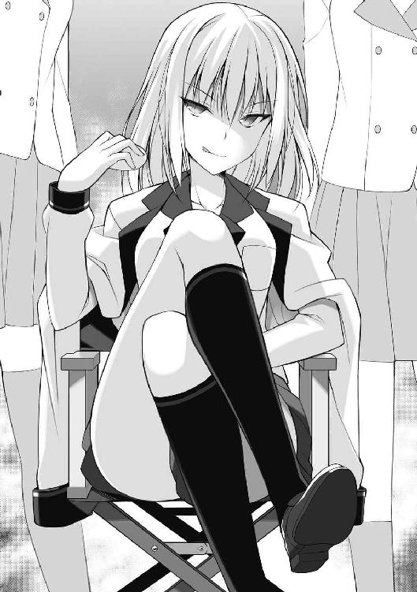

| あの、一緒に戦争しませんか? (電撃文庫) | |
| 高村 透 | |
| 株式会社KADOKAWA (2017) | |
本書（電子版）に掲載されているコンテンツ（ソフトウェア／プログラム／データ／情報を含む）の著作権およびその他の権利は、すべて株式会社ＫＡＤＯＫＡＷＡおよび正当な権利を有する第三者に帰属しています。
法律の定めがある場合または権利者の明示的な承諾がある場合を除き、これらのコンテンツを複製・転載、改変・編集、翻案・翻訳、放送・出版、公衆送信（送信可能化を含む）・再配信、販売・頒布、貸与等に使用することはできません。
序
やわらかさが春の空からこぼれるような陽気だった。
その高架駅のホームからは町を一望に収められた。よくある郊外の町並みだった。町全体がうららかな陽気に誘われて、昼寝をしているようだった。
やがて銀色の電車が、利用客のまばらなホームに到着する。
空気が排出される音とともに、ゆっくりとドアが開いた。なかから制服姿の女子高生が大勢下りてくる。それだけなら日常的な光景かもしれないが、彼女たちは小銃や軽迫撃砲などを抱え、武装していたのである。
しかし利用客は、たいして気にした様子もなく、電車に乗り込んでいった。発車を知らせるメロディーがホームに鳴り響くと、久木成海は教師のような口ぶりで言った。
「それじゃあ、西口のロータリーで集まって。歩行者の邪魔にならないように」
「はーい」
と武装少女たちは吞気に答え、改札口に向かっていった。その後ろ姿を眺めながら、成海はにわかに懐かしさを覚えた。つい一年前は彼も戦っていたのだ。
全国高校戦争学大会の参加者として。
ロータリーで点呼をとったのち、一同は行軍を開始した。成海が引率した。これも指導教官の仕事だった。振り返ると何人かがスマートフォンをいじっていた。口うるさく注意するのが得意ではない成海は苦笑いを向けるだけだった。住民の迷惑になっていなければ、ひとまずはよしとしよう。そんなことを彼は思った。
この武装した少女たちは、埼玉の戦争学部部員である。まるで遠足のような雰囲気に包まれているが、いまからこの少女たちは戦争を行うのである。敵である東京を相手に。
荒川の河川敷にたどり着いた。先発隊がすでに到着していて、迫撃砲の設置にとりかかっていた。近くの橋にも何人かの部員がいて、機関銃や土囊の配置作業を楽しそうにしている。
『昨日の今日だから、どうなるかと思ったけど、案外、うまくいきそうだ』
と成海は心のなかで安堵した。だがふと、例の黒髪の少女が思い出されて、にわかに表情をかたくする。ちょうどそのときだった。
「教官、あの、聞いてください」
長い髪をはずませて、三田村涼花が駆けよってくる。いつになく張りつめた顔をしていた。緊張のせいか手足の動きが同じだった。ああ、まずいなと成海が思うのと同時に、涼花は何でもないところで足を滑らし、尻餅をついた。なかなかに痛そうだった。彼女は苦痛を耐えるかのようにきつく瞼を閉じ、それでもしっかりスカートを押さえながら言葉にならぬ声を発する。
「うん、聞いた。おもしろい声だね」
成海はやさしげな顔に、いくらかの苦々しさを滲ませる。まだ短いつき合いではあるが、どうも彼女は頼りない。このようなどじは日常茶飯事だし、いつも内気さを眉の辺りにあらわして怯えたように周囲を窺っている。自分自身に自信がないのだろう。清楚とかわいげがうまく調和した見事な顔立ちをしているのだから、もっと自信を持てばいいのに......いや、容姿を根拠に自信を持たれても、それはそれで嫌なものだが。
とにかく成海も、そして周囲の部員も、皆、冷ややかな視線を送った。誰も口にこそしないが、それでは困るのだ、と眼で語っていた。
なぜなら涼花は、埼玉政府の首相なのだから。
たとえ無責任内閣の首相と揶揄されていても、誰にも期待されていなくても、その事実に変更はなく、埼玉の命運は彼女のか細い肩にかかっていると言っても過言ではない。少なくとも、ここに集う埼玉政府軍の未来は彼女に委ねられていた。
涼花は立ち上がると、スカートの汚れを手で払った。それから対岸に向かって指をさした。
「あの、連絡があって......うまくいったんです。これで、その......」
「おれに言っても仕方がないよ」
にこやかに窘めると、成海は作業中の先発隊を呼び寄せ、それから全員を涼花の前に並ばせた。皆、それぞれの学校の制服を着ていたため、統一感があまりなかった。だいたいどこの政府もそうなのだが、しかしそれが埼玉の現状を雄弁に語っているように思われた。
「え、えっと......」
突然、スピーチをすることになった涼花は明らかに困惑しながら、それでも微笑んでみせた。しかし兵たちは首相の微笑を黙殺した。春の風がいやに冷たかった。涼花が助けを求めるように、成海に顔を向けてきたが、彼は首を振ることで自分が何も手助けしないと暗に示した。涼花は涼花自身の言葉でこの戦争の意義を兵に語らなければならない。開戦を決断した首相として、それは最低限の務めだ。少なくとも成海はそう考えていた。
やがて観念したのか、ぽつぽつと小さな声で涼花が話しはじめる。
「こ、今回の作戦の目的は、その......東京の勢力圏を荒川から隅田川まで押しやることです。戦争と呼ぶには小さな......ほんとうに小さな戦いですが......それでも、あの、わたしたちにとっては、きっと......」
無責任内閣の首相は、檄の飛ばし方をあまり知らないようだ。皆、彼女の話を聞かず、いかにも興味のなさそうな顔でそっぽを向いている。
そんな仲間たちを見て、涼花はふと口をつぐんだ。演説はここまでかと思われたそのとき、涼花は何やらやけっぱちになった様子で、妙なことを口走った。
「べ、べつにいいんです。話を聞いてもらえないのは、慣れています。お弁当だって、トイレでひとりで食べています。わたし、友達いないから」
空気が一変した。というより、いったい首相閣下は何を赤裸々に語る気なのかと、一同に動揺が走ったのである。そんな空気の変化に気づかず、さらに涼花はつづけた。
「わ、わたしって、そんなに変ですかね。そりゃたしかに、笑っちゃいけないところで笑ってしまう癖があって......怒られてるときに、よくそうしてしまって、余計に怒られることになって......あの、チャーチルの言葉に、こんなものがあるんです」
急にチャーチルという単語が出てきたときが、動揺のピークだった。話の展開についてゆけない。しかし、先ほどまでとはうって変わって、皆、固唾を吞んで涼花を見守っている。これほどまでに先が予想できない話を聞かされるのは、おそらくはじめてだったのだろう。
「敵がいるのはよいことだ。人生のあるとき、何かのために立ち上がったということなのだから──あの、正確ではないんですけど、だいたいこんな感じのことを言っていて......つまり、わたしにとって敵とは、皆さんのことです。首相なんて嫌で仕方なかったけど、それでも今日ここに首相として来たのは、勇気を失うことがもっと嫌だったからです」
涼花は向こう岸に視線をやった。対岸は東京都である。優勝候補のひとつであり、例年、埼玉は東京に敗れている。明らかに格上の相手である。使用する武器や兵器は、大会のルールによって同じものを使うよう決められているが、生産力は都道府県別に異なり、埼玉と東京では大きな開きがある。榴弾砲ひとつにしたって、埼玉では新たにつくるのに何週間もの時間を要するが、東京は二、三日で生産してしまう。戦車や戦艦、おまけに爆撃機だって多数所持しているとの噂である。
「東京と戦う──たしかに無謀かもしれません。けれど、わたしたちはここにいます。強大な敵を見出したとき、同時にそれは、わたしたちが勇気を持って立ち上がったことを意味するんです！ わたしは皆さんに戦いを挑みます。わたしを認めてもらうために。皆さんは東京に戦いを挑みます。全国に皆さんの実力を見せるために。そうです、この戦いは、大局から見れば些細な小競り合いなのかもしれませんが、わたしたち埼玉からすれば、大きな意味を持つ戦いなんです。ここからすべてがはじまるんです！」
そして涼花は激しくむせた。大声を出すことに慣れていないらしい。
何やらよくわからぬ演説──いや、演説に満たない拙い語りではあったが、それでも彼女の真剣さは充分なほど伝わってきた。拍手こそ起こらないが、部員たちはまっすぐにこの不器用な首相を見つめていた。その視線には、ほんのわずかではあるが、指導者を見つめるときの敬意と熱意が含まれていた。彼女らの心に何かしらの変化を生んだのは明らかだった。
『......不思議な子だ』
と成海は思った。そして、もしかしたらと期待している自分に気づいた。この期待、これこそが指導者に求められる素質であるのなら、すでに彼女は満たしているのかもしれない。おそらく、無自覚のうちに。
涼花はそのはっきりとした二重瞼を一度閉ざし、大きく息を吸い込んだ。それから、決意をはき出すかのように瞼を開け、瞳に眩い光を耀わせた。
「皆さん、戦争をはじめましょう」
その言葉は澄み渡った青い空へ抜けていった。
少女たちの長い戦いが、いま、はじまろうとしていた......。
久木成海はやや憮然とした面持ちで校舎を見上げていた。
この春、さいたま新都心に開校したばかりの新設校だけあって校舎は真新しく、また、しゃれた外観をしていた。光を多くとり込むための工夫が施されている。この学校にくらべれば、自分がかつて通っていた高校は監獄だなと成海はしみじみ思った。
さいたま女子高──ここが成海の新たな職場だった。クラブ活動の臨時指導教官に任命されたのである。高校野球などにおいて、外部から監督を招くことがあるが、要するにそれだ。教師ではないため、彼自身が授業を受け持つことはない。
辺りには帰路につく学生が大勢いた。ブレザーにチェックスカートというごく普通の制服だった。生徒も自らの制服に倣うかのように、ごくごく普通の少女たちばかりだった。彼女たちは遠巻きに成海を見て、何やらひそひそと囁き合った。
『男がめずらしいのかな』
と成海は訝しんだが、彼が好奇の眼にさらされているのは他に理由があった。恰好だ。生徒とは対照的に彼の服装は特異だ。赴任初日なのだからきちんと正装してくるべきなのに、彼はジャケットのかわりに支給品の薄いジャンパーを羽織っている。迷彩柄で、背中には『全国高校戦争学大会運営委員会』とプリントされてあったが、それよりも武装した少年少女が爽やかに笑うイラストのほうに注意が向かう。大いに誤解を生みそうなイラストである。
その奇妙なジャンパーだけであったのなら、まだ眼をつむれたが、ひょっとすると購入してから一度もアイロンをかけていないのではないかと疑えるほど皺の入ったワイシャツやスラックス、寝癖にしては冗談が過ぎるほど跳ね上がった髪......他にも多々あるが、とにかくだらしがなかった。
とりわけうら若い乙女たちの関心を惹いたのは、彼の履いている健康サンダルだった。最近ではあまり眼にする機会がなくなった、あのいぼいぼのついたサンダルである。彼はそのいぼいぼがたまらなく好きだったのだが、だからといって今日という日に当たり前のように履いてきてよいものではない。
要するに久木成海は、戦争学以外に興味を持てない人間だったのである。
素材は、二枚目をほんの少しおもしろい方向に崩した程度なので、充分よいほうだ。背だって高い。もう少しまともな恰好をすれば、孤独な夜とは無縁になるはずなのに、それすら興味がないとばかりに無頓着を貫くのは、実にもったいないことである。
しかし今回に限って言えば、それでよかったのかもしれない。
「まあ、あなたなら大丈夫ね」
案内された応接室で、いくつか学校についての説明があったのち、教頭の伊藤京子はそのようなことを言った。ふっくらとした体形で、成海よりふた回りは年上のように思われた。おかたい印象はなく、むしろ人情的というか下町っぽさを感じさせる人物だった。その体形と、しゃがれた声のせいなのかもしれない。
「何が大丈夫なんでしょう」
「うちの生徒の眼よ」
彼女は口を大きく開けて笑った。それから、腰をソファーから浮かして、楽しそうに成海の肩を叩いた。うまいことを言えた気になっているらしい。しばらく眼を点にしていた成海であったが、やがて何を言われているのか気づき、眉尻を下げて苦笑した。
「教育のたまものですね」
と皮肉を返すのがやっとだった。
京子は教頭であるのと同時に、戦争学部の顧問でもあった。ほんとうは部活動に充てる時間などないのだそうだが、人手が足りずにやむを得ず受け持っているらしい。というのも、必ずどこかのクラブに所属しなくてはならない校則が、このさいたま女子高──すなわち、さい女にあったからだ。新設校にしては、やや古めかしい校則だと言えるが、とにかくその校則と、開校したばかりという土壌から生まれるある種の混乱とが無秩序に融合し、クラブが粗製濫造されてしまったのである。言うまでもなくそれぞれのクラブには顧問を置かなくてはならないので、自然、職員の手が足りなくなるのだ。成海が指導教官としてさい女にやってきたのは、こうした学校の事情を運営委員会が汲みとったからでもある。健全に戦争学の部活動を実施するには、経験のある者の助力が必要だと判断されたのだ。
「ああ、ここよ」
部室棟二階、突き当たりの部屋の前で京子は立ち止まった。それほど歩いていないのに彼女は息切れをしていた。ダイエットをすすめようか一瞬成海は迷ったが、あえてそれを口にはせず、べつの言葉を言った。
「ここが戦争学部ですか」
クリーム色のドアには、段ボールに『戦争学部』と書かれた看板らしきものが、ガムテープで貼りつけられてあった。いかにも急ごしらえという感じである。いや、これはまさに戦争学部の混乱を、端的にあらわしているのかもしれない。
ふいに京子は成海のほうを向いて、やや厳しい剣幕で言った。
「念を押すようだけど、わたしがあまり顔を出せないからって、よからぬことを考えないでちょうだいね。生徒とは絶対に一線を越えない。いいわね」
「ぼくは大丈夫なんじゃ？」
「こんな大切な日に、健康サンダルをパタパタ鳴らしているような人を、ほんとうに信じていいのか急に不安になったのよ。ただでさえ戦争学部は問題があるんだから、これ以上、わたしに保護者の靴を舐めさせる真似はさせないで」
「何なら一緒にやりましょうか」
「......結構よ」
眉に険しい谷をつくって、京子は重たいため息をついた。だがそれ以上のことは何も言わず、あるいは言ってもむだだと悟ったのかもしれないが、とにかく戦争学部のドアを開けた。
──部室には春の光が射し込んでいた。
人の気配はなかった。どこかに隠れるような場所などない。狭い部室なのだ。中央には長テーブルが置かれていて、そこに書類が高く積み上げられている。まさに山だった。
崩れ落ちるのではないかと成海がはらはらしていると、京子はその書類の山に呼びかけた。
「三田村涼花さん」
「は、はい！」
素っ頓狂な声とともに、書類の山のなかから、ひとりの少女が立ち上がった。まったく気配を感じなかったが、最初からそこにいたらしい。
成海はやや驚きながら、その涼花と呼ばれた少女を見る。涼しさと花のような可憐さが、うまく嚙み合った顔立ちをしていた。下ろした黒髪をふたつに結んでいる。肌はみずみずしく、手足は細かった。教頭の京子が露骨に警戒するのも肯けた。
しかしながら、内気な性格をしているのか、その大きな眼はつねに伏し眼がちで、怯えたように身を縮めている。成海は何となく壁を感じた。同時に、それが彼女の美しさに水を差しているように思われた。
「三田村さん、こちらは今日から戦争学部の臨時指導教官になる......ほら」
「ああ、はい。久木成海です。よろしく」
京子に促され、成海はややぎこちなく名乗り、書類の山に埋もれる少女を見つめた。当然、涼花からも自己紹介があると思ったからだ。しかし彼女は眼を瞠って、口を魚のようにぱくぱくと動かすだけで何も言わなかった。
いささか奇妙な沈黙がつづいた。警戒されているのかと成海は疑ったが、どうもそういう様子ではない。彼が小首をかしげると、ようやく少女はか細い声で言った。
「教官......戦争学の、先生ですか。あ、あの、ひ、久木成海が！」
「おれのことを知っているのかい？ まあ、悪い意味で有名になってしまったからね」
「い、いえ、そ、そんな！ いまは、ほんとうに、あなたのような人の手助けが必要で......よかったあ......」
脱力した様子で涼花はイスに尻餅をつくように座った。その弾みに足をテーブルに当ててしまい、積み上げられていた書類が彼女に向かって崩れ落ちた。彼女はうわあと悲鳴を上げながら書類の下敷きになった。痛そうとも不運とも思われない、実にコミカルな光景だった。ほんとうにうわあと悲鳴を上げる人物がこの世に実在することを、このうら若き乙女が証明したからであろう。
京子はそれについて何の感想も漏らさなかったが、成海に向けられた顔がげんなりしていたことから、だいたいのことは察せられた。京子は成海の肩に手を置いた。
「あとは任せられるわね？」
「ええ。とりあえず、あと片づけをします」
と言って、成海は苦笑した。
戦争学──。
選挙権が引き下げられ、にわかに主権者教育の必要性が叫ばれるようになると、政府は本格的な教育改革を実行した。その目玉が、戦争学の導入である。
何やら物騒なもののように思われるかもしれないが、戦争学とは、なぜ戦争が起こるのか、どのような経緯で、背景で、そして何を目的とするのかを学問的に研究し、戦争にいたらないためには個々人がどのように政治と向き合ってゆくべきなのかを学ぶものであり、決して戦術や戦略を学生に叩き込むものではない。要するに主権者教育と平和教育を攪拌させたものと言えるのだが、従来のそういう教育と大きく異なるのは、擬似的に戦争を体験することで、『戦争と平和』とはいったい何なのかと子供たちに考えさせようとしている点にあった。
擬似的に戦争を体験するとは、どういうことか。簡単に言えば、都道府県ごとに学校が集まって政府をつくり、それらが戦争を行って全国統一を目指すのである。
それはつまり戦争の肯定ではないのか。政府は子供に戦争のやり方を教えているのではないのか。そのような批判が起こったのも事実で、また、戦争学というネーミングの悪さから市民の生理的嫌悪を生み、これに反対するいわゆる『反戦派』の市民運動が盛んになった。しかしその一方で、ほんものの戦争を経験した人間が、きわめて少なくなっているのも事実である。戦争経験者が高齢化し、減少してゆくのは、それだけわが国が平和であった証拠であるのだが、戦争が遠い歴史の出来事となってしまい、リアリティーを欠いてしまうのはやはり問題があった。評論家はこぞってこれを問題視し、戦争から現実性が失われるとき、理屈と空想によって生み出された戦争が、国民の感情によって安易に選択されると指摘した。
政府も同じ考えだった。そこで何度も有識者会議を開き、若者の政治参加と反戦を旨とした戦争学教育を行う方針をとりまとめた。当初の案では、すべての高校生が戦争を体験するというシンプルなものだったのだが、強制的に全学生に戦争体験をさせるのはいかがなものかと野党や反戦派の批判に晒され、結局、戦争学は選択科目となり、実地体験は課外活動つまり部活動の『戦争学部』で行うことになった。あくまでも部活動なので、望まなければ入部しなくてよいし、また、文科省の推奨もあって多くの学校が戦争学部をつくったが、部員数が減少すれば廃部になる可能性だって大いにある。この辺りは普通の部活動と変わらない。
とにかくこのようにして戦争学は、選択科目と部活動に分離され、高等教育に導入された。戦争学部に入るには選択科目の戦争学を必ず選ばなければならなかった。また、全国統一を目指した各都道府県の戦争は、全国高校戦争学大会において行われることになった。大会運営委員会の主催のもと、男子部と女子部にわかれて毎年開催される。開戦は四月二九日で、終戦は一一月末と規定されている。一二月から新学期までは予備期間で、基本的にはこの間に選挙、政府体制の準備等を行う。三年生は一一月で引退する。しかし、一一月の終戦においても勝敗が決しなかった場合、運営委員会の総合的判断によって予備期間に引きつづき戦争を行うことができる。むろん三年生は引退しているので、一、二年生のみでの戦いになる。
優勝とされる全国統一だが、これはべつにすべての都道府県を制圧する必要はない。事実上の全国統一だと運営委員会に認められた場合、優勝となる。その事実上というものが何を意味するのか研究するのも戦争学であるため、とくに公表はされていない。
つまり、ただ戦えばよいというわけではないのだ。外交や政治闘争も重要なファクターとしてかかわってくるし、制度や法律といったものだっておのおの自由に制定できる。まさに疑似政府なのである。そのため、現実に起きた問題に類するものが、その疑似政府内においても発生することがある。
埼玉政府などは、そのよい例だった。
「事前に報告は受けているけど......かなり問題があるようだね」
部室の片づけがひと段落ついたあと、久木成海はパイプイスに座って訊ねた。三田村涼花は立ったまま、うつむいて指をもじもじと動かしていた。
「座ってよ。埼玉首相閣下を立たせているだなんて、畏れ多い」
成海は破顔して言った。そのすすめに従って涼花もパイプイスに座ったが、表情は冴えなかった。それにどこか頼りない。
しかしこれでも彼女は、県内一二七校が参加する埼玉政府の内閣総理大臣である。ならばもっと堂々としていてよいというか、パフォーマンスの面も含めてそうしているべきなのだが、彼女は捕らえられたうさぎのように怯えている。性格上の問題？......それもあるだろうが、より大きな問題によって、彼女の自信は失われていたのである。
「首相といっても、内閣はわたししかいないんです」
その大きな問題というのが、要するにこれである。埼玉はいま、ひとり内閣だった。
「日本の歴史上でも、片山内閣、第二次吉田内閣、石橋内閣、そして直近では羽田内閣......ひとり内閣の期間があったのは、この四例だけです。しかもどれもひとり内閣だったのはごく短期間で、すぐに通常の内閣に戻っています。最長でも約八日間です......ええ、片山内閣です。ＧＨＱ占領時代に、はじめて日本国憲法下で首班指名が行われたあの片山内閣です！ そこにわたし、並んじゃいましたよ！」
「そ、そう。詳しいんだね」
頭を抱えて叫ぶ涼花にいささか気圧されながら成海は言った。しかし、彼女がとり乱す気持ちはよくわかった。ひとり内閣とは、首相が全閣僚を兼任して親任式に臨み、閣僚が決まるまでその状態をつづけることである。むろん、それは決して褒められたものではない。調整に失敗し、組閣ができなかったので、やむを得ず首相が全閣僚を兼任しているに過ぎないのだ。
「しかし、逆に考えればきみは独裁者だ。権力にものを言わせて、埼玉をよい方向に導いたらどうだい」
ちょっとでも場を和ませようと、成海は冗談を言った。が、その冗談の質は大いに悪かった。涼花は勢いよく両手をテーブルについて、さらに捲し立てた。
「独裁を簡単に考えすぎです！ 根回し、調整、それらをきちんと行っていなければ、いくら権力を集中させていても、全体の意思を思うがままに操るなんて不可能です。粛清が起きるのも独裁権があるからではなく、それを確立するために反対派を全体から排除するためで、当然、根回しを行った上で実行していて......もちろん、粛清を肯定するつもりはありませんが、とにかく独裁権の確立というのは、それだけ困難を伴う事業だということで、少なくとも日本の歴史ではそうですし......というか、いわゆる独裁者がこの国に誕生したことがあるのか疑問ですよね。戦前における新体制運動の挫折がよい例だと思いませんか。他にももちろん例が──」
「いや、政治のことはよくわかった。それで、つまり？」
「え、つまり？......あ、はい、つまり何が言いたいのかというと、わたしは孤立しているだけなんです。文字通りの意味で、ひとり内閣なんです......あの、すみません。喋りすぎですよね」
「政治に興味が？」
「い、いえ、戦争学が好きなんです。戦争学と政治は切っても切り離せない関係ですし、実際に座学のほうの......選択科目の戦争学では、政治について学びます」
「それはもちろん知っているよ。おれだって戦争学をやっていたからね。でもきみは、それにしたって詳しい。マニアってやつ？」
「......ええ、そうですよ、おたくなんです。だから、この手の話になると、つい熱が入ってしまうというか、われを忘れてしまうというか......昔からずっとこうなんです......」
うつむいて涼花は言った。自分の得意分野だとやけに饒舌になるタイプがいるが、どうやら彼女はそれらしい。
「ははは、友達をなくしそうだね」
「なくしそうじゃなくて、なくしたんです。実際に」
成海の冗談はまたもや質が悪く、やぶ蛇になった。部室内は変な空気に包まれた。ひとまず彼は笑ってみた。ほんとうはちっとも笑いたくないし、というか笑えないのだが、そうする以外にどうすればよいのか彼にはわからなかったのだ。
乾いた笑いが響く。しばらくして、ぽつりと涼花は言った。
「......だから、わたし、戦争学部をつくったんです。戦争学部なら、戦争学に詳しい人間がいたって変じゃないですし、それに、えっと、新設校ですから、ややこしい上下関係もなく、わたしみたいな性格でも、みんなで楽しく戦争学ができると思ったんですけど......やっぱり、むりみたいでした」
「むりということはないだろう。報告だと、きみ以外にあと三人部員がいるはずだけど」
「みんな、嫌になっちゃったみたいで。もうわたし以外、誰も来ないんです。あはは......だめだめですね。首相としても、部長としても......」
ふいに顔を上げ、涼花は笑った。それは成海の笑みとは違って、かなしみを秘めたはかないものだった。逆光が彼女を縁どり、きらきらと光る。それに気をとられて成海は言葉を発することができなかった。どうせ気の利いたことなど言えないのだ、それで正解だっただろう。
涼花はイスから立ち上がると、書類をまとめはじめた。どこかに行くようだ。
「これから予算委員会なんですけど、あの......なぜ組閣に難航しているか、委員会を見てもらえればよくわかるかなって......だから、その、すでにご承知なら、べつにいいんですけど、でも何ていうか、予算委員会は首相の学校で開かれますし、すぐそこですし、その......」
「ああ、おれも行くよ。実際に見ておきたいからね」
と成海が言った途端、ぱっと涼花の顔に明るさが宿る。
「そ、そそ、そうですか。見ておきたいのなら、仕方ないですよね。あは、あはあは......」
慎み深く微笑めば絵になるだろうに、彼女はそれとは真反対のしまりのない奇妙な笑みを浮かべた。笑い声もどこか変だ。自分の容姿を、自らの所作によって貶めている。それも個性なのかもしれないが、できれば改善したほうがよい個性であるのは明らかだった。
「で、では、参りましょうか。レッツ、参りましょう、予算委員会」
完全に彼女は浮かれていた。内閣からも、戦争学部からも孤立して、孤独に部活動に打ち込んでいたのだ、相手が友人ではなく教官でも、誰かと一緒に行動するのが嬉しいのだろう。それは成海にもわかる話だった。しかし、浮かれすぎと言えた。彼女は重そうに書類の束を抱えて歩き出すのだが、なぜか前を見ずに成海のほうばかり口もとをゆるめながらへらへらと見ていた。前方への注意を怠った結果、案の定と言うべきか、そのままドアに頭をぶつけた。
「アイタッ！ うわあ！」
結構強めにぶつけたらしく、彼女はその反動で後ろに倒れ込んだ。書類も放り投げてしまった。だがその宙に投げられた書類は、床に散らばるのではなく、狙いを定めたかのようにすべて彼女に降りかかった。不運というか、ある意味では、実に器用である。何度も繰り返す辺り、とくにそうだ。
「......よっぽど下敷きになるのが好きみたいだね」
と成海は、書類に埋もれる涼花に向かって言った。
「海軍としてはこのような案に賛同できん！」
視聴覚室にその怒声が響き渡る。叫んだのは新谷七実海軍艦隊司令長官だった。いかにもこらえ性のなさそうな顔立ちで、内側の溢れんばかりの元気さを眼に輝かせている。束ねた髪が全方向に散らされていて、どことなくパイナップルを連想させた。また彼女は、黒いセーラー服を着ていた。氷川高校の制服である。
「予算はこちらが提出した要望書に従ってもらいたい。それとも首相は、海軍を軽視なさっておられるのか」
「え、えっと......ちょっと待ってください」
教壇の涼花は書類の山からその要望書とやらを、やや慌てて探す。
室内では多くの生徒が学校ごとにわかれて着席しており、順番と持ち時間に従って首相に質問を──というより、おのがじし勝手な意見を涼花にぶつけていた。他に閣僚がいればまだ楽だっただろうが、なにぶんひとり内閣である。すべて涼花ひとりで対応しなくてはならないため、彼女はすでにてんてこ舞いであった。
しばらく涼花は提出されたはずの要望書を探していたのだが、どうにも見つからなかったらしく、引き攣った笑みを浮かべながら言った。
「あの......なくしちゃいました......」
「え、なくしちゃった？ 頑張って書いたのに......いいや、そうじゃない。首相のその態度、それこそまさに海軍を軽視している証拠だ。真子、言ってやれ！」
「このポンコツ首相！ 無責任内閣！ 海軍を軽視するな！」
と神崎真子は野次った。彼女も氷川高校の生徒だった。剽悍で、傲岸不遜な面貌だが、同級の新谷七実と同じく、何か憎めない愛嬌があった。八重歯のせいかもしれない。
真子は軍令部総長だった。海軍三長官──海軍大臣、艦隊司令長官、軍令部総長のうちふたつが、氷川高校の生徒に任されているのは偶然ではない。もはや海軍とは、氷川高校の別名であったのである。
では陸軍はどうかというと、これも同様である。県内でも有数の進学校である常磐高校の生徒が要職を歴任していた。唯一の違いは、氷川高校があくまでも海軍の要望を内閣に実現させようとしているのに対して、常磐高校は、陸軍主導による政権の樹立を考えていたことである。実際に、予備期間中にそれを行おうと政変を画策したのだが、実行前に露見してしまい失敗している。埼玉政府はこれを『三月事件』と呼称している。
「埼玉に海はないのだ。海軍が軽視されても仕方なかろう」
やや低めの、舞台役者のような声だった。
声の主は永山朱理だった。彼女は嘲笑を氷川の七実に向けながらイスに座っている。しかし不思議なほど傲慢さや尊大さを感じさせなかった。むしろ清廉さを感じさせる居住まいだった。
この朱理こそ常磐高校の頭領で、そして、三月事件の首謀者と言われている人物である。陸軍のトップ、参謀総長の地位にいた。
一方の、嘲笑を受けた七実は顔を赤くして、肩を震わせていた。埼玉に海はない。たしかにその通りだ。おかげで海軍であるのに、軍艦を一隻も所持していない。この事実を、氷川の全部員は恥じていた。彼女たちの宿願は、海を手に入れることだった。内閣に強硬な態度を貫くのも、つまりはこの宿願を果たすためだった。
「う、海がなければ、手に入れればいい。いまは一隻も軍艦がなくとも、いざ海を手に入れたときに困らないように、われわれは訓練を積んでいるんだ。すごい頑張っているんだ。真子、言ってやれ！」
「われわれは真面目に頑張ってるんだぞ。裏でこそこそ動き回ってる陸軍とは、精神の純潔性からして違うんだぞ！」
すると、朱理の隣に着席していた東原郁乃が、急に立ち上がる。三つ編みの、眼鏡をかけた女子生徒だった。
「仕事がないから、暇つぶしに訓練をしているだけじゃないですか。お金だってかかるのに、意味もなく戸田のボート場で遊んで......他の県からあなた方海軍がどのように呼ばれているか知っていますか。ださいたまボート部、だそうですよ。恥ずかしいのでやめてもらえませんか」
「え、恥ずかしい？......ちょっと、言いすぎじゃ......ねえ、真子？」
「そ、そうだぞ、われわれはイケてるはずだぞ......断じてださいたまではない......」
海軍のふたりは傷ついた顔で、語気を弱める。だがそれも一瞬のことで、すぐに調子をとり戻し、ことさら三月事件を槍玉に挙げて強く陸軍を非難した。
「そもそも、政府転覆を企てた永山朱理参謀総長が、なぜに大きな顔をしてこの場にいられるのか。陸軍に恥はないのか！」
「朱理さんはもとよりわれわれ陸軍が、三月事件などという陰謀に荷担した事実はありません。あなたたち海軍が勝手にそう言っているだけです。それにですね、恥というのなら、海も軍艦もないのにぬけぬけと予算拡大を主張する海軍のほうが、よっぽど恥知らずだと思います」
七実の追及を軽くかわし、その返す刀で郁乃は海軍に逆襲した。この東原郁乃は陸軍の事実上のトップである永山朱理の懐刀と目されている。生真面目で融通が利かなく、また、朱理に心酔しているともっぱらの噂で、陸軍においては教育総監のポストに就いている。陸軍最高幹部のうちのひとつである。
「あ、あの、皆さん、ちょっと......」
涼花は、自分が進行役であることをはたと思い出し、いがみ合う陸海軍に呼びかけるのだが、
「とにかく海だ、海！ これを獲得すると確約してもらわなければ、海軍は政府と協調することはできない」
と七実が言えば、
「海軍は現状認識が甘すぎます。問題は海ではなく陸にあります。もっと言えば、東京にある。ご存じの通り、東京は優勝候補です。生産力も、実力も、われわれを凌駕しています。この脅威に対応することこそ、喫緊の問題のはずです。ここはわれわれ陸軍が提出した高度国防国家計画に従って、予算案を再検討してもらう必要があります」
と眼鏡の郁乃が応じ、
「東京が何だ。必勝の信念をもってすれば何とかなる！ 氷川神社のご加護があるんだぞ！」
と腰巾着の真子がよくわからないことを言う。
まるでまとまる様子がなく、むしろ視聴覚室は喧々囂々たる雰囲気に包まれる。こうなると首相が強いリーダーシップをもって、事態の解決に臨まなくてはならないのだろうが、当の涼花は引き攣った顔で、
「ひえぇ......」
と呟くだけだった。
もっとも、この一点をもって涼花の首相としての資質を批判することはできないだろう。おのおのが好き勝手なことを言い、しかも部署単位でしかものごとを見ていないのだ。ひえぇ、いかにもその通りだ。少なくとも、視聴覚室の一番後ろから傍聴していた久木成海にはそう思われた。
『......大丈夫なのかな、これで。彼女たちは開戦まであと八日しかないということを知っているのだろうか』
戦争学大会の開始日である四月二九日は眼前まで迫っている。この日は開戦日と呼ばれ、実際にこの日を境に各地で戦争が行われることになる。開戦日当日に、宣戦布告をする政府だってめずらしくない。だからこそ政府は開戦日までに万全の態勢を整えておかなくてはならない、というか、それが定石なのだが、埼玉は戦争態勢どころか政府体制すらろくに整っていないようである。例年、開戦間もなく東京に敗れているらしいのだが、これはひとえに埼玉政府の体質に問題があるのではないか。そんなふうに成海には疑われた。
『だいたい、なぜ軍人が予算委員会に出席して、わがもの顔で発言しているんだ。予算委は議会の常任委員会だろうに......うちの京都でもその辺りの分別はできていた。いや京都だけじゃない。おれの知る限り、どこでもそうだった。時代の変化？......まさか。おれが高校を出てまだ一年しかたっていない』
これもまた疑問だった。予算委というのは、内閣が提出する予算案や重要な法案等についても審議する花形の委員会で、議会議員によって構成される。そう、議会議員だ。戦争学においてもやはり選挙は存在し、議会議員は通常、戦争学部の非軍人部員のなかから選挙によって選出されることになる。だというのに、なぜ埼玉では予算委に軍人がいて、しかも軍の代弁者たる姿勢を崩そうとしないのか。
成海はふと三月事件の首謀者とされる朱理に視線を送った。その瞬間に、彼はわずかな戦慄を覚えた。朱理がこちらに体を向け、じっと凝視していたからである。
あまりにも鋭く、それでいてつかみどころのない視線だった。攻撃的なようでそうでなく、腹のうちを探るようで、とっくにすべてを見透かされているような......思わず成海がたじろぐと、朱理は含み笑いを残して視線を逸らした。そして隣の郁乃に何か耳打ちをする。声は聞こえなかったが、自分にとって好ましいものではないことくらい成海にもわかった。
『......いずれにしても、今日は何も決まらないだろうな』
成海は頰を搔きながら、心のなかでそうひとり言ちた。彼の予想通り、この日の予算委は陸軍と海軍の無益な言い争いで終わった。
「......お、おわかりいただけましたか」
予算委が終わり、皆が退出した視聴覚室で、机に両手をついてうなだれながら涼花は言った。もう陽は沈み、外には暗がりがひろがっている。蛍光灯の冷たい明かりが、涼花と成海を照らしていた。
「とても混乱していることはわかったよ」
成海は言葉を選びながら答えた。すると涼花は急にその小さな顔を上げ、同意を示した。
「はい、とても混乱していて、わたしにはどうしたらいいのかわからなくて......なんで、わたしなんですかね。大統領は何を思ってわたしを首相に指名したんでしょう」
「ああ、埼玉には大統領もいたんだったね。半大統領制なんだっけ」
と成海は訊ねるのだが、涼花はやや苦い表情を浮かべて首を振った。
「半大統領制というと、フランスなどのように大統領に大きな権限がありながら同時に議院内閣制の仕組みを採用している制度のことを指して言いますが、わたしたちの埼玉では、たしかに大統領には首相を指名する権限があるんですが、結局それだけで、ほぼ儀礼的な存在なんです。だから半大統領制とは言いにくいというか......あの、フランスの政治制度についてもっと喋っても？ すごくおもしろいんですけど」
「それはまたにしよう。それよりも......そうだね、ちょっと疑問に思ったんだけど、どうして軍人が予算委員会に出席しているんだい？」
「軍人？......あ、ああ、はい、それはですね、わたしたち全員が軍人だからです」
「は？」
予想外な言葉を聞いて、思わず成海は訊き返した。彼女たち全員が軍人とは、いったいどういう意味なのか。もはや政府は軍部の支配下にあるということなのか。
すると埼玉首相は、どのように説明したものか思い悩むように視線をさまよわせた。
「つ、つまりですね、比喩でも暗喩でもなく、文字通り、わたしたちは全員軍人なんです。もちろん、これが戦争学の常識から外れていることはわかっていますが、制度としてすでに確立している以上、どうしようもないというか......」
涼花はたどたどしい口調で一切を語った。その下手な説明によると、埼玉では文民と軍人の区別がないらしい。区別すれば、軍人の数が減るからである。戦争学大会においては、武器は運営委員会が定めたものを使用する。生産能力こそ都道府県によって違いが生じるが、同じ武器を使用するのなら、戦局を最終的に左右するのは兵数である。であれば、軍人を減らすのは好ましくない。全員で戦って全員で政治を行えばよい、と考えたらしく、埼玉の戦争学部員全員を軍籍に置いて、しかもそれを認める憲法を作成して、一院制の議会をつくったそうだ。各校の部長は自動で議員になれるが、その他の議員は、戦争学部員による選挙で選出される。
結論から言うと、この制度は間違いだった。軍部内で発言力を得た者が自然と議員に選出されるようになり、選挙政治ではなくコネ政治に陥ったのだ。また、組閣の際に陸軍大臣なら陸軍の、海軍大臣なら海軍の承認が必要と憲法に明記されているのも問題だった。なぜなら政府方針に異議がある場合、軍部は大臣の承認を拒んで組閣を阻止することができるからである。
「軍艦がなくとも、内閣をつぶす能力だけは持っているというわけか」
成海は氷川高校の新谷七実や神崎真子の顔を思い出しながら呟いた。海を持たない海軍という滑稽な立場ながら、かなり厄介な権限を持っている。陸軍に至っては、実際に戦闘を行うため、さらに厄介な存在と言えよう。
表情に憂いを忍ばせて涼花はこのようなことをつけ足した。
「海軍が氷川、陸軍が常磐というように、各学校がある種の派閥になって、その派閥内でのコネで役職が与えられています。つまり、議員の大半は軍部の息のかかった人物で、埼玉政府は軍部の出先機関になっているんです......こんなのは、よくありませんよ」
「よくない、か。つまりきみは文民統制がいかに大切かを戦争学から学んだというわけだ。結構なことじゃないか」
にっこりと微笑み、吞気な調子で成海は言った。当然、涼花は反発した。
「ま、まったく結構じゃありません！ あのですね、これまでにもこれはよくないと思って、埼玉憲法に文民統制を盛り込むよう改正闘争が何度も行われてきたんですが、すべて軍部の反対によって挫折しているんです。たぶんこの先だってそうです。軍部に振り回されるんです」
戦争学大会では、一度決められた制度は、たとえ年度がかわろうと、それを改正する法を成立させない限り代々つづいてゆくことになる。実際の政府と同じというわけだ。
「まとめると、埼玉政府は軍部の出先機関になっていて、陸軍と海軍の争いがそのまま政争となり、機能不全に陥っている......ということなのかな」
「あはは」
「なぜ笑う？」
「ああ、いえ......笑えないのが、おもしろくて......」
涼花はばつが悪そうな顔をした。彼女の奇妙な笑いどころについては一旦脇に置き、成海は腕を組んで考え込んだ。相当面倒な事態に埼玉は直面している。しかし体制自体が硬直化していて、どうにもならない。開戦まで間もないのに予算すら──傍聴している際、成海は来年度の予算案だと思っていたのだが、どうやら紛糾していたのは今年度の予算案だったらしい。もうすでに今年度ははじまっているのに──決まっていない。無茶苦茶だ。普通ではない。それなのになぜ、新設校の一年生という、どう考えても手に負えないであろう涼花を首相に指名したのだろうか。新しい風が欲しかった？ 傀儡として操るため？
『......思っていたより複雑だな、埼玉は』
成海は机の上に座ると、健康サンダルを脱ぎ捨て、あぐらをかいた。きわめて行儀の悪いことである。涼花の窘めるような視線も成海は無視した。
「いずれにせよ、きみひとりでこの先もやっていくのは不可能だ」
「それはそうなんですが......辞職したくても、許してもらえないというか......後任が決まらないというか......」
「いや、そうじゃない」
と成海は微笑んだ。
「きみが首相を辞める必要はない。おれが言いたいのは、誰かの助力が必要だってこと。少なくとも、おれはきみを助けるためにさい女にやってきた。まあ、報告より遙かに困難な状況みたいだけれど、だからといって運営委員会に戻るつもりはない」
成海なりに気の利いたことを言えたつもりだったのだが、涼花の表情はかたかった。彼女は上目遣いで覗き込むように成海を見つめながら、小さな声で言った。
「そ、それは、あれですね、いわゆるリップサービスというか、大人の処世術というか......」
「どうしてそうネガティブなんだい。素直によろこんで欲しかったんだけどな。まあ、いいか。とにかくおれは、きみが戦争学を嫌いにならないように、また、清く正しく美しく戦争ができるように全力を尽くすつもりだ。高校生の頃は、おれも戦争学部に所属していたからね。先輩として言えることはたくさんある」
そう成海が言うと、涼花の眼にやや反論の色が漂う。
「えっと......教官は、清く正しく美しい戦争とは、真逆のことをやっていらっしゃった気がするんですけど......わたし、男子部の大会も、よくチェックしていて......だから......」
「なるほど。たしかに選手としてはそうだったかもしれない。しかし、教官としては違うつもりだ。若人には正しい道をすすんで欲しい」
「それは、つまり、ど、どうしろと？」
「おれはその質問を、よく仲間にしていたよ。同じ学校の戦争学部員に」
その瞬間、涼花の表情にかげがさした。わかりやすい反応である。来なくなった部員とかかわりを持つことに不安があるのだろう。だが成海には提案を引っ込める気はなかった。部活動として部員の無断欠席を認めるわけにはいかなかったし、何より、彼自身の経験から同じ部の仲間ほど頼りになり、助けになる存在は他にいないと理解していたからである。
「む、むりじゃないでしょうか......その、みんな、嫌がると思います」
「そうかもしれないが、きみはどうなんだ。仲間が欲しくて戦争学部をつくったんだろう。戦争学部といっても、戦争や政治のみを学べばいいというわけじゃないんだ。おれとしては、友情というものについても理解を深めて欲しいと思っている」
難色を示した涼花も、その成海の言葉によって、はっと原点を思い出したかのような顔つきになった。
「まずは戦争学部を正常な状態に戻そう。そして、皆で一致団結してこの難局に臨もう。ひとりでは不可能であっても、仲間がいればきっと道は見えるはずだよ。努力、友情、勝利だ」
成海は自信たっぷりに言った。つまるところ、彼の精神はスポ根で成り立っていたのだ。
北澤香椰──来なくなった部員のひとりである。しかし涼花によると、香椰はかなり戦争学に精通していて、涼花が戦争学部をつくらなければ自分が戦争学部をつくっていたと言っていたらしい。最初に当たるにはちょうどよい相手のように思われた。
さっそくふたりは香椰を説得することにしたのだが、ここ数日学校に来ていないことがわかったので、週明けの放課後、様子見がてら彼女の家に行くことにした。
『そういえば、集合時間を決めていなかったな』
歯を磨きながら成海は気づいた。涼花に連絡しようにも、その方法がなかった。仕方なく成海はさい女に向かった。彼自身は東京に住んでいたのだが、それでも一時間ほどで到着した。ちょうど学校は休み時間だった。
昇降口を通り過ぎようとすると、ふと掲示板に眼がいった。『埼玉週報』なる学校新聞が掲示されていた。新聞部がつくったのだろう。成海は微笑ましい気持ちになりながら、埼玉週報に眼を通すのだが、そこには彼が思っていたものとはまったく違う見出しが躍っていた。つまり、『戦争学大会敗退濃厚！』や『無責任内閣の責任重い！』といったものである。しかもご丁寧に、埼玉政府の首相がさい女の生徒であることまで書かれており、全体的に同じ学校の生徒として厳しく責任を追及しなければならないといった論調だった。好意的ではなかった。
しかし成海の微笑は崩れなかった。
『まさにジャーナリズムだ。新聞部も、自分たちがほんものの政治記者になったみたいで楽しいだろうなあ......それに戦争学部にしても、ジャーナリズムとのつき合い方について考えるよい機会になる。うん、これも戦争学の一環。大変結構』
戦争学というフィルターを通してでしかものごとを見られないのは、成海の悪い癖だった。戦争学馬鹿と言ってもよい。その意味では、成海と涼花は同類なのかもしれない。
とにかく成海は新聞を読んでも特段問題視せず、その場を立ち去った。
涼花の教室までやってきた。女子高なので、校内は若い少女ばかりである。否が応でも成海は目立った。伊藤京子教頭から渡されていた学校関係者を証明する腕章が、いまの彼にとっては命綱だった。教室内を覗き込むと、運よくと言うべきか、ドア側の一番後ろの席に涼花がいた。しかし彼女は眠っているようで、机に突っ伏していた。
「涼花くん、ちょっといいかい」
「ひゃっ！」
ゆすり起こそうと涼花の肩に触れた瞬間、彼女は驚きの声とともに勢いよく体を起こした。そのやや間の抜けた悲鳴によって、何ごとかと周囲の学生がこちらを見た。その視線には警戒心があった。しかし成海は、何もやましいことはしていないという自負から、腕章を彼女たちに向けつつ、あえて教官然とした態度を貫くことにした。
「あ、あの、いや、ほら、眠って......眠っていたから、起こそうと......決して変なことは！」
まったく貫けなかった。思考は不祥事とか淫行教官とかの言葉で埋め尽くされ、動揺が口に出ていた。しかし涼花も涼花で、焦った様子でこんなことを口走る。
「ね、眠ってなんていません。休み時間のあいだ、どうしていたらいいのかわからなくて、眠ったふりをしていただけです！ お、おお、驚かさないでください」
「そ、そう......それは悪かった。うん、ほんとうに悪かった」
ものがなしい告白を聞かされて、成海は血の気が引くように冷静さをとり戻し、とにかく謝った。周囲の視線もまたさっと伏せられた。見ていられないと言わんばかりだった。それは成海も同様だった。何だか涼花を見ていられなくなり、言葉少なく集合時間を決めると、そそくさと教室から出ていった。
それから部室に戻り、事務作業に追われているうちに放課後になった。約束の時間に正門に向かうと、涼花がぽつねんとそこに佇んでいた。
「ほら、あの人じゃない？ 無責任内閣の首相」
「ああ、戦争学？ 全然だめなんだよね、埼玉って。がっかりだなあ」
通り過ぎる生徒がひそひそと囁き合う。するとそれにつられて、他の生徒たちも遠巻きに涼花を見つめながら何かを囁き合った。悪意はないようだが、棘はたしかにある。成海は掲示板に貼り出されていた埼玉週報を思い出した。彼女らの棘は明らかに埼玉週報によって生み出されたものだった。
『......情報を一切非公開にして、言論を封殺することもできるが......』
成海は涼花に視線を送った。しかし渦中の涼花は気にする様子もなく、じっと自分の足もとを凝視していた。何かあるのだろうか。成海は近づいて、彼女が何を見ているのかたしかめた。彼女は足もとの蟻を見ていた。餌と間違えてビニールの切れ端のようなものを必死に運ぶ蟻。涼花はじっとその蟻を見つめながら、
「おぬしは今日、徒労という概念を知るのだ......」
と仙人のような口調で呟く。いよいよ成海は思った。
『なるほど、それ以前にこの子には友人が必要だ。それも一刻も早く』
涼花のその不気味な行為をやめさせると、成海は彼女を連れて北澤香椰の家に向かった。何としてでも香椰に部活に来てもらおう。そして彼女から普通の女の子というものを学んでもらい、今回のような行為はそこから逸脱していると理解してもらおう。成海はそう心に決めた。
香椰の家は学校から離れてはいたが、歩いていけない距離ではなかった。伊藤教頭からもらった地図を頼りに、ふたりは徒歩で向かった。
到着すると、まず成海は驚愕した。想像をはるかに超えた大きさだったのだ。塀の先が見えない。門も頑丈で、城のようである。
「涼花くん、呼び鈴を鳴らしてくれないかい」
「え？......その......あの......」
「自分ではむりだと言いたいんだろうけど、そんなことはない。きみならできる。たとえなかから怖い人が出てきても、きみなら問題はないはずだ」
「きょ、教官だって問題は......あの、わたし、うまく喋れる自信が......」
怖じ気づく成海とコミュニケーション能力に問題のある涼花とで、どちらが呼び鈴を鳴らすか不毛ないさかいが生じた。二〇分ほどそれをつづけたが、さすがに埒が明かないように思われて、仕方なく成海が呼び鈴を鳴らした。ややあって門が開いた。出てきたのは初老の女性だった。着物姿で、柔和な笑みを浮かべている。ひとまず成海は胸をなで下ろした。
その女性は、お待ちしておりましたと言って、ふたりをなかに招き入れた。どうやらすでに伊藤教頭から連絡が入っていたらしい。世話焼き、というより、このふたりではどうせまともに応対することができないと踏んだのだろう。それは正しい判断である。
案内されたのは剣道場だった。広々としていて、何やら歴史を感じる造りだった。格調高いとも言える。つやつやと輝いた床の上で、ひとりの少女が瞼を閉ざして正座していた。隙のない雰囲気だった。顔を見ると、鼻筋がよく通り、涼しげな印象を受ける。片側で長い髪を結んでいた。
「お見えになりました」
「ありがとう、良枝さん」
媚びたところが一切ない、芯のある声だった。香椰は瞼を開け、その美しい瞳を成海たちに向けると、座るようにすすめた。同時に、良枝さんと呼ばれた初老の女性は頭を下げ、道場から出ていった。
成海と涼花はおずおずと香椰に近づき、かたい床に座った。自然と正座になったが、長くつづきそうにはなかった。
「えっと......ひろいお家だね。ご両親は何をなさっているのかな」
開口一番、成海は名乗りもせずぶしつけな質問をしたが、香椰は快く答えた。
「父は参議院議員です」
「政治家！ へえ、そうなんだ」
「はい。母は華道の教室を開いています。ですがわたしは、花よりもこっちのほうに興味があって」
香椰はそばに置いてあった軍刀をつかんで、苦笑した。勇ましい性格をしているようだ。つづけて香椰は言った。
「教頭先生から聞いています。久木成海教官ですよね？......指導教官制度でうちにやってきた。随分、お若いんですね」
「戦争学経験者が若い世代にしかいないのと、あと、人手不足のせいでね。運営委員会も大変なんだ。ああ、それで、今日ここに来たのは──」
「わかっています。部活に来いと、そう仰有りたいのでしょう」
ややうんざりとした表情を香椰は浮かべる。成海はぼさぼさの髪をかいて、
「とりあえず、これを持ってきた。涼花くんの分もある」
と、ジャンパーのポケットからふたつ、ブレスレットのようなものをとり出し、床に置いた。ブレスレットというより時計、それもスポーツ用のものに近いのかもしれない。細長い液晶ディスプレイが備えつけられていて、バンドはシリコン製だった。
「支給が遅れていたけど......これはＳＤＤという装置でね、きみたちの生存を判定するものなんだ。たとえば、戦争を行えば戦死者が出る。これは当たり前のことだけど、いや、当たり前だからこそ重要でね、決して忘れてはならない。だから戦争学においても、戦死者は出る。しかし、きみたちが使う銃火器やそこの軍刀......それ、埼玉軍の軍刀だよね。それは模造刀で、刃はない。危ないからね。銃だってゴム弾だ。まあ、当たれば少々痛いけれど、安全面には配慮している。いくら大人がろくでもないといっても、子供にほんとうに殺し合いをさせるほど愚かではない。少なくとも、この国ではね。
だから、ＳＤＤを使うんだ。斬られたとき、撃たれたときに、この装置が生存か否かを判定する。アウトなら、警報みたいに鳴り響く。審判団に申告しない限り、ずっと鳴っている。申告すれば、審判が解除してくれるけれど、当該生徒は戦死者扱いになり、一ヶ月間の活動停止になる。まあ、逆に言えば、一ヶ月たてば復帰できるってわけだ。おれが現役のとき、復帰できるんだからといって、兵士の命を軽く見た政府が多々あった。けれど決まってそういう政府はすぐに倒れた。奥深いねえ、戦争学は......きみたちもこの教訓を忘れてはいけないよ」
「あ、あの......」
と言って、いままで黙っていた涼花が手を小さく挙げるのだが、視線が集まると急に怖じ気づいた表情を浮かべ、
「い、いえ......何でも、ないです......」
と、言葉を吞んでしまう。そんな涼花にちらと視線をやって、香椰が口を開いた。
「審判団について訊ねたいのでは？ わたしもはじめて聞いたので」
「ああ、そうか。審判団というのは、それぞれの戦場に必ず運営委から派遣される監督者みたいなものだよ。べつに彼らが勝敗を決めたりはしないんだけど、生徒が危険な行為をしていたら注意はする。あと、ケンカにならないように眼を光らせている。要するにそういう集団さ。戦闘行為を計画したら、運営委に通達しないといけないルールになっているけれど、それは審判団を派遣するためなんだよ。絶対守ってね。これを破ると、最悪、失格になるからね。ＳＤＤもちゃんとつけるように。疑問は解消されたかい、涼花くん？」
「あ、は、はい」
涼花は激しく肯いて同意を示した。しかし、一方の香椰は、
「話はよくわかりましたが、これは受けとれません」
まるで賄賂を拒むかのような口調で、拒絶の意を示した。成海は困惑しながら訊ねる。
「それはどうして？」
「わたしが、戦争学が大好きだからです！」
今度は、自分は実は隠れキリシタンなのだとでも告白するかのような口調で香椰は叫んだ。成海の困惑はさらに深まった。
「戦争学が好きなら、受けとればいいじゃないか。というか、部活においでよ」
「教官は何もわかっていない！」
香椰はその整った眉宇に険しい谷をつくって、軍刀を握りしめた。
「わたしは父を尊敬しています。欲目ではなく、客観的に見ても素晴らしい政治家だと思っています。父の背中を幼少の頃から見ているうちに、わたしは政治について興味を持つようになりました。そんなわたしが戦争学に出会うのは、ごく自然のなりゆきでした。いえ、運命だったのです。戦争学を知った瞬間に、とりこになりました。いまでもそうです。学べば学ぶほど、わたしに様々な気づきを与えてくれる。美しさすら感じます。
しかし何なのですか、この埼玉政府は！ 戦争学ができるのは高校からなので、わたしはほんとうに楽しみにしていたのに、いざ戦争学部に入ってみると、政府は軍部のおもちゃで、陸軍と海軍が醜く争い、挙げ句の果てには涼花を首相にして責任だけを押しつけている。こんなのは間違っている！ わたしは口惜しくてたまらなかった。食事も喉を通らず、ここでずっと瞑想していました。いえ、違います。計画を練っていたのです」
「......計画？」
嫌な予感を覚えながら成海は訊ねる。すると香椰は立ち上がって抜刀し、その白銀を天に向かってかかげた。
「やつらを斬ります。戦争学の純潔性を汚すあの売国奴どもを、政府中枢から一掃するのです。なるほど、たとえ斬ったところで一ヶ月たてば復帰する。それは知りませんでしたが、しかし一ヶ月あれば、いまよりましな政府体制をつくることができるはず。わたしはその新体制の礎になる所存です！ 埼玉維新です！」
香椰の瞳には決意の炎が燃え盛っていた。本気らしい。成海は、彼女から普通の女の子について涼花に学ばせようと考えていた自分を心底馬鹿にした。どう考えたってむりだ。というか、いきなり他校の生徒を斬るなどと言い出す香椰より、蟻に話しかける涼花のほうがまだましだ。少なくとも、平和的なのはたしかだ。
成海は顔を引き攣らせながら、涼花に囁いた。
「どうしよう、涼花くん。ここに幕末志士がいるよ」
「幕末志士より、昭和維新を目指した青年将校のほうが近いかと......二・二六みたいな......あの、二・二六事件って色々と誤解されていると思うんです。教官の見解はどうですか」
「その話はまたにしよう」
よりにもよってなぜこのいま、二・二六事件について語り合わねばならないのだろうか。だめだ、やっぱりこの子もおかしい──そう思う成海ではあったが、彼も彼で少々常識からずれているのは言うまでもない。
そんなふたりをよそに、さらに香椰はつづける。
「わかっています、いくら維新といっても暗殺にしかすぎないことくらい。しかし、埼玉に美しい戦争学を復活させるには、もうこれしかないのです......わたしは正式に戦争学部を退部します。そして、さい女戦争学部員としてではなく、ただの北澤香椰として、やつらに天誅を加えます。涼花に迷惑をかけずに維新をなすには、こうするより他にないのです」
「いや、他にもいっぱいあると思うんだけれど......だいたい、部を辞めれば軍刀は没収されるし、自前の何かでことに及んでも、きみが戦争学部員でない以上、ＳＤＤは反応しないし、ただの暴力事件になってしまうよ。それこそ涼花くんの迷惑になる」
「では、このまま黙って見ていろと？ わたしにはできません！ 斬ります。それしかないんです。やらせてください」
この思い込みの強い少女をどう説得すればよいものか。成海は言葉を探したが、ふとやめた。自分が説得しても意味がない。そんなふうに思われたからである。成海は言った。
「きみに涼花くんから話があるそうだ」
何の打ち合わせもなくそのようなことを言われたせいだろう、涼花は驚きをあらわに狼狽した。しかしさい女の教官はやさしげな微笑のまま、諭すように言う。
「言いたいことを言えばいい。大丈夫、きみの言いたいことは、きっと間違っていない」
成海の他に、香椰の視線も埼玉首相に注がれた。内気な彼女はその注視から逃れようとするかのように眼をさまよわせるのだが、それでもチェックのスカートをきつく握り、
「き、きき、北澤さん！」
と意を決した顔で叫んだ。緊張のせいか、声が裏返っていた。
「あ、あのですね、それしかない、他にない......そうやって自ら可能性を狭めて、ものごとを決めてしまうのは、よくないことだと思います。戦前の日本がまさにそれで、目的も戦略もろくにないまま状況に流されて日米開戦に......様々な解釈があると思いますけれど、少なくともわたしはそう考えていて、つまり何が言いたいのかと言いますと、その......他にもやり方はあると思うんです。そして、それを探すのも、戦争学なんだと思います──だから、一緒に探しませんか。ひとりでは見つからなくても、みんなと一緒なら、たぶん、おそらく、えっと、見つかるような......そんな気が......きっと......」
終わりのほうの語調は弱々しく、また、相変わらず政治や歴史を持ち出していた。これでちゃんと伝わるのだろうか。成海はやや心配になったが、それは杞憂だった。香椰はそこに仮託された涼花の思いを、ちゃんと理解していた。
「......涼花の言いたいことはよくわかった。つまり、軍部をさい女で掌握するのだな？ なるほど、それしかないようだ。それで、わたしは誰を斬ればいい？」
いや全然理解していなかった。香椰は軍刀を握りしめ、いまにも飛び出していきそうな様子だ。テロリストを説得する、という難問を突きつけられ、埼玉首相はどのような決断をするのか。成海はやや個人的な興味から事態を見守った。やがて涼花は口を開く。
「と、とりあえず、明日にしましょう。いまから斬るといっても、みなさん家に帰っているでしょうし......また明日、部活で、話し合いましょう」
実に政治的な、きれいな先送りだったが、明日じっくり話し合うということで香椰は同意した。言い換えればそれは、香椰を部活に呼び戻すことに成功した、ということである。
帰り際、香椰は涼花にこう言った。
「今日、膝をつき合わせてみて、わたしと涼花は同じタイプ......すなわち、戦争学を心から愛する人間だということが、よくわかった。いやそれどころか、涼花から西郷隆盛のような懐の深さを感じとった。これからはぜひ名前で呼んでくれ。そうするべきだ。いままでひとりにしていて悪かった。これからはわたしが剣となり、涼花に仇なす者を片っ端から斬ってやろう。大船に乗った気持ちでいてくれ。ともに埼玉維新を目指そう」
いったい涼花のどこから西郷隆盛のような懐の深さを感じとれるのか大いに疑問だったが、それはともかくとして、香椰は埼玉の現状に怒りや不満を覚えて部活に来なくなっていただけで、戦争学そのものを嫌いになったわけではないようだ。これが確認できただけでも上々の収穫だろう。
ＳＤＤを握らせて、明日からちゃんと部活に来るよう重ねて約束すると、成海と涼花は北澤邸をあとにした。残る部員は、あとふたりだった。
それからふたりは、さいたま新都心駅に向かった。成海はもとより涼花も電車通学だったからである。
駅前にはさい女の生徒が大勢いた。涼花の話によると、駅前くらいしかちょうどよい店がないようで、自然と生徒が集まってしまうらしい。学校にいなければ駅前を探せば目当ての生徒を見つけられるそうだ。実際、どこの店にもさい女の生徒がいた。通りかかったハンバーガーショップでも、さい女の学生がふたり窓際の席で、いかにも暇を持てあました様子でポテトを食べていた。
「長田さんと......松倉さん......」
ぽつりと涼花が呟くと、思わず成海は訊き返した。
「うちの部員の、長田莉央と松倉葵？」
「え、あ、はい。そうです......ふたり、幼なじみで、仲がいいから......」
成海はまじまじとそのふたりを見つめた。どちらがどちらであるのかはわからないが、なかなか印象的──いや、戦争学部は裏で容姿審査でもやっているのではないかと疑われるほど、美しい少女たちだった。実際、涼花や香椰だって、内面はともかく見た目は美しい。戦争学にとってこれは、ある種のイメージアップになるだろう。繰り返すようだが、内面を無視すれば。
『......できれば彼女たちは、普通であって欲しいものだけれど』
願うように心のうちで呟いてから、成海は提案した。
「明日、香椰くんが部活に来るんだ。彼女たちにも声をかけていかないか」
「え？......でも......」
「どうせなら、全員揃ったほうがいいさ」
半ば強引に涼花を連れて店内に入る。そしてふたり組に近づいてゆくと、奥の席の少女が成海たちに気づいた。やや驚いた顔で涼花を見てから、成海に訝しむような視線を送る。ぱっと見でわかるほど小柄だった。健康そうな肌の色をしていて、その眼つきは勝ち気である。
「涼花と......あんた誰さ」
とその小柄な少女が言った。すると慌てて涼花が口を開いた。
「お、お、長田さん、あの、こんにちは」
「ああ、うん。こんにちは......いやそうじゃなくて、その人は？ あんたの友達──なわけないか。ていうか、わたしのことは莉央でいいって言ってるじゃん。何でそう他人行儀なのかな。もっと気楽に接してよ」
「え？......あ、え？......はい」
明らかにわかっていない顔で涼花は肯いた。会話に慣れていないせいか、矢継ぎ早にあれこれ言われるとその速度についていけないらしい。
いずれにせよ、この小柄な少女が長田莉央であることは察せられた。であるなら、こちらに背を向けている手前の少女が松倉葵なのだろう。莉央とは対照的に肌は雪のように白く、また、前髪がアシンメトリーになっていてもの憂げな眼を片方隠していた。ブレザーは着ておらず、ブラウスの上にカーディガンをショールのように羽織っていた。何とも言えぬ雰囲気があった。
「おれは戦争学部の指導教官になった久木成海。よろしく。それできみは、松倉葵くんでいいのかな」
と、その白皙の美しき少女に訊ねると、急に彼女はかっと眼を見開き、何やら芝居がかった口調で叫んだ。
「な、なぜ、極秘情報であるわたしの名前を？ 貴様、さてはトロツキストだな。反党工作のために潜り込んできたんだな！ 党の無謬性を信じぬ愚か者め、総括するぞ！」
「葵、そういうのは人前ではやめて。わたしまで変な眼で見られる」
「はいすみません」
ため息まじりに莉央が言うと、素直に葵は謝罪した。ふたりにとっては定番のやりとりなのかもしれない。しかし、たとえふたりにとって定番であっても、初対面でいきなり妙なことを言われた成海は、出会い頭に殴りつけられた気分だった。言葉が出てこなかった。
「......あ、わたしのことは気にせず、どうぞ話をつづけて。わたし、赤い話以外興味がないの。でも誤解しないで、あくまで趣味だから。共産趣味者なの」
今度は落ち着いた口調で葵は言った。だが内容はまったく落ち着いていない。成海は早々に彼女とはまともに話し合えないと悟った。すると、助け船を出すかのように莉央が口を開いた。
「何だ、部活絡みか。どうせ部活に来いって言うんでしょう。行かないよ、つまんないし」
「つまらない？......けれど、一度は入部したんだ。少しは興味があるんじゃないのかい」
「ないない」
莉央は苦笑しながら手を振った。
「内申がよくなるって聞いたから入部しただけ。葵や涼花みたいに政治や歴史に興味があるわけでも、香椰みたいに将来政治家になりたいわけでもない。ごく普通なわけ。そんな人間が、内輪揉めばかりの部活動にすすんで参加すると思う？ まあ、わたしにも権力があればまた違ってくるんだろうけど、ていうか、権力という言葉に運命的なものを感じるんだけど──」
ごく普通の女子高生が権力という言葉に運命的なものを感じたりはしないと成海は思ったが、それでもとにかくこの場は相づちを打ち、彼女につづきを喋らせることにした。だが言葉を発したのは莉央ではなく、にやりと笑みを浮かべた葵のほうだった。
「そこでわたしが提案したいのが、革命ですよ。同志諸君、階級闘争にもとづくわれわれの先鋭的戦術をもって、議会に巣くう富農の傀儡どもを一掃し、インターナショナルを高らかに歌うの！ 人民の勝利万歳、プロレタリア独裁万歳！」
「葵、あんたちょっと黙っててよ。話が全然すすまないから」
「......うん。じゃあ、ちょっと、シベリア行きを告げられた感じで冷や汗かいてる......緊張感、出ると思うし」
「そういう演出もいらない。気遣いのつもりなら、なおいらない」
そう言って莉央は眉宇に疲労感を漂わせながら、腕を組んだ。
「とにかく、うんざりなんだよね。どうせ部活をやるのなら、楽しくやりたいんだよ。でも埼玉政府のあの感じだと、それは望めそうにもないでしょう。だからもう辞めようかなって」
「そ、そそ、それは困ります」
と涼花が焦って言うと、莉央は片方の眉をつり上げた。
「困るって言われてもねえ......ただでさえわたしは戦争学に興味がないんだから、こんな状況なら辞めたくなるのが自然だと思うよ」
わからない話ではなかった。戦争学が好きで部活動をしているのなら、内側から一緒に政府を変えていこうと誘えるのだが、そもそも興味がないとなると、その労力すら億劫に感じることだろう。維新少女の香椰はその点、説得は簡単だったが、この莉央を説き伏せるとなると、説得のアプローチを変える必要があるのかもしれない。
成海はちらと、青白い顔で押し黙っている──シベリア行きを告げられた感じの葵を見て、確認の意味も込めて訊ねた。
「葵くんも同じ気持ちなのかい？」
「......内ゲバは好き。血がたぎるから。でも、同志莉央が辞めるなら、わたしも辞める」
つまりは莉央次第というわけだ。逆に言えば、莉央さえ説得できればよいのだが、彼女を説得できる未来がまったく見えなかった。もっともそれは、戦争学に興味がない人間を成海が理解できなかったのが原因だった。
半ば諦めかけた成海ではあったが、他方で、埼玉首相は意外に諦めが悪いらしく、粘り強く説得を試みる。
「ま、まだ、入部して間もないじゃないですか。もう少し、あの、やってみませんか。もしかしたら、楽しくなるかも......あ、ほら、銃に興味はありませんか。戦争になると、人を撃つことができますよ。実弾ではありませんけど......でも、人は撃てる。楽しいかも」
「あんた、無邪気に怖いこと言うよね。あのね、わたしは銃に興味なんてないから。人だって撃ちたくない。何だってそんなことをしなくちゃいけないのさ。でも、そうだなあ......大勢の兵士を動かしてはみたいかなあ......」
そこまで言ったところで、莉央は何か名案を思いついたかのように、はっとした表情になる。
「そうだ涼花、わたしを総理大臣にしてよ。それならきっと楽しくなる」
「え、でも......そうしてあげたいですけど......その......」
大きな眼を伏せ、涼花は口ごもった。すると彼女のかわりに成海が言う。
「総理大臣は大統領が任命するんだ。だから、涼花くんに頼んでも無意味だよ」
「何だ、つまんないなあ」
莉央は落胆した顔で足を投げ出した。彼女はどうやらほんとうに権力に興味があるようだ。それを手にすることが彼女にとってのメリット──そう考えたとき、成海の脳内に一線のひらめきがよぎった。
「でも、閣僚なら涼花くんに任命権がある」
その言葉の意味を、莉央は即座に理解したようだった。不敵な微笑を浮かべて、ポテトを頰張る。
「ナンバー２。そのポストをくれるのなら、退部は撤回してもいいよ。ひとまずはね」
内閣におけるナンバー２となると、内務大臣だろうか。おそらくは戦争学に精通していないであろう莉央を、そのような要職に就かせるのはいかがなものかとも思われたが、現状としてはひとりでも味方が欲しい。空手形にはなるが、この条件を吞んではどうかと涼花にすすめようとしたその瞬間、視線に鋭さを忍ばせて葵が言う。
「同志莉央、資本主義者のペテンに騙されてはだめ。同志首相の組閣は、軍部のファシストどもによって妨害されている。現状では同志莉央が大臣──いえ、人民委員になることは不可能」
口調こそ相変わらずではあるが、葵の指摘は正しかった。埼玉の現状を思いの外、よく理解しているらしい。ただの赤い少女ではないようだ。
痛いところをつかれた成海は、何とか言いくるめようと言葉を探したが、しかしふとそれでよいのかと疑問を覚えた。地位と引き替えに部活に参加するよう求めるなど、教官としては失格ではないのか。
『......どうやら目先の欲に駆られていたようだ。こんなのはよくない。時間をかけてでも彼女に戦争学の楽しさを理解してもらうべきだ。部活動としては、そうあるべきだろう』
今日のところは出なおそう。成海はふたりに別れを告げ、涼花を引っ張って店から出ようとするのだが、埼玉の首相はてこでも動かなかった。彼女は胸に手を当て、ひときわ大きな声を出した。
「あの、わ、わたしに、腹案があるんです！ すべてを丸く収める、とっておきの」
いや、ないだろう──と成海は思った。そんな魔法のような腹案があるのなら、とっくに実行しているはずなのだから。莉央や葵も出任せだと思ったらしく、疑いのこもった視線を涼花に送る。さて、涼花はどのようにしてこの場を乗りきるのか。出任せの腹案とやらについて、どのような説明をするのか。成海も、そしてたぶん莉央と葵も同じ気持ちで、首相を見守った。腹をくくるときである。一身に視線を受けながら、やがて涼花は言った。
「内容については明日、説明します。だからちゃんと部活に来てください。い、以上です」
ぺこりと頭を下げると、逃げ出すように涼花は店から出ていった。無責任内閣ここにきわまれり。啞然とする莉央と葵に、指導教官である成海はいささかの責任を感じながら、
「とにかく、そういうことらしいから。じゃあまた明日、部室で待っているよ」
と言ってＳＤＤをテーブルの上に置き、これについての説明を簡単にしてから涼花のあとを追った。
店から出て辺りを見渡す。街路樹のそばで涼花が頭を抱えてうずくまっていた。成海は苦いような、それでいてやさしいような、複雑な微笑を浮かべて彼女のもとに行った。
「後悔するなら、あんなこと言わなければよかったのに」
「でも、その......仕方なかったというか、何というか......」
「窮地に立たされていたのは事実だ。けれどもねえ......出任せはよくないよ」
「え、出任せ？」
丸みのある眼をさらに丸ませて涼花は訊き返す。成海はため息をついて、その跳ね上がった髪に軽く手をやる。
「だから、腹案なんてないんだろう」
「え？......そう、なんですか」
「うん？ そうなのかとは、どういう意味なんだい」
「つまり、その......ありますよ、腹案」
おどおどしながらも、たしかな口調で涼花は言った。さすがに成海は驚いた。
「ほんとうに？ 噓じゃなくて？」
「う、噓なんて、つきません。あ、あの、教官は、わたしのことを、頼りないと思っているのかもしれませんが、事実頼りないですが......それでも......何も考えていないわけでは......」
「ならどうして、いままで何もしなかったんだい」
「だ、だから、ですね......何もしていないわけでもなく、ちゃんと検討を......わたしだって、責任ある埼玉の首相なんです。やるべきことはきちんとやろうと......でもこんな勢いで決断していいものか、不安で......」
成海は腕を組んで、要領を得ない涼花の言葉を、長い時間をかけて咀嚼した。
「つまり、ほんとうにあるんだ。すべてを解決する方法が」
すると涼花はごくんと肯いた。噓をついているふうではない。ならばなぜ、その腹案とやらをいままで実行しなかったのだろうか。というより、そもそもいったいどんな魔法を使おうというのか。成海のなかで様々な疑問が渦巻いた。
「......ひとまず、部室に戻ろうか。詳しく聞かせて欲しい」
そう言い置いて、成海は歩き出した。あとから涼花がついてきた。この一見内気で、弱々しい少女は、ひょっとすると自分の想像を超えた人物なのかもしれない。いやあるいは、これからそういう大物になってゆくのかもしれない。
「うわあ！」
振り返ると、涼花が転んでいた。躓いてしまったらしい。彼女は成海の視線に気づくと、顔を赤らめながら微笑んだ。
『......思い過ごしかもしれない』
と成海は首を振った。
翌日、部室には戦争学部の部員が全員集まった。皆、それぞれの席に座っていた。
北澤香椰、長田莉央、松倉葵──三名増えただけだが、昨日までの部室とは決定的に明るさが違う。成海は微笑ましい気分になりながら、壁際にパイプイスを置いて、若い少女たちを見守った。
「それで涼花、維新断行の決意はかたまったか」
最初に発言したのは香椰だった。相変わらずだった。
「同志香椰、維新だなんてそんなファッショなことをわれわれは実行しない。同志首相だって同じ気持ちのはず。そこでわたしが提案したいのが、革命。人民の団結によってブルジョワ議会を粉砕し、涙を流しながらインターナショナルを歌うの......きっとそれは美しい光景」
と葵が目尻に涙をたたえながら言った。こちらも相変わらずである。
「どうでもいいけどさ、ほんとうにわたしに権力をくれるんだろうね」
投げやりに莉央が訊ねる。もはや何も言うまい。
『普通の女子高生というのは、おれが知らないだけで、絶滅してしまったのかもしれない』
成海の心はかなしみに支配された。しかしそれでも、たとえ普通とは異なっていようと、和気藹々と部活にいそしむのは素晴らしい光景だ。涼花にとっても、あるいは他の三者にとっても、きっとそれは後々の財産になることだろう──と成海は自らに言い聞かせた。
「あの！」
めいめい勝手に騒ぎ出す部員に向かって、涼花は声を張る。
「今日集まってもらったのは、他でもありません......あの、埼玉はいま、危機的状況にあります。内閣がわたしだけなんです。どうにかしようとしても、陸軍と海軍それぞれを納得させないと妨害を受けてしまいます......議会も軍部に掌握されているので、味方になってくれません」
「維新だ、埼玉維新！」
「革命、埼玉革命！」
ヤジのような何かを飛ばす香椰と葵を尻目に、莉央がふんぞり返りながら言う。
「葵から聞いたんだけど、海軍は港を欲しがっているみたいじゃない。そして陸軍は、開戦日に備えてさらなる軍備の拡充......何だっけ、いつも優勝候補の東京に埼玉は攻め落とされているんだっけ。それなら、陸軍のほうが理にかなったことを言っているように聞こえるけど」
「......陸軍に荷担する真似はしません。どうせ親陸軍になったところで、海軍の反発によって組閣が妨害されるのは眼に見えていますし......」
「それならどうするの。両方にいい顔するわけにもいかないじゃん」
「あの、ほ、ほんとうにそうでしょうか。わたしは、みんなで仲よくできる方法があると思うんです......どうせ失うものなんてないのですから、やるだけやってみたいというか......ナポレオンのイギリス侵攻を阻止したあのトラファルガーの海戦で、ネルソン提督は、英国は各人がその義務を果たすことを期待する、と有名な信号を送りましたが、まさにそれと同じ気分というか......その......」
いったい何を言うつもりなのだろう。皆、自然と黙って涼花の言葉を待った。春の穏やかな陽光が部室に射し込んでいる。まだそれは落日の色を帯びていない。青空がそのまま全員のもとに届いているようだった。
しばらくの沈黙ののち、上目遣いで皆を見てから、涼花はぽつりと言った。
「東京と、戦争をしませんか」
「東京と戦争をするだと！」
眼を見開き、いかにも仰天した様子で新谷七実艦隊司令長官は叫んだ。パイナップルのような髪が、心持ち普段より逆立っているように思われた。
「は、はい......そこで、あの、何とか海軍のご助力をいただければと......」
おずおずと三田村涼花首相が申し出るのだが、七実は憮然とした表情で投げやりに手を振る。
「だめだ。そんなことできるわけがない。なあ、真子？」
「そう、そうだぞ。埼玉が東京と戦って勝てるわけがないのだ。冷静になったほうがいいぞ」
神崎真子軍令部総長は啞然とした眼つきで涼花を見た。必勝の信念がどうだのと精神主義の見本のような発言を繰り返していた彼女ですら、涼花の常識を疑っている。攻められたのならまだしも、自らすすんで東京と戦うというのは、すなわちそういうことだったのである。
「まあ、話だけでも聞いてくれないか」
と久木成海が言った。センスの悪い大会運営委員会のジャンパーを着て、これ見よがしに健康サンダルを履いている。髪も跳ね上がるがままに任せていた。他校に訪問するのだからそれ相応の恰好というものがあるだろうに、彼はまったくと言えるほど無頓着だった。
他校──そう、ここは海軍の総本山である氷川高校だった。成海と涼花は海軍の協力を得るため、さい女からやってきたのである。
実のところ、ふたりは簡単に海軍を説得できると考えていた。予算委などでの発言から察するに、海軍が戦争を望んでいるのは明白であったし、何より東京に勝てば海を手に入れることができる。氷川高校の悲願であるらしい海の獲得──これを餌にすれば、嬉々として戦ってくれるのではないか。
だがその考えはあまりに楽観的だった。海軍はふたりが想像していた以上に抑制的だったのである。七実は威嚇するように成海を睨み、棘のある口調で言った。
「これは埼玉政府の、ひいてはわれわれ学生の問題だ。指導教官殿は口を挟まないでもらいたい。だいたい何だその恰好は。コンビニ感覚でわが校に来られても困る。それとも何か、指導教官殿は海軍を軽視しておられるのか。これは問題だぞ、なあ真子！」
「そうだぞ、詳しくは軍機であるため話せないが、とにかく問題だ！」
艦隊司令長官と軍令部総長は、成海の身なりを問題視した。とはいえど、実際にはそれほど成海の身なりを問題視していないのは、彼女たちの雰囲気から察することができた。つまり彼女たちは適当な理由をつけて、成海を、さらには涼花さえも追い払いたいのである。
奇跡的にもそれを涼花は察したようで、慌てて言った。
「あ、あの、教官のことは、いいじゃないですか......問題はそこじゃなくて、他に......」
「よくない！ 海軍としては、さい女のいい加減な姿勢に釈明を要求する。それに、そもそもなぜ海軍なのだ。どうせ陸戦になるのだから、陸軍の石頭どもに頼めばよいじゃないか」
「えっと......え、釈明？......えっと、え？......」
混乱した様子で涼花はわずかに涙ぐんだ。どうやら成海の身なりについての釈明と、海軍に協力を要請する理由、そのどちらを先に言えばよいのかわからないらしい。そんな涼花を見て、いかにも威勢のよさそうな七実の眉が下がる。困惑というより狼狽えていた。
「ちょっと......え、何よ、この感じ。わたしが悪いの、真子？」
「そうみたいたぞ。かわりにわたしが謝っておこう。すまなかった」
真子はテーブルに手をついて、その形のよい頭を下げた。根は素直なようだ。すると涼花は涙を拭って、
「とりあえず、海軍にお願いする理由を言います」
と真子を無視して、話をつづけようとする。いや、その表現は妥当ではない。涼花は会話術に致命的な欠陥を抱えているため、結果的に無視した形になってしまっただけなのだ。だが氷川のふたりにそれがわかるわけもなく、彼女たちはにわかに顔を強ばらせた。
「ぐ、軍令部総長の謝罪を、軽く受け流すだなんて......もう話は結構。お引きとり願おう」
七実は瞳に怒りをみなぎらせていた。これはまずい。さすがに黙っていられなくなって、成海は口を出した。
「実は、東京は国境周辺の警備が手薄なんだ。とくに荒川......海軍が訓練地にしている戸田は、荒川のすぐ近くにある。だから、いつもの通り訓練を行うふりをしつつ兵を集結させて欲しいんだ。べつに海軍が陸で戦ってはいけないという決まりはないからね。これはひょっとすると、陸軍を見返すチャンスになるかもしれない」
「何だって！」
と無邪気なほどに興味を示したのは真子だった。だが、その真子の肩に手を置き、七実は否定的な気配を眉宇に漂わせて、首を振った。
「真子、いつもうまい話には裏があると言っているだろう。相手にするな。どうせろくなことにならない」
「そ、そうだった......感謝だぞ、七実。あやうく大人の薄汚い口車に乗るところだった」
ふたりは腕を組み、いかにも敵を見る眼つきで成海を睨んだ。この態度の硬化は、説得の失敗を意味していた。いやあるいは、最初から失敗していたのかもしれない。
「ともかく、海軍としては、首相の提案に賛成できない。これ以上の議論は無用。ごねるのなら、海相の承認をとり下げる。以上！」
話の終わりを態度で示すかのように、七実は部室から出ていった。涼花が兼務する海相の承認をとり下げられると、自動的に海軍大臣は不在となり、三田村内閣は倒れることになるので、政府としては海軍に従わざるを得なくなる。まさに伝家の宝刀である。
涼花は黙り込んでいた。気まずい空気が部室内に漂った。すると、八重歯を見せて困ったように笑いながら、真子は自分より年下の涼花を気遣った。
「まあ、こっちも色々言ったけど......作戦があるなら、文書にして出してよ。そしたらうちも、みんなでちゃんと協議するから。うん、自棄になっちゃだめなんだぞ」
その言葉から、真子も真子なりに涼花を同じ部活動に励む仲間と見なしているのが窺えた。なぜだか成海は嬉しかった。しかし当の涼花はぼんやりと自分のつま先を見つめ、真子の言葉など耳に入っていない様子でぽつりと呟いた。
「あるんだけどな......東京に勝てる、方法......」
「そんなものはありません！」
嚙みつかんとするかのように口を開け、東原郁乃は大声を出した。
陸軍の牙城である常磐高校を訪れ、成海と涼花は東京との戦争に協力してもらえるよう説得を試みたのだが、教育総監の郁乃にはまるで相手にされなかった。とはいっても、これは海軍にも言えることなのだが、彼女たちが狭量というより、涼花のプレゼン能力に大きな問題があったせいである。
郁乃はため息をつくと、じろりと成海を見て、眼鏡のブリッジを押し上げた。
「だいたい何ですか、それが人を説得するときの恰好ですか。真剣味に欠けています。あなたは大人として恥ずかしくないのですか。反省してください」
「これでもまだ一〇代なんだ。はは、大人になりきれないのさ」
また服装についてか──と内心辟易しながら、成海は冗談を言った。というより、冗談を言うより他になかったのである。彼はいま着ている服を除けば、中学生のときに母親に買ってもらったスウェットしか持っていなかった。まさかスウェットを着てくるわけにはいかない。それくらいは成海にもわかった。サンダルならば他に七、八足あるが、サンダルであることそのものが問題視されているのだ、無意味である。
「そう目くじらを立てるな」
と言ったのは、永山朱理だった。奥の席に悠然と座って、その舞台役者のような顔に微笑をたたえている。彼女は埼玉陸軍参謀総長であり、事実上の実戦部隊のトップである。また、政府転覆を目的とした三月事件に大きく関与したと言われている。そういった予備知識のせいなのかもしれないが、とにかく彼女からは大物の風格が感じられた。その一方で、小さめのポニーテールが少女らしい愛らしさを生んでいる。独特の雰囲気だった。
朱理は机に両肘をつき、その彫刻のような美しい手を組んだ。
「東京の国境警備が手薄なのは、指摘されるまでもなく承知している。それがわれわれを侮っているせいか、あるいは何らかの理由があるのかはわからないが、チャンスだからといって奇襲をしかけるのは、近視眼と言えよう。戦争学大会は基本的に総力戦となる。緒戦でまぐれ勝ちしたところで意味はない。重要なのは、最後まで立っていられるかどうかだ」
そこで朱理が口を結ぶと、バトンタッチが暗黙のうちに行われたかのように、郁乃がつづけて言う。
「はっきり言って、埼玉には東京とことを構える体力はありません。したがって、われわれのとるべき方針は、同盟です。栃木、茨城、千葉、これらの政府と軍事同盟を結ぶことによって、一定期間の安全保障をはかり、そのあいだに総力戦態勢を構築する......わが陸軍が提出している高度国防国家計画の要旨です。奇襲などという投機的な作戦に埼玉の命運を任せるより、この戦略通りに粛々と態勢を整えるほうが、合理的ではありませんか」
海軍が精神主義的、あるいは感情論的だったとすれば、陸軍は論理的だった。しかしどちらにも共通しているものがある。それは東京との戦争──埼東開戦に否定的であることだった。
涼花もそれを感じとっているようだったが、どうにも言葉が出てこない。他校とはいえ相手は上級生だ、ただでさえ内気な彼女に反論を期待するのは無茶なのかもしれない。成海は、あまり好ましくないと承知しながらも、氷川高校を訪れたときと同様、口を挟むことにした。
「今日が四月二六日だから、開戦日まであと三日しかない。そのあいだに、高度国防国家計画とやらは完遂するのかい？」
するとまたもや眼鏡を押し上げ、郁乃が厳しい口調で注意する。
「形はどうであれ、これは三長官会議です。たとえあなたが教官だとしても、この場において発言する権利はありません。というより、そもそもわが陸軍では、三長官会議では参謀総長、教育総監、陸相以外の出席を認めていないんですよ。軍機にかかわることですから」
「へえ、特別の配慮をしてくれているわけだ。ありがたいね」
「陸相が一年生ですからね。それくらいは、まあ......」
「なるほど。つまりおれをここに置いてくれた特別の配慮は、涼花くんが一年生であることを慮ってというわけか。それならもうひとつ配慮が必要だ。ご覧の通り涼花くんは少々──いや、かなり口下手だ。そのため、誤解を与えることがしばしばある。三長官会議という陸軍の最高意思決定の場で、誤解があってはまずい。だから、そのための配慮として、おれに発言権をもらえないかな」
「なっ......」
あまりにも図々しい物言いに郁乃は絶句する。成海自身、無茶なことを言っている自覚はあったが、ことここに至っては仕方がない。現役の頃に培った詭弁と図太さを発揮するときである。さらにたたみかけようと成海が口を開くのと同時に、笑い声が聞こえた。朱理だった。彼女は愉快そうに成海を見つめながら、先に言葉を発した。
「ああ言えばこう言う人だ。まあよい、教官の懸念に一個人として答えよう。東京は例年動き出すまでに時間がかかる。実際、去年もそうだった。巨大な地域だから、事務作業が大変なのであろう。とすれば、われわれは三日ですべてを成し遂げる必要はない。東京がその気になるまでに終わらせればよいのだ」
「このがたがたの埼玉で、そんなことが可能だと？」
「現状の埼玉でそれが不可能なら、埼玉そのものを変える必要があるのかもしれないな」
今度は成海が絶句する番だった。埼玉そのものを変える。その言葉が意味するのはひとつしかない。
「それって......三月事件......」
言葉を失う成海をよそに、涼花がぽつりと呟く。だが、それ以上のことは何も言わなかった。言えなかったのである。
空気が張りつめるのをまるで楽しむかのように、朱理は思わせぶりな笑みを見せる。それから手もとの書類に視線を落とし、
「あれは残念だったよ」
と言った。あまりにもあっけらかんとした口調で、彼女は自らが陰謀に荷担した事実を認めた。相手が涼花だから白状しても平気だと思った？ 違う。これは承認のとり下げよりもっと直接的で、暴力的な脅しなのである。高度国防国家計画に協力しなければ、現体制を打倒し、新たなる体制を陸軍主導でつくる、という。
もはや成海にも涼花にも返す言葉はなかった。何の収穫もないままふたりは常磐高校をあとにした......。
......問題が山積する埼玉ではあるが、組閣や戦争以外にも重大な問題を抱えていた。
予算案である。
四月の終わりが見えてきているのに、新年度予算案は議会を通っていないのだ。本予算が成立しないとどうなるか。簡単に言えば、政府機能は麻痺する。何をするにしても金はかかるのだから、その金が下りてこない以上、何もできないのである。
さすがにそれはまずい。一応、先代の牧田政権のときに短期間の暫定予算が組まれているが、これはあくまでも緊急措置であって、必要最小限の予算しか盛り込まれていない。しかも四月いっぱいで切れる。早急に本予算を成立させねばならない。
現在の首相である三田村涼花に求められているのは、実はこれだった。大会開始とともに政府が破綻した例は、大会の記録上、一例もない。不名誉な一番乗りは、陸軍も海軍も共通して望んでいなかったのだ。
『それならもっと協力的になってくれてもいいのに』
久木成海は壁際に置かれたパイプイスに座り、書類にペンを走らせる涼花を眺めていた。
『港を求める海軍と、東京の脅威に備えようとする陸軍......それならいっそ東京と戦争し、東京湾を獲得してさらに脅威となる東京そのものを喪失させる。涼花くんのこの考えは少々強引だが、両者の要求を満たす。
しかし、優勝候補である東京を下すのは並大抵のことではない。彼女たちが聞く耳を持たないのもわかるが......ひとり内閣で、本予算も成立していない埼玉などカモでしかない。こちらが何もしなくても、いつか必ず東京のほうから攻めてくる。東京どころか、関東のあらゆる政府が攻めてくるかもな。いやあるいは、陸軍が反乱を起こすのが先か』
考えれば考えるほど気持ちが滅入ってくる。成海はため息とともに涼花から視線を外した。部室には他に松倉葵の姿があった。校則通りにきちんと制服を着て、垢抜けているとは言い難いおさげ髪の涼花とは対照的に、葵はいささか個性的だった。カーディガンを花魁の着物のように羽織っているのも、また、片眼を隠す斜めに切り揃えられた前髪も。大きな乳房を長机の上にのせて、何やら休憩しているのも個性的といえば個性的だ。
だがそれらなどどうでもよくなるくらいの個性を、幸か不幸か彼女は持っていた。
「......全然、片づかない。どこもかしこも予算がなくててんてこ舞い。さて同志首相、そんなこんなで提案したいのが、革命。一切の資本を否定して、貨幣経済が未来永劫つづくと信じている資本主義者の走狗どもにひと泡吹かせるの。そして彼らの自己批判をバックミュージックに、われわれは紙吹雪舞うなかプロレタリアートの勝利を叫ぶの。ああ、感動的......」
葵は感涙をカーディガンの袖でぬぐう。言っている意味はよくわからないが、彼女が革命的感動に身を震わせていることは何となく成海にもわかった。とはいっても、それがわかったところで何だというのだろう。成海はどう反応するのが正解なのか見当もつかず、ただ苦笑いを浮かべた。
この赤い少女は、涼花の手伝いをしていた。書類の作成である。戦争学において内政はこの書類によって行われる。外交なら外務省が、軍の移動や動員計画なら陸軍並びに海軍省、商業政策なら商工省──といったふうに各省が、むろん閣議決定のもとその書類つまり指示書を作成して、運営委員会に提出する。すると運営委は専用のコンピュータを使ってその成否や効果等を計算し、結果を当該政府に反映させる。この辺りは、戦略シミュレーションゲームのそれとよく似ている。ただし、外交は少々異なる。たとえば、埼玉が東京と同盟を結びたい場合、運営委を通じて外交指示書は東京に送られるが、東京がそれに同意するかどうかはあくまで東京政府次第で、運営委は一切関与しない。人を相手にしたリアルなやりとりになるというわけである。
現状、埼玉は、それらすべてを涼花ひとりでこなさなくてはならない。途方もない仕事量だ。だから成海は、葵に涼花の手伝いをするよう頼んだのだが、彼女を選んだのにはむろん理由があった。
「あ、あの、まつ、松倉......えっと、葵ちゃん。ああ、その、みんな、葵って呼んでいるから、わたしもそうしたほうがいいのかなって、でもあの、馴れ馴れしかったら、その......」
「......べつにいい。それで？」
と葵はやけに平淡な口調で言った。話が赤い色に染まっていないと、彼女は感情を表に出さないのである。
「えっと、葵ちゃん......えへへ、葵ちゃん......あ、ああ、へらへらしてる場合じゃなくて、その......わざわざ手伝ってくれて、あの......何と言うか......」
「べつに。同志莉央も同志香椰も偵察に行ってしまって、することがなかったから。それだけ。でも、もう飽きた。地味だもの。もっと革命的躍動感のある仕事がいい」
「そ、そそ、それなら、チラシ作りなんてどうですか。ふたつ、みっつ、さらに多くのベトナムをつくれ。チェ・ゲバラの言葉ですが、これが東京との戦争の肝になると思うんです。重要な仕事になりますよ......埼東戦争を開始できればですが」
「なぜゲバラの言葉を!?」
倦み果て疲れ果てた葵の瞳に、にわかに生気が蘇った。
「ひょっとして......同志首相は詳しい？ わたし、一度でいいから友達と、あの地獄の農業集団化について、お互いに恐怖で肩を震わせながら語り合ってみたかったの」
「あ、はい。それはいいですね」
するとふたりは恐怖で肩を震わせるどころか、和気藹々と楽しそうに談笑に興じる。
涼花は戦争学おたくと自称するだけあって、政治や歴史に明るい。ならば案外葵と話が合うのではないか、と成海は考えたのである。それは部の結束をかためるためでもあったが、他にも、自分の好きな話を思う存分できる同年代の相手、そういうものをふたりが求めていると感じられたからである。女子高生らしからぬ農民の奴隷化や虐殺などといった言葉がふたりの口から乱発するのが気になったが、涼花と葵の心的距離は縮まったようなので、成海としては満足のできる結果だった。
「......ここまで熱く語り合える同志ははじめて。嬉しい。無謬の党があなたを称賛している」
「わ、わたしもです。党云々の辺りはよくわかりませんけど......」
「同志首相」
にわかに葵の頰が紅潮する。
「ほんとうは同志首相ではなく、同志人民委員会議議長と呼ばなくてはいけない。でも長いから......同志、今日からは、しょ、書記長と呼んでも？」
「え、書記長？」
一瞬、涼花の頰がひくついた。だが、恥ずかしそうに指をもじもじと動かしながら、期待のこもった瞳を向けてくる葵を見て、むげに断るのは悪いと思ったようで、
「う、うん。そう呼んでください」
と精一杯の笑みで涼花は言った。すると葵は感激した様子で、涼花の手をとった。
「やった、やった。ほんとうに嬉しい。やっと見つけた、わたしの書記長......涼花書記長万歳、さい女の団結万歳！」
「あの......できれば、そういうのは......ちょっと」
ほんとうにこれでよかったのだろうか。いささか成海は不安になった。
ちょうどそのとき、部室のドアが開いた。北澤香椰と長田莉央が帰ってきた。ふたりには東京偵察を頼んでいたのである。香椰は片側で結んだ髪を弾ませ、やや興奮した面持ちで言った。
「涼花の話はほんとうだったぞ。やあ、勉強になる。父からおおよその話は聞いていたのだが、まさかここまでとは思わなかった」
「ちゃんと撮ってきたよ」
そう言って莉央はスマートフォンをとり出し、皆に見せた。すると涼花は眼を丸くする。
「うわあ、最新機種......」
「同志莉央は昔からこういうのが好き」
「何度見てもすごい。ハイテクだ......これ、触っても大丈夫なのか。爆発しない？」
この手の機械に疎いのか、興奮から一転、緊張した面持ちになる香椰に、莉央は何とも言えぬ微妙な表情を向ける。
「だからあんた、わたしが撮影しているあいだ、やけに遠くに離れていたんだ......爆発なんてしないから、ほら、動画を見てよ」
成海もイスから立ち上がって、莉央のスマートフォンを覗き込む。そこには国会議事堂周辺でデモを行っている人々が映っていた。かなりの規模だ。プラカードや旗を掲げ、
「戦争学反対！ 戦争肯定教育反対！」
と音楽にあわせてシュプレヒコールを上げている。戦争学に反対する市民運動──すなわち彼らは反戦派だった。戦争学導入の是非をめぐって誕生した運動だが、その活動は現在においてもつづいており、年々規模を大きくしているのである。
「......彼らにとって、戦争学は、実際、どうでもいいんです......自分たちの政治活動に、利用しているだけで」
涼花はその音割れする動画を見つめながら、小さな声で言った。偏った見方ではなく、真実を正確に見抜いていた。戦争学を愛する涼花が、そんな彼らに好意的になれるはずもなく、自然と眉間に皺が寄っていた。また他の部員も、涼花ほどではないにしても、大人の都合に自分たちの部活動が利用されるのを好ましく思わなかったようで、やや険しい顔つきになった。
成海はそんな少女たちひとりひとりの顔を眺めてから、静かに訊ねた。
「いまさらかもしれないけれど、確認をしてもいいかな。きみたちは全員、東京との戦争に賛成ということでいいんだよね」
それは賛成反対を訊ねているというより、彼女たちの覚悟を問うていた。まず口を開いたのは香椰だった。
「埼玉が行き詰まっているのは明白です。手をこまねいていては、埼玉はやられてしまう。座して死を待つよりは、戦って奇跡にかけたい。父もよく言っていました。政治家には一世一代の大勝負に出なくてはならないときが来る、と。いまがそのときなのだと思います。東京を破り、その勢いをもって涼花が政府を掌握する......素晴らしいです。これぞ埼玉維新です」
相変わらずの維新少女っぷりであったが、あながち間違ってもいなかったので、成海は苦笑いを浮かべるだけにとどめた。つづいて莉央がスマートフォンをいじりながら言った。
「陸軍と海軍が埼東開戦に反対しているんでしょう。わたしさ、自分より偉そうにしているやつが嫌いなんだよね。だから、そんなやつらの鼻を明かすのは痛快。やろうよ、戦争。おもしろそうじゃん」
「同志書記長の意思は党の意思、党の意思はわれわれの意思。反対なんてあり得ない。にもかかわらず、反対する者がいる。わたしにはわかる。彼女たちはスパイ。スパイの分派工作。われわれはスパイを排除し、団結を強める必要がある」
と独特の言い回しで、葵も賛成の意を示した。三者三様の考えがあるようだが、成海は彼女たちの心の底に共通する思いがあることを感じとった。それは埼玉政府に対する反発である。機能不全に陥りながらも内部対立をつづける埼玉に苛立ちを覚え、この状態を根本から変えるある種の力を、戦争という劇薬に求めているのである。
最後は涼花の番だった。
「わ、わたしは、言い出しっぺですから、もちろん、賛成です。でもあの......やっぱり戦力が足りなくて......時間もないので、どうしたらいいのか......」
「なるほど。ひとまず、きみたちの意思はわかった」
成海は再び席に着くと、健康サンダルを脱ぎ捨て、イスの上であぐらをかいた。
「......ただ、教官としてひと言言わせてもらうなら、戦争で事態の解決をはかるというのは、きわめて愚かなことだよ。戦争というのは、やらないほうがいい。けれど、大会で生き残るには戦争は避けられない。実際の戦争と同じだ。皆、戦争はよくないことだと承知しているのに、それでも戦争をする。だから問題になっている......ああいや、東京と戦争をするなと言っているんじゃない。きみたちが決めたことだ、おれはきみたちの自主性を尊重する。けれど、その意味や問題をちゃんと考えなくてはいけないよ。戦争学の本質は、きっとそこにある」
戦争学部の部員は皆、うつむいて黙っていた。叱られたと思ったのだろう。だが成海にはそんなつもりはなかった。説教の側面はあったかもしれないが、先輩としてあるいは戦争学教育にかかわる人間として、彼女たちになぜ戦争学があるのかを、つまりその意義を忘れて欲しくなかったのである。
わずかに微妙になった空気を感じとって、成海はごまかすようにそのボサボサの頭をかいた。
「やあ、おれ自身、こんなことを偉そうに言うのは不思議というか、現役の頃は好き勝手やっておいて、よくもまあぬけぬけと言えたものだとある意味感心するというか......はは、年かね。いや年じゃない。絶対違う......まあ、それはそれとして、戦力の問題なんだけれどね。どうだろう、ここいらでちょっと、すべての元凶に責任をとってもらわないかい」
すると涼花が顔を上げ、いかにもよくわからないといった顔で訊ねる。
「えっと......す、すべての元凶、ですか」
「大統領のことさ」
と成海は言った。開戦日までもう時間がない。なりふりは構っていられない。
大正建築を思わせるモダンな校舎。そこから出てくる女学生は皆気品があり、ごきげんようと挨拶を交わしている。このいかにもお嬢様学校な宮星学園に、成海は涼花と葵を連れてやってきていた。目的はむろん、大統領の西園友佳理に会うためである。
校舎入り口の前には円形の花壇があり、色とりどりの花が咲いている。またそばにはベンチがあって、そこにひとりの女学生が腰かけていた。遠眼でも彼女がとても美しいのはわかった。学校にひとりは奇跡のように美しい少女がいるものだが、彼女はまさにそれだった。長い髪はつややかで、体軀はすらりとしていて脚など見事に細い。周囲の生徒が彼女を見て、ひそひそと囁き合っていたが、それが涼花のときとは違って敬意と好意に溢れているのは、会話の内容を確認するまでもなかった。
彼女は向かってくる成海たちに気づくと、ベンチから立ち上がった。ジャンパースカートを払って、上着のボレロを整える。そんな所作にも品があった。
「やあ、戦争学部の部員かい。待っててくれたんだね。たしかに案内してもらわないと迷いそうだ。ほんとうに金持ち学校なんだね。格差社会という言葉をリアルなものとして感じるよ」
と何の悪意もなく、いやむしろ成海は褒め言葉のつもりで言いながら、辺りを見回す。敷地はやけにひろく、様々な施設がぽつんぽつんと点在している。木々が多く植えられ、池まである。どれも呆れるほど手入れされていた。何となくだが成海には、ここで吸う空気は一等価値があるように思われた。
「はじめまして、西園です。さいたま女子高の方ですよね」
彼女は成海を無視して──ちらと彼の健康サンダルに眼がいくのだがそれさえも無視して、つとめて平静に名乗る。彼女の苗字を聞いた成海は驚いて訊ねた。
「西園って、きみが大統領なのかい。へえ、大統領直々のお出迎えだ」
「......いえ、わたしは妹のほうの西園です。宮星学園二年、西園美織。大統領は姉なんです。それで、さい女の方でいいんですか」
西園美織はその秀麗な顔にわずかに険をあらわす。とくに眼もとにあらわれた。唯一の欠点とも言えるのだが、彼女の眼はつり上がっていて、少々きつい印象がある。それがさらにきつさを帯び、礼儀を果たすように視線で促している。つまり彼女は自己紹介を求めているのだが、そんなことに気づく成海ではなかった。
「大統領には妹がいたのか。美人姉妹というやつだ。すごいねえ、涼花くん」
「へ？......あ、はい。すごいですね」
何がすごいのか。自分たちのペースでしか会話ができないふたりは、複雑な顔で立ち尽くす美織に無遠慮な視線を浴びせながら、お嬢様だ、お嬢様だと言い合った。美織は瞼を閉ざし、何かをこらえるように拳を握る。それを見て、葵が言った。
「わたし、さい女戦争学部の松倉葵。こっちは書記......埼玉首相の三田村涼花。それで、このはしゃいでいる人が教官の久木成海。ごめんなさい。こういう場所に慣れてないの」
「ああ、べつに謝らなくてもいいわ......ほんとうは、わたしのほうが謝らないといけないんだから。さあ、こっちよ。大統領が待っている」
「はい。書記......首相、行きましょう」
葵は涼花とともに、美織のあとにつづいて校舎へ向かってゆく。そんな彼女の背中を見つめながら、成海は激しい恐怖に襲われていた。葵といえば革命少女ではないか。だというのになぜ、こんなにもまともな対応を？ 実は外ではちゃんとしている？ 涼花をつねに書記長と言いかけることを除けば、自分よりもよっぽど常識的である。
敗北感に打ちひしがれる成海だったが、このまま置いていかれるのはより惨めであったので、皆のあとを追って走った。健康サンダルの感触だけが心地よかった。
......案内されたのは最上階の応接室だった。
天井がとにかく高く、つり下げられたシャンデリアが眩い光を放っている。また、絨毯には厚みがあり、立っていると履きものが沈んでゆくような感触を覚える。家具やカーテン、何の知識のない成海でもそれらがとても高価なものであるのはわかった。また、使われていない暖炉の上にはスタンドがあって、そこに紐で綴じた紙の束が飾られていた。不思議に思われてまじまじと見ると、それは埼玉憲法だった。つねに憲法を意識していようという彼女らの精神性をあらわしているのかもしれない。しかし、経年劣化が見受けられ、紙は黄ばんでいた。何かの暗喩のようだった。
ソファーのほうに視線をやるのと同時に、成海は脱力感に襲われた。大きな口を開けて気持ちよさそうに眠る少女の姿があったからだ。寝相が悪いらしく四肢を放り出し、スカートがめくり上がっている。壁にかけられた学長の肖像画が、じっとそれを見ていた。
あまりにも堂々と下着を見せているので、こういうファッションなのかと思われた。しかし当然ながら、そんな進歩的なファッションはわが国には到来していない。美織は若干肩を怒らせて、自分そっくりのその少女のもとへ足早に行くと、荒っぽい手つきでスカートをなおした。
「大統領、三田村首相がお越しになりました」
「......うん......うん？」
少女は身を起こすと、ぼんやりと成海たちを眺める。スカートこそなおされたものの、上着は乱れ、皺が入っていた。長時間眠っていたのが窺える。しかしそれでも眠たそうに、彼女は寝ぼけ眼をこすって、だらしなく欠伸をした。
『これが埼玉の大統領......』
運営委がまとめたレポートでは、友佳理は議会民主化の急先鋒として大統領選に立候補し、軍部が推薦する候補者との激闘に辛勝した──ということになっている。そのため、もっと高潔な、厳しい人物を成海は想像していたのだが、あまりにも違う。
ほんとうに彼女は西園友佳理本人なのか。その疑問は起こって当然なのかもしれないが、答えはすでに出ていた。彼女は生き写しのように美織と似ていたのである。正確には、美織が彼女に似ているのだろうが......とにかく、このように美しい顔はそうそうあるわけがなく、ふたりが血のつながった姉妹であるのを明瞭に示していた。
ようやく夢とうつつの狭間から抜け出せたのか、友佳理の瞳はその丸い輪郭をはっきりとさせて、状況を吞み込むためだろう、右に左にと揺れ動いた。ふと涼花を見て、友佳理は眼の動きを止めた。小さな顎にしなやかな指を当て、しばらく唸る。
「......あなた、もしかしてさい女の涼花さん？ そうですわ、きっとそう。今日お出でになるって仰有っていましたものね。ああ、いえ、大統領ともなると仕事が多くて、つい忘れていたのですわ」
寝てただろうに──出かかった言葉を、すんでのところで吞み込むことに成功した。それは成海だけではなく、友佳理以外全員同じようで、皆、ひと言いってやるべきか迷う顔つきだった。しかし当の友佳理はまったく気づいておらず、にこやかに成海たちに着席をすすめる。
「どうぞ、お座りになって。美織さん、皆さんにお紅茶を。饗応ひとつできないとあれば、宮星の名にきずがつきますわ」
「それだったら、まず身なりをきちんとしてください。不作法ですよ」
「まあ！ 美織さん、重要なのは心ですよ。もてなそうという心、宮星戦争学部の長として儀礼を果たそうとする心......恰好なんてどうでもよいことですわ。現にわたくしは、そこの男性が奇妙な恰好をしているのに、まったく問題視していません。彼がわざわざ宮星まで足を向けてくれたという心を、貴重に感じているからですわ。美織さん、あなたには将来、埼玉の旗手になってもらわなければならないのですから、いつまでもそんなふうでは困りますわよ」
「べつにわたしは......」
いかにも反駁があるふうだったが、美織はきれいに整った眉間を乱すだけで、それ以上は何も言わずにうつむいた。何となく姉妹の関係性が窺えるようだった。
場がややしらけてしまう。成海も涼花も何か言ったほうがよいのか迷って、言葉を探していた。すると、葵が前にすすみ出て、ソファーを指さす。
「......座っていい？」
「ああ、そうでしたわね。どうぞお座りになって、ええと......」
「松倉葵。書記局局員。それでこっちが、指導教官の──」
喋りながら葵はソファーに座った。それにつづいて成海と涼花も座る。自然と葵が真ん中になっていた。付添人が自分だけだと涼花が心細いだろうと思い、いまや涼花とかなり親しい関係になっている葵を連れてきたのだが、彼女は期待以上の働きを見せている。案外、外交などが向いているのかもしれない。自分の言いたいことはきちんと言うし、それにあの独特の喋り口調で相手を煙に巻くこともできる。
『......禁じ手を使うような気がしなくもないが、彼女の長所を活かすには、それが一番なように思える。試験的に今度、外務省の仕事を任せてみてもいいな......莉央くんや香椰くんはどうだろう。彼女たちの適性もきちんと見極めないといけない。というか、ちゃんとチラシを配ってくれているのかな。サボったりしていないかな......』
そんなことを成海が考えているうちに、葵は東京との戦争についても大統領に話していた。スムーズなことである。涼花はというと、出された紅茶が熱かったのか、やや必死に息を吹きかけている。外交に限らず、まともに仕事をしているのは革命少女だけだった。
「戦争ですべてを解決するのは賛成できませんわ。勝ち負け以前に、そんなことをすると戦争に依存する政府になってしまいます。果たして歴史上、戦争に依存した政府に未来があったでしょうか。考えなおしなさい。戦争によらずとも、内部から改革してゆけばよいのですわ」
話を聞き終えると、きっぱりと友佳理は言った。その瞬間である。葵の前髪に隠れていないほうの眼が、かっと見開かれる。
「内部からの改革！ それができないから、外圧による埼玉の団結をはかろうとする書記長の革命的なお考えがあなたにはわからないのか。だいたい、内部からの改革と言いつつ、あなたはこれまで何をしていた？ 自己批判しろ！ これはわたし個人の主張ではない。神聖にして無謬の党があなたを批判しているのだ。党の意思に逆らうのか、党を否定するのか！」
葵は激しい口調で友佳理を糾弾する。どこを向いても憂鬱で息のつまりそうな埼玉において、ただひとり、らくらくと息をしているように見えるこの大統領は、それだけで充分、糾弾の対象となる資格があった。だが......党とは何なのだろう。意味がよくわからない。
とはいえど、自分が批判されていることくらいは、友佳理にもわかるようで、彼女は難しい顔をしながら紅茶をひと口飲み、やがて重たい調子で言った。
「......たしかに、わたくしは立派に務めを果たせているとは言えません。けれど、言い訳を許してもらえるならば、これでもわたくしは埼玉を健全な状態に戻すべく、必死に軍部に対抗しているのですわ......」
そうして友佳理はこれまでのことを語り出した......。
改めて言うが、埼玉では文民と軍人の区別がない。いちいち分けていたら、軍人の数が減るからである。全員で戦って、全員で運営を行えばよいという思想のもと、議会を形成している。そうなってくると軍部において上位を占める者が自然と議会に送られ、軍部で役職を得ることが同時に政治的発言力を手にすることになり、議会軽視につながってゆく。また、軍部である種の学閥が誕生し、その政治的発言力もコネによって得られるようになってゆく。
さすがに座視するわけにはいかず、この非民主的な議会運営を廃止すべく、埼玉憲法に文民統制を盛り込ますよう改正闘争が行われた。しかしなかなかうまくゆかず、無用な政治闘争ばかり起こり、政府が何も決められない状態に陥ってしまう。
大統領の西園友佳理は、議会派の代表格で、非氷川・非常磐の非主流派統一支持のもとに選挙で大統領になった。大統領選は、三年生が引退したあとに、残りの部員と選択科目で戦争学を学んでいる生徒も含めて行われる。友佳理の勝因は、この選択科目生の浮動票を多く獲得したことだと考えられる。
氷川高校の候補者を破って当選したこともあり、友佳理新大統領には『新たな埼玉』を期待する声が集まったのだが、氷川もまた黙っていなかった。彼女たちは徹底抗戦の姿勢を示して、非主流派の切り崩しをはかったのである。
政府と氷川で抗争が繰りひろげられると、自ずから議会運営は滞り、友佳理の支持率は急落した。ここに勝機を見出したのが、常磐高校の永山朱理だった。彼女は海軍を排除した陸軍軍事政権の樹立を目指し、暗躍した。だが、そのクーデター計画が露見してしまい、結局実行には移されなかった。永山朱理は立場を悪くしたものの、このまま常磐を政府から放逐すると結果的に氷川の力が増し、それこそ海軍軍事政権が樹立されるおそれがあったので、友佳理は高度な政治的判断から『三月事件』の首謀者を未判明とし、軍部全体への譴責処分にとどめた。
この甘い対応に議会は紛糾する。とりわけ、実は未然にクーデタを防いだ功労者である新谷七実は激怒し、切り札である大臣承認を使って、次から次へと内閣を潰していった。その結果、事件が起きた三月だけで首相が一七人もかわる大混乱となった。
しかし新学期になり、暫定予算を成立させた牧田内閣が空中分解すると、開戦日が迫っていることもあって軍政協調が声高に叫ばれるようになった。その声は大統領の妹である西園美織を首相に推した。彼女は友佳理とは異なり、議会の民主化にそれほどこだわっておらず、むしろ軍部に理解があった。さらに大統領の妹ということもあって、旗頭にしやすい。また、容姿もよく、成績も優秀とくれば、彼女以外に適任者はいないように思われたが、この混乱した情勢で彼女を首相にして、万が一にも倒閣するようなことがあれば、埼玉は完全に旗手を失うことになる。いまはまだ時期が悪い......。
こうして美織内閣待望論が一旦立ち消えになると、とにかく誰でもいいから首相にして、本予算を成立させ、開戦日を乗りきろうという論調に変化した。そこで眼をつけられたのが、さいたま女子高だった。さい女は今年度に埼玉政府に加わったばかりで、まだどこの色にも染まっておらず、独自の勢力も持っていない。ここの部長を首相にするのが、扱いやすくてよいだろうという政府と軍部両者の思惑によって、三田村涼花が首相指名されることになった。倒れても問題のない、誰からも期待されていない首相として......。
「な、何となく、そうじゃないかって、思っていたんですけど、あの......」
話が終わると、涼花は口を開いたが、最後まで言葉をつづけることができなかった。はっきりと自分が誰からも期待されておらず、場つなぎで、しかも傀儡として首相に選ばれたのだと告げられ、さすがの涼花もショックを受けているようだ。
そんな友人の傷心を感じとったのか、葵は厳しい口調で言った。
「話を聞いた限り、大統領は軍部に対抗していただけ。建設的なことは何もしていない。だから現在の状況になった。戦いに勝てば、しょ......首相の支持率は上がる。そうなれば、軍部の態度は軟化し、少なくとも本予算成立のために組閣に協力はしてくれるはず。他の県ではだめ。なぜなら、埼玉は東京に面していて、学校数も多く人的資源は豊富にある。他の県を攻めれば、東京は手薄になった埼玉を必ず攻めてくる。植民地にするために」
「......葵さん、と仰有いましたか。新入生にしては、状況をよく理解しているようですわね。しかし、ひとつだけ、認識を改めなくてはなりませんわ。それは、埼玉は東京には勝てない、ということです。昨年も、埼玉は東京に敗れました。陸軍の朱理さんが──当時は作戦課長でしたが、現場に出向いて獅子奮迅の働きをしても、わたくしが持てる力すべてを使っても、それでもだめだった」
友佳理は瞳に悔しさを滲ませた。彼女が奮闘したのはほんとうである。実際、彼女が大統領になれたのも、最後の最後まで東京と戦った事実が、浮動票の獲得に大きく働いたからである。また、彼女に限らず、陸軍や海軍においても、東京との戦争に消極的であるのは、昨年のトラウマがあったからだと言える。
「でもそれは......時間をかけすぎたからでは？ あの......東京が態勢を整えて攻めてくるまで、埼玉は何もしていませんでしたよね。そこが敗因だと、わたしは、思ったり何かして......」
感傷的な空気を察することができず、涼花が昨年の敗因を指摘した。このマイペースな発言に、たとえ言う通りであってもなかなか同意しにくくなる空気が、感傷を追い払って瞬時に誕生したが、それも涼花は気づかず、作戦概要を滔々と語った。さい女戦争学部の部員以外に、はじめて作戦を説明できた記念すべき瞬間ではあったが、手放しではよろこべない。
涼花のやや奇をてらった作戦を聞くと、大統領は驚きをあらわに立ち上がる。
「ば、馬鹿げていますわ。いいこと、開戦日は明日なのですよ。どうやって戦力を手に入れるおつもりなの？ 言っておきますが、わたくしの権限は制限されているので、当てにされても困りますわよ」
「......国家緊急権という言葉を知っているかい」
と言ったのは、これまで沈黙を守っていた成海だった。彼は立ち上がって、暖炉のそばに行くと、飾られてあった埼玉憲法を無造作に手にとった。
「おれも埼玉憲法を精読したけど、たしかに大統領の権限は制限されていた。しかし、四八条にはこんな記述がある。《埼玉において、公共の安全及び秩序に著しい障害が生じ、またはそのおそれがあるとき、大統領は、公共の安全及び秩序を回復させるために必要な措置をとることができる》──と。この条文から、政府が非常事態に陥った際には、大統領は必要だと思う措置を自己の裁量のもと好き勝手にできると解釈できる。超法規的措置を認めているわけだ。きみはこの権利を利用して、あらゆる権限を制限する。軍の権限も大統領の名のもとに、制限したらいい。憲法だって一時停止すればいい。その上で、首相にすべての指揮権を委ねてくれれば、何もかもきっとうまくいく」
「な、何て恐ろしいことを......」
と体をわななかせて友佳理が呟いた。たしかに、あまりにも民主政治を軽視しており、指導教官としては不適切な発言だと認めざるを得ない。その自覚は彼自身にもあった。だが同時に、現役の頃の感覚、プレイヤーとしての状況判断が、彼の口からそのような言葉を出させたのである。これくらいの強引さがときには必要だと体験から知っていたのだ。
とはいえど、いささか成海は得意になっていた。そんなことができるのかと、さい女のふたりが驚いた顔をするのも、また、ちらと見えた美織が感心した眼を成海に向けるのも、彼の鼻を高くする要因になった。彼は嬉しかったのだ。これまでとくに存在感を発揮できなかったが、ようやく自分の力を見せつけるときが来た。教官が何だ、立場が何だ、口を出してやる。眼の前で楽しそうに戦争学をやられて、黙って見ていられるはずがない。自分だって戦争学をやりたいのだ。
しかし成海のよろこびは無残にも打ち砕かれる。
「さい女の教官は、生徒の活動に口出しし、しかも反民主的な思想を植えつけようとなさっているわ......これは問題ですこと。わたくしが運営委に通報するより先に、学内から出ていってください」
議会民主化にかける情熱はほんものらしく、友佳理は成海の強権的な提案に耳を貸さなかった。それどころか、運営委に通報するとまで言い出した。これしきのことではさすがに処分はされないが、それでも好ましいことではない。せっかくやる気になった成海であったが、ここは引き下がるしかなかった。
あとのことを葵に頼んで、成海は応接室から出ていこうとする。すると美織が駆けよってきて、ドアを開けながら小さな声で言った。
「......あなたの意見に賛成します。姉さんは理想にこだわって、現実が見えていないのよ」
姉妹の仲はあまりよくないらしい。そんなことを思いながら成海は応接室から出ていった。
応接室から出て、ドアが閉まるのを確認してから、成海はため息をついた。何をやっているのだろう。追い出されてしまうだなんて情けない。やはり自分は黙っていたほうがよかった。
ぶつぶつとひとり言を呟いていると、声をかけられた。見ればすぐそばに学生がいた。黒色のセーラー服......氷川高校の生徒である。
「おもしろいことを言っていたわね」
と言ってその生徒はいたずらっぽく笑った。立ち聞きされていたらしい。
「そういうのは、はしたないと思うよ。大統領に用事かい。まだかかるんじゃないかな」
「友佳理に用事なんてないわ。用事があったのは美織さんのほう。でも、もういいの。それよりあなたとお喋りがしたい」
「おれと？」
「ええ、そう。ねえ、氷川から兵員を貸してあげてもいいわ。条件つきだけど」
癖の強い黒髪をいじりながら、少女はこともなげに言ってのけた。海軍には先日断られたはずである。それを帳消しにできるということは、自ずから彼女の立場がわかってくる。
「......なるほど、つまりきみがほんとうの親玉ってことか。たしかに七実くんや真子くんだと、勇ましいけれど、政治は不向きだろうからなあ」
「べつに否定はしないわ。現にせっかくの話を七実も真子も断ってしまうんですもの。手の焼ける後輩よ......けれど、三年には有望な人材がいなくて」
このときはじめて、新谷七実や神崎真子が二年生であることを知った成海は、やや驚きを感じた。また、ふたりが一応、有望な人材のくくりに入っていることにも。
「それで、条件というのは？」
「わたしを拓務大臣にすること。東京に勝利してからでいいけれど」
彼女は笑みとともに鋭い視線を成海に向ける。拓務大臣といえば、主に植民地の監督を行うポストだ。現在の埼玉に拓務大臣は存在しないが、東京に勝利すれば必要となってくる。すなわち彼女は、植民地となる東京の監督を自分に任せろと言っているのだ。
「東京の監督を氷川に任せると、どちらが植民地なのかわからなくなりそうだね......それに、とらぬ狸の皮算用とも言える」
「誤解はしないで。わたしは氷川のために言っているんじゃないの。これはひとえに埼玉のためよ。わたしは優勝を目指しているの。多くの人は夢見がちだと馬鹿にするわ。けれど、戦争をするからには勝たなくてはならない。勝って、勝って、勝ちつづけた先に、必ず優勝がある。であれば、勝ちつづけるための体力が、埼玉には必要になる。わたしは植民地をことごとく統括し、それらを養分とし、埼玉の国力を飛躍的に向上させてみせるわ」
戦争をするからには勝たなくてはならない──それはたしかに真理だった。勝った者が正義であり、法なのだ。それは戦争学大会においても同様である。昨年、敗北した埼玉は、東京の植民地となり、徴発や徴兵を東京の意のままに受けるはめになってしまったのだ。だからこそ、その経験をしたであろう眼前の少女の言には、説得力があった。
「大会で勝ち残るためには、資本や生産力、それに兵力が必要よ。埼玉一国では当然まかなえない。ではどうするか。奪えばいいのよ。国庫を奪い、工業地帯を奪い、人員を奪う。どれだけ奪えたかで勝敗が決するの。あなたには当然、理解してもらえるわよね」
応接室での成海の提案を立ち聞きした結果、彼女は成海を自分と同類だと思ったらしい。つまり成海をとり込む腹なのだ。それくらいは成海にもわかった。だが悲しいことに、成海は彼女の意見に全面的に賛成だった。彼は現役の頃、そういうプレイスタイルだったのだ。
「決めるのはおれじゃない。涼花くんに話さないと......」
「でも時間はない。開戦日は明日よ。あなたならわかるでしょう。わたしとの取引に応じるしかもう道はないと。その理解を部員にひろめてくれたらいいのよ。それですべてが決まる」
「そんなことはない。彼女たちは自らの意思で考え、ものごとを判断する」
「表面的にはそう見えるでしょう。けれど彼女たちはまだまだ若いの。すぐそばにいる大人の影響は、放っておいても受けるものよ」
「きみだって若い」
「じゃあ悪い大人がいたのね」
挑発的な笑みを残し、黒い少女は階段に向かって歩いてゆく。慌てて成海は訊ねた。
「きみの名前は？」
「氷川高校三年、原芹よ。ちまたでは、埼玉のセシル・ローズと呼ばれているわ」
と彼女は恥ずかしげもなく自らのふたつ名を言う。だが重要なのはそこではない。原芹という名には聞き覚えがあった。というより、西園友佳理の話に出てきたのだ。大統領選で戦った氷川の候補者、それが原芹だった。彼女は生粋の帝国主義者だと評判のようで、また彼女自身、大会があくまでも戦争を前提としている以上、帝国主義こそが埼玉のとるべき道だと信じて疑わないらしい。危険視すべき人物であるのは明らかだ。しかし成海には、その考え自体が間違っているとは思われなかった。民主主義にしろ帝国主義にしろ、それ自体をもって悪とすることのほうこそ間違いである。善悪が問われるとすれば、それをどのように運用するかなのだから。
気がつくと、芹の姿はもうなかった。
四月二九日になった。戦争がはじまる。
世間的にはゴールデンウイークのはじまりなのだが、この日から大会がはじまる戦争学部員は、長い休暇に胸を躍らせる気にはならない。彼女たちの意識は長い戦争に向いていた。
開会式は、例年、国会議事堂で行われる。全部員が出席するわけではなく、基本的には元首が開会式に出る。埼玉だと、西園友佳理大統領である。友佳理はこの日早くから随員を伴って、東京行きの電車に乗るため、駅に向かった。東京から遠く離れた県だと、前日宿泊する場合もあるので、やや気楽である。
一番気楽なのは東京か？ そうではない。すべての政府の元首が東京に集まるので、テロなどの危険を考え、議事堂の警備を担当することになるからだ。当然、ただでさえ手薄な国境警備はさらに手薄になる。
森久保橘果は、東京の二子玉川駅近くにあるカフェにいた。優雅にお茶をしているわけではない。これも任務なのだ。彼女は一年生ながら神奈川方面の警備部隊を指揮する立場にあり、このいまもＳＤＤを通じて各隊に命令を出していた。
「この人数じゃ偵察なんてできませんよ。もっと人手をください」
と腕のＳＤＤから兵の不満げな声が聞こえる。ＳＤＤは負傷や戦死判定以外にも、通信機能を備えている。携帯電話でもよさそうなものだが、万が一、携帯電話を持っていない生徒がいれば、そこに不公平が生じるため、やむを得ず部活動中にだけ使用が認められている。
「ないものは出せないのであります。知恵を絞りたまえ」
橘果はそう言って、一方的に通信を切った。冷たいようだが、どうしようもなかった。高校の数だけなら、東京は全国一位なのだが、戦争学部がある高校の数となると、首位の座を北海道に譲って、二位の大阪とタイになる。その下には神奈川、愛知、兵庫、埼玉とつづいている。とはいえど、二位だ。いくら国会議事堂警備に人数がとられているとはいえ、人手に困るというのはおかしいのではないのか。
それが何もおかしくはない。東京はどれほど部員がいようとも、兵士として動員するのが困難な状況にあったのである。
都市部はリベラル化しやすい。実際の国政選挙等においても、東京はリベラル寄りになる傾向があるし、市民運動も活発である。それの是非はともかくとして、戦争学にとってはあまり好ましい状況ではなかった。なぜならば、リベラル派が強いということは、戦争学に反対する反戦派の活動も活発であると同時に意味していたからである。
強力であるがために勝ちつづけ、終わりなく戦争に明け暮れているのが、この際は痛手になった。部活動とはいえ、子供が戦争に明け暮れるというのはいかがなものか。その声は反戦派以外からも起こり、日本国政府だけではなく戦争学部員によって構成される東京政府にまで抗議として届き、対応を迫られた。実際の政治と戦争学の政治がリンクした実に興味深い瞬間ではあるが、昨年は結局、その批判によって満足に部活動が行えない状況に陥り、東京は優勝を眼前にしながら大会から去ることになったのである。そのときの部員たちの気持ちを思うと、言葉が出てこない。彼女たちは純粋に部活動に打ち込んでいただけだというのに......。
とまれ、今年度から東京政府は軍事行動に関して大幅な自主規制を行うことになった。体面上、東京に軍は存在しない。かつての陸軍は都市清掃隊、海軍は海上清掃隊に名称変更し、人員をかなり減らして、社会奉仕を行うボランティア集団に生まれ変わった。橘果も公式では、神奈川方面の清掃活動が任務となっていて、そのついでとして神奈川から東京に不法投棄がされないように眼を光らせている──ことになっている。体面と実態とに乖離があるのだ。
「馬鹿馬鹿しいのであります......」
普段は陽気な橘果も、さすがに憂鬱な気分になった。お団子頭を抱えてため息をつく。その一方で、他の部員たちは平気な顔で飲み食いしている。だが、それはよい。体面を気にするあまり、ほんとうに清掃活動をしてきたのだ、お腹も空くだろう。問題は、皆が皆、東京は強いと信じ切っていることだった。
『例年優勝候補で、去年は白蓮さんのおかげもあって、あと一歩のところまで行った。まともにやれば強い。他の政府などには負けない。でも、まともに戦うことができなかったら？』
そのとき、ＳＤＤからコール音がした。本部からだった。どうせ神奈川の動向について報告しろという内容なのだろうが、実際のところ、神奈川が攻めてくる可能性はきわめて低かった。神奈川の元首は東京にいる。言うなれば、人質だ。もし戦争にでもなれば、東京はすぐにでも元首の身柄を拘束する。これが予想できないほど神奈川は馬鹿じゃない。そんなふうに橘果は考えていた。
たしかに神奈川は馬鹿ではなかった。馬鹿は他にいた。
「埼玉政府から宣戦布告があった」
「はあ!?」
本部からの思いがけない知らせを受けて、橘果は啞然と口を開ける。埼玉は自分たちの元首がどうなってもよいのだろうか。いや、埼玉？──あそこは内部ががたがたで、崩壊寸前だともっぱらの評判であった。東京同様、いまは戦争などをしている場合ではないはずだ。
「埼玉大統領はまだ議事堂に到着していない。まあ、あの大統領は抜けたところが多いから、単純に寝坊したのかもしれないけれど......正式に運営委を通じて、宣戦布告を出してきた以上、その可能性は低いと認められる。ひょっとすると、内部抗争自体がブラフだったのかもしれない。わたしたちを出し抜くためのね。
いずれにしても、緊急事態であることに変更はないわ。現状、動かせる兵はきわめて少ない。そこで、あんたにもひと働きしてもらう。現時刻をもって二子玉川司令部は解散。あんたは手勢を率いて板橋区の荒川戸田橋緑地に向かってちょうだい」
「しかしそれだと、神奈川に対する備えが......」
「あんたは馬鹿なの？ それとも馬鹿のふりをしてわたしを試しているの？ 前者ならクビにするし、後者なら精神注入をした上でクビにするわよ」
その言葉を聞いて、橘果はいま自分が誰と話しているのか悟った。相手は間違いなく、石嶺白蓮だ。存続の危機にあった軍を清掃隊にすることで何とか延命させ、同時に陸海軍の一体化をはかるため統合幕僚監部を設置して自らその長となり、事実上、軍事をひとりで掌握する人物である。昨年の東京の快進撃はひとえに白蓮統合幕僚長のおかげでもあったが、彼女はその天才的な手腕の他に、容赦のなさでも有名だった。議事堂につめかける関東の元首たちを拘束して、それらの政府と停戦協定なり何なりを強引に結ばせていても不思議ではない。いや、きっとすでに結んでいる。橘果は確信していた。東京の背中を狙う勢力は、白蓮によって排除されたのだと。
「即刻、荒川に向かいます」
「よろしい。ああ、でも、一旦本部に戻って装備を調えてくれる？ あんたたち、掃除用具しか持っていないでしょう。それで戦えと命令するほど、わたしも鬼じゃないわ」
「それはありがたいのでありますが......しかしそうなると時間がかかるのでは？」
「気にしなくていいわ。どうやら、敵は待ってくれているみたいだから......ふふふ、おもしろくなってきたわね。だから戦争学はやめられないのよ」
通信は切れた。橘果はほっと胸をなで下ろす。相当の癇癪持ちだと聞いていたが、ほんの少し怒られただけで済んだ。戦争がはじまる興奮によって気が大きくなっているらしい。妙な話ではあるが、彼女の性格を聞き知っている橘果には納得できる話でもあった。
「戦争の時間だ！ さあ、出発するのであります」
橘果は立ち上がって言った。すると部員たちは、まだ食事の途中だったらしく、不満をあらわに、「えー」と声を上げた。橘果は腕を振り上げて、彼女なりに怒りを表現しながら叫ぶ。
「うるさいうるさい！ おまえら、おごりだと思って好き勝手食べて！ ちょっとは遠慮をしたまえ。そして真面目に戦争をしたまえ！ 自分たちは掃除をするために、戦争学部に入ったのではないのであります！」
後半はカフェ内の部員たちにでなく、東京政府に向けて言ったものだった。橘果にだって、部員たちのそれとは違うが、大きな不満がある。それでも戦争学をつづけようと思っているのは、白蓮がいるからだった。彼女がきっと東京を変えてくれる。そんなふうに橘果は信じていたのである。
戦場となる荒川河川敷に森久保橘果は到着した。対岸には埼玉の軍勢がいかにも準備万全の様子で待ち構えていた。運営委の審判団もすでに到着しており、交通規制を行っていた。ギャラリーも結構な数が集まっている。
「橘果現場掃除司令官！」
もともとこの地の警戒任務についていた偵察兵が駆け寄ってくる。彼女も橘果と同じ学生服というよりは軍服を連想させる制服を着ていたが、学校は異なる。東京では戦争学部のユニフォームがあり、全員がそれを着用しているのである。スポーツなどの名門校では設備が整っていることがあるが、要するにそれだ。いまは反戦派の活動によって微妙な立場にいるが、東京は戦争学において強豪であり、資金の援助を行う団体もあるのだ。
「敵軍の数はおよそ三〇名。たいした数じゃないけど、川沿いに迫撃砲を六門配置しているから、あまり近づかないほうがいいと思う。それに橋も押さえられているから、強引な突破は不可能だと思う」
「思う、思う、とうるさいやつでありますな！ おまえの感想など知るか。それより、なぜ敵の動きに気づかなかった。少ないとは言え、三〇人だ。やつらが集団で歩いていても、おまえは何の疑問も抱かなかったのか。野鳥の観察でもしていたのでありますか！」
「いつも戸田でボート遊びしているから、今日の行軍もそれだと思って......ていうか、わたし、上級生よ。偉そうに言わないで」
「うるさい、無能！」
橘果は怒鳴りつけて、後ろを振り返り、自分が率いてきた清掃隊を見る。およそ一〇〇名の軍勢である。東京が現在動かすことができる兵すべてだ。戦力の逐次投入を避けたのだが、逆に言えば、ここを突破されると中心部まで東京はがら空きになる。それに、先のことを考えれば、この戦いで戦力を消耗するわけにもいかない。政府が兵の補充に消極的だからだ。ほんとうなら橘果はこの戦場に戦車を投入したかったのだが、街中を走らせると反戦派がうるさいとのことから、政府によって却下されてしまった。仕方がなく、迫撃砲をスポーツバッグにつめて、人眼につかないようにこっそりと持ってきたのだが、火砲はそれだけである。数はこちらが二〇門だから、相手より上回っている。それが救いだった。
「敵を警戒しつつ、迎撃の準備にかかれ」
重たいスポーツバッグを下ろし、橘果は号令をかける。ひょっとすると彼女の背よりも大きいのではないかと思われるそのバッグには、小銃がびっしりと入っていた。彼女は額の汗を拭って、なかからひとつとり出し、銃口を対岸に向けた。威嚇にはなるだろう。
「心配いらないよ」
と言って、彼女の肩に手を置いたのは、中野仁依奈だった。本部に戻った際に、白蓮に連れていくよう命じられた少女である。額があらわになるほど深く切られた前髪が印象的だった。
「その気ならもう撃ってきてるんだよ」
気の抜けた口調で仁依奈は言うが、その指摘自体は正しかった。迫撃砲というのは、軽量で比較的小型な、誤解を恐れずにあえて言うなら携帯用の大砲である。そのため射程は短いのだが、この距離ならば充分届くはずである。
「ではなぜ撃ってこないのでありますか」
もっともな疑問を橘果はぶつけるのだが、仁依奈は何も答えなかった。彼女もまたわからないらしい。橘果は苛立ちを、自らの髪を搔くことであらわした。
「......まあいい。敵に何らかの思惑があったとしても、撃ってこないというのはありがたい。この隙に、こちらも迫撃砲の準備にかかろう」
「数に頼った力押しだあ。疲れそうな戦いだなあ」
「楽ちんな戦いなどないのであります。おまえも油を売ってないで、作業にとりかかれ！」
橘果のやや乱暴な命令を受けても、仁依奈はとくに顔色を変えず、ふわふわと漂うようにその場から離れていった。妙な人物だった。同じ一年生らしいのだが、その何を考えているのかわからない、あるいはつかみどころのない性格を敬遠して、橘果は彼女と交流を深めることに消極的だった。
「どうしてあんなのが副司令官なのでありますか。白蓮さんは贔屓が過ぎるのであります」
それは批判ではなく、白蓮に認められたいという気持ちの吐露だった。橘果には、この程度の戦いならサポートなどなくとも、自分ひとりで乗り切れる自信があったのだ。むろん、戦争というものは、ひとりでできるものではないのだが......。
──その一方で。
癖の強い黒髪をいじりながら、原芹は跳び箱の上に座って、つややかな微笑を浮かべていた。その微笑の先には、大統領の西園友佳理の姿があった。友佳理はマットの上で正座し、両手で顔を覆っていた。
「一生の不覚ですわ！」
大統領は恥じていた。開会式に出席するため、友佳理は随伴の部員とともに駅に向かったのだが、道中でどこからともなくあらわれた氷川の生徒に捕まり、ここ、氷川高校の体育倉庫に連れてこられたのである。
「不慣れな電車など利用しようと思わなければよかったのですわ......でも、黒塗りのベンツに乗ると、なぜか議員たちは怒り出すし......ねえ、芹さん、なぜですの。わたくし、べつに飛行機をチャーターしたわけではなくってよ？ たかがベンツですのよ？ なぜ散財などと非難されなくてはいけないの？ たかがベン──」
「次言ったらぶっ飛ばすわよ」
微笑みながらも、どすを利かせた声で芹は言った。西園家は古くからつづく名家で、国内でも有数の資産家である。妹の美織はその境遇をどこか負い目に感じているようで、家のことについては話したがらないのだが、姉のほうは違う。というより、友佳理には、全世界の人間が自分とほぼ同じ生活環境にあると思っている節が見受けられる。その無自覚な厚かましさは、新聞配達をして家計を助けている苦学生の芹には、許しがたく感じられた。芹が友佳理を嫌っているのも、思想の違いや大統領の座をめぐって対立した他に、こういう背景があったのだ。
「それで、どうするつもりですの？」
ほこりっぽいのか、友佳理は純白のハンカチをとり出して、口に当てる。眼は不安げに泳いでいた。そんな彼女を見ていると、芹の嗜虐心は刺激された。
「そうねえ、大統領が無様に裸で踊る姿を見てみたいけど......さしあたっては、ここにいてちょうだい。戦いが終わるまで」
「やはりそういうことですのね。さい女を利用して、政権を奪う気なのかしら」
「そんな小さなものに興味はないわ。わたしが真に奪いたいのは──優勝。それだけよ」
と言って、芹はその長い足を組んだ。彼女の言葉に偽りはなかった。心から彼女は優勝を望んでいた。それは高校球児が甲子園で優勝したいと憧れる気持ちと同質のものであった。きわめて純粋なものである。友佳理もそれを感じとったのか、とくに何も反論しなかった。
すると芹は、ついでとばかりに言った。
「国家緊急権は、宣戦布告と同時に発動されたわ。法をつくっている暇がなかったから、あくまでも宣言という形だけれど、まあ、関係ないわ。言った者勝ちよ」
「そんな宣言を出した憶えはなくってよ」
「内閣はあなたの命令を受けて、宣言を出したと言っている。きっとあなた、疲れたのね。ここで休んでいきなさい。戦いが終わる頃には、リフレッシュして、思い出しているはずよ」
にっこりと微笑む芹。たしかに彼女の優勝にかける思いは純粋なものであっただろう。だがときとして純粋さは、凶暴さを兼ねるものである。
「ふふふ......案外、ひとり内閣も悪くないわね。ひとりであるがゆえに、閣内不一致が起きない。戦争がやりやすいわ」
「なるほど、氷川が組閣に非協力的だったのも、このためでしたのね」
「たまたまよ」
と芹は笑い飛ばしたが、額面通りに受けとってよいものか。少なくとも、埼玉の大統領は、この内部対立という演目が、ある程度は彼女のシナリオに沿ってすすんでいるものと悟ったようだった。
「......わたくしは民主政治を守ろうとこれまで務めてきましたわ。ですから政治に口出すことを自ら禁じ、儀礼的存在であろうと努力してきた。その気になれば、今回のように、強引にことをすすめられると承知しながら。それが間違いだったとはいまでも思いませんわ。けれどこうも思うのです。大会で優勝するには、政府に強い力がなくてはならない。それこそ国家指導者のような全権者が独裁的に振る舞ったほうが効率的......ねえ芹さん、戦争学はわたくしたちに、民主政治の限界を教えているのでしょうか」
それはきわめて実感のこもった台詞だった。そして同時に、考えても答えの出るものではなかった。芹は眉をひそめてそっぽを向き、ぽつりと言った。
「知らないわよ、そんなこと」
──荒川では、まだ戦いがはじまっていなかった。
「なぜ埼玉は攻撃してこない！」
司令官の森久保橘果は、苛立たしげに地団駄を踏む。こちらの準備も整った。いつでも迎撃できる。しかし、ある問題があった。それは、清掃隊には、先制攻撃が禁じられていることだった。敵が攻撃してこない限り、清掃隊は一発も撃てないのである。
「やつらは戦争ではなく、ピクニックをしにきたのか！ それともバーベキューか！ 結構なことでありますな！」
「実は、ほんとうに遊びにきただけなのかも」
と吞気な口調で、そばにいた中野仁依奈が言う。
「もしくは、訓練をしにきただけで、戦闘の意思はないのかも。わたしたちが過剰に反応してしまっただけで。実際、わたしたちが準備をしているあいだ、何もしてこなかったんだよ」
「しかしやつらは宣戦布告をしたのであります。明らかに交戦の意思がある。もうこちらから攻撃をしかけてもよいのではないか」
「うーん、まあ、そうなんだけど......東京は普通じゃないから、その理屈が通じないんだよ。攻撃を受けた事実はやっぱり欲しいよ」
「......それなら、攻撃されたことにすればいい。誰にもわからないはず」
「ははは、橘果ちゃんって過激。そういうのは個人的には好きだよ。でも、だめー。審判団が見てるもん」
審判団は負傷・戦死判定の他に、戦いの経過を記録して公表する職務を負っている。それは、ふたつの理由からだ。ひとつは、あくまでも競技として大会は行われているので、運営委は最低限のスポーツマンシップを戦争学部員に守らせる必要があったから。そしてもうひとつが、戦いの内容は座学の教材として使われる場合があるからだ。
いずれにしても、橘果には慎重な対応が求められた。しかし彼女の本性は、よく言えば大胆不敵、悪く言えば迂闊だった。
『いっそ審判団を追い払うか？......いやしかし、観客の眼もある』
何やら不埒なことを考えながら、橘果は遠巻きに観戦する人々を見やった。彼らは一般人である。大会における戦争は一般公開されているので、このように多くの人が興味本位で見にやってくる。とはいえど、いささか数が多かった。大会の性質上、いつ、どこで戦争が行われるのかわからないはずなのに、まるで祭りのような騒ぎになっている。出店まであった。
ふいに、群衆からわっと歓声が上がった。何か起きたのかと眼を凝らすと、人垣をかきわけて白旗をかかげた少女が河川敷に下りてくる。東京の制服を着ていない。埼玉の軍使だ。
「あ、あの、その......こ、ここの、責任者は......責任者の方は、いらっしゃいますか」
「自分であります」
橘果は崩れかけていたお団子の髪を手早くなおし、その軍使のもとに駆け寄った。内気なのか、気が弱いのか、彼女はつねにおどおどとしていた。黒眼勝ちな眼には、うっすら涙が光っている。軍使の任を押しつけられたのだろう。かわいそうなことだ。
「そう怯えなくてもよいのであります。きっと一年生ですな？ 無能な上級生は厄介な仕事を下っ端に押しつけるから困る。自分はそういう上級生が嫌いなのであります。何かあったら、あとで自分に言って欲しい。東京政府として抗議してやるのであります」
しかし埼玉の軍使は、曖昧に微笑むだけで何も言わなかった。垢抜けないおさげ髪に、化粧をまったくしていない顔。いかにも純真だ。また、頼りない印象から下っ端であるとも思われる。橘果は労るような笑みを浮かべて、手を差し出した。
「おっと、申し遅れた。自分は森久保橘果。この部隊の指揮官であります。いや、はは、指揮官だからといって、緊張しなくてよいのであります。自分も一年でありますから」
すると軍使は必要以上に自分の手を服で拭って、橘果と握手を交わした。
「あ、はい、ありが、あり......わたしは、三田村涼花です。一年の......埼玉首相です」
「首相!?」
思いがけず橘果は動揺する。ただの下っ端だと思って、偉そうなことを言ったら、相手は総理大臣だった。こんなにも恥ずかしいことはない。
「ど、どど、どうして首相がこんな最前線に......しかも、え、軍使でありますかあ......たまげたのであります......」
「あは、あはあは」
と急に埼玉の首相は笑い出した。それも妙な笑い方だった。橘果の動揺は激しくなる。
「ご、ごめんなさい。自分でも、その......たまげたなあって......」
「はあ」
よくわからなかったが、とにかく橘果は肯いた。だが同時に、ある種の恐怖も感じた。会話のイニシアチブが完全にこの三田村涼花なる人物に握られているからだ。さすがは首相といったところか──橘果は気持ちを引き締めなおした。舐めてかかってよい相手ではない。
「それで首相閣下、どのようなご用件でいらっしゃったのでありますか」
「ああ、はい。川を渡ります、いまから」
そう言って涼花は荒川を指さす。
「このまま睨み合いをつづけていても、埒が明かないというか......つまり、決戦を挑みたいんです。正々堂々、突撃です、銃剣突撃。だから、川を......あの、渡ってくれってお願いしてもむりでしょうから、わたしたちが渡ります」
「突撃、でありますか......それはまた豪快なことでありますなあ。しかし、わざわざ川を渡らずとも、橋を通ればよいのでは？ あの川は結構深いですぞ」
「橋を渡るとなると、道路の封鎖を運営委にお願いすることになって......いまは規制してもらっていますけど、封鎖となるとやっぱり時間が......それに、道路のほうには出店もありますし、観客も多いですし......迷惑をかけないためには、川を渡るしかないなって。泳いででも渡るしかないなって。むしろ、泳ぎたいなって......あは、あはあは」
何が何でも首相は川を渡りたいらしい。裏があることは容易に想像できたが、かといって断る理由もなかったので、橘果はその申し出を快諾した。すると慌てて涼花はつけ足す。
「で、できれば、つめて欲しいんです。あの、こちら側の河川敷に、全員が集まることになりますから、東京軍は、なるべく奥のほうに......あの、どう言えばいいのか......」
「いや、もう充分。後ろに退いて、場所を空けておくのであります。埼玉軍はそこに渡ってきたらよいのであります」
「あ、ああ、あり、あが......」
なぜかありがとうと言えない首相は、言葉のかわりに大きく頭を下げ、逃げるように走り去っていった。すると入れかわりに仁依奈がやってきて、どうだったかと訊ねる。橘果は手短に説明した。その説明を聞き終えると仁依奈は、
「埼玉がこっちに渡ってくる必要はないと思うんだけどなー。何か裏があるよー」
と、当然の指摘をする。膠着した戦況を打ち破るために、突撃を敢行するというのは、戦争学においてもまま見受けられる。しかし、そもそもこの睨み合いは、埼玉が攻撃してこないがために生じているのであって、手づまりから生まれたものではない。それを埒が明かないと言うのはいささか違和感がある。何かを隠しているのは間違いない。
むろん、そんなことは橘果とて百も承知だった。
「かの有名な孫子には、『客 水を絶ちて来たらば、これを水の内に迎うる勿く、半ば済らしめてこれを撃つは利なり』とある。敵が川を渡ってきたら、半分くらい渡らせて攻撃するのが有利......基本的には、渡河は悪手であります。自由が利かなくなるので。その愚を相手がおかせば、焦って攻撃するのではなく、ある程度渡り終わるまで待つほうがよい。なぜなら、陸と川中とに敵を分断できるからであります。つまり、各個撃破！ 自分はこの策をもって、東京の初戦に勝利を飾るのであります！」
「なるほどなー。埼玉と東京の兵力は、およそ三〇対一〇〇。敵を分断すれば、どんな策があろうとも、東京の勝利は揺るがない」
「その通りであります」
と橘果は誇らしげに胸を張った。
「埼玉の首相、一見、頼りなさそうだが、敵陣に単身乗り込んでくる度胸といい、こちらを翻弄するあの老練な話術といい、相当な強者と見た。あの見かけは偽り......あえて渡河という愚をおかすのも、われわれの油断を誘っているからであります」
「油断を誘って、どうするの？」
「司令官である自分を討ちとる気なのであります。それしか埼玉にこの戦力差を覆す手段はない。ふふふ、さしずめ桶狭間でありますな」
ある意味で戦争とは、誤解を積み重ねてゆく作業なのかもしれない。涼花に対する橘果の評価は、はっきり言って過大評価なのだが、そんなことはつゆ知らず、橘果は想像上の強者と激戦を交えるべく全隊に告げた。
「埼玉が渡河してくるぞ。各位、後ろに下がれ。場所を空けてやれ。しかし、狙いはつねに定めておけ。やつらの半数が渡り終わったところで、一斉射撃をしかけるぞ！」
すると、いささか慌てた様子で、仁依奈が橘果の服を引っ張った。
「だから、先制攻撃はだめー」
「これは攻撃ではない。身を守るための少々過激な防御であります！」
無茶苦茶な理屈を橘果が吐いたちょうどそのときだった。突然、群衆のなかから、「戦争反対！」という声が立つ。それもひとりやふたりの声ではない。かなりの人数がそう叫んでいる。
「何でありますか？......」
訝しげに橘果が事実上の観客席となっている土手に眼をやるのと同時に、プラカードを掲げた者たちがこちらに向かって下りてくる。そのプラカードには、戦争肯定教育反対と書かれてある。すなわち──反戦派だった。
「危ないから、下がってください」
「きみたちの活動内容のほうがよっぽど危ない！ 中止しろ！」
押しとどめようとする女子部員に、反戦派のひとりがそう言った。それが合図だった。少なく見積もっても五〇人はいるであろう反戦派が、河川敷で列になり、口々に騒ぎ出す。
「軍国洗脳教育はやめろ！ 子供に人殺しを教えるな！」
「戦争学は徴兵制への布石だ、断固反対！」
ほとんどが高齢の活動家だった。彼らがいかなる思想を持とうとも、いかなる主義主張を唱えようとも、それは自由であるし、やりたければ大いにやればよいのだが、相手が違う。少なくともこの場に集う女子部員に言っても仕方のないことである。というより、彼女たちの部活動を中止させて、それでいったい何がどうなる？ だが彼らは何かが起こると、もしくは、学生の部活動を中止に追い込めば、政府に対する圧力になると本気で考えているらしく、彼らが悪意をもって作製した現在の日本国総理大臣の不細工な人形を吊し上げて、戦争反対、戦争反対とわめき散らした。まだ人形に火をつけたりしないだけましと言えたが、部員たちにはたまったものではなかった。
「あいつらには、部活動と現実の区別がつかないのでありますか......」
静かな怒りに橘果は震えた。彼らのせいで不利な条件のまま開戦日を迎えねばならなかったのに、それだけでは飽き足らず、今度は部活動そのものを中止させようとする。いったい何の権利があって？ 彼らは子供のためだと言うが、そんなのはまったくの噓である。彼らは彼ら自身のために活動しているのだ。それも偏狭さに支配された、きわめて矮小な活動を。戦争学には少なからず学ぶべきものがあるが、彼らのそれには何もない。
「戦争反対！ 戦争反対！ 戦争肯定絶対反対！」
どこから持ってきたのか反戦派は太鼓を鳴らし、そのリズムに合わせてシュプレヒコールが起こる。拡声器も使用していた。とはいえど、その場から動く様子がないので、最悪、無視してもよかったのだが、清掃隊は川を渡ってくる埼玉軍のために場所を空けなくてはならなかった。実行するには、彼らに立ち退いてもらう必要がある。
「どうせ無許可でデモをやっているに違いないのであります。あの口だけの能なしどもを追い払え！ われわれは後退するぞ！」
橘果の命令は、結論から言うと大失敗だった。後ろに下がろうとする部員と、てこでも動かない反戦派との揉み合いを引き起こしてしまったのである。それにあろうことか、反戦派は部員たちが所持する武器をとり上げようとしたので、そこらで諍いが起きた。女子部員たちは当初こそ、やめてくださいと懇願するように言っていたのだが、だんだん彼女らも腹が立ってきたのか、語調が荒くなった。
「だぼが！ 離せやタコ！ ええ加減にしとかな、しばきまわすぞコラ！」
関西から転校してきた普段はクラスメイトの男子からアイドル的扱いを受けている可憐な山田さんが豹変したまさにそのときだった、空から何かボールのようなものが落ちてきて、彼女の足もとに転がった。
一斉にけたたましい警告音が鳴る。
それは彼女たちが腕につけている端末、ＳＤＤから鳴っていた。戦死を告げる音だ。関西出身の山田さんを中心に、一〇数人が戦死扱いとなった。この転がる砲弾によって。
「埼玉が撃ってきた！」
悲鳴に近い叫び声が響いた。それと同時に、またひとつ、またひとつと対岸の埼玉軍から砲撃が行われる。東京清掃隊はとにかく散開しようとするのだが、驚きと恐怖を表情に滲ませて棒立ちになっている反戦派が邪魔で、集団として行動できなかった。
「撃ってきてるぞ、一般市民に向かって！」
「わたしたちに撃ってきているの！ あなたたちは勝手に巻き込まれているだけじゃない」
気色ばむ活動家に部員のひとりが敵意をあらわに叫んだ。これも大失敗だった。反戦派はヒステリーを起こしたかのように、危ないだの怪我したらどうするだのと怒鳴って部員につめ寄った。彼らは自らの感情を、とにかく眼の前の少女にぶつけたくて仕方がないらしい。きわめて勝手である。つき合ってられるものか。部員の何人かが、彼らを無視してその場から離れようとする。しかし彼女らは、完全にわれを失う反戦派に腕をつかまれてしまった。
「わたしたちを殺す気か！ 人殺し！」
「部活動で死ぬわけないでしょう！ この砲弾は当たっても怪我しません。痛くないようにできているんです。というか、いい年した大人がいちいち騒ぐな。恥ずかしくないの！」
言い争う両者の足もとに、迫撃砲の疑似砲弾が着弾する。反戦派の男がぎょっとすると、少女のＳＤＤが異常を来したかのように激しい音を鳴り響かせた。戦死だ。本来なら彼女は審判団のところへ行って、この警告を解除してもらわなければならないのだが、腕をつかまれているため身動きできない。だが、身動きできないのは彼女だけではなかった。反戦派と言い争ったり、または、揉み合いになったりしているため、清掃隊員の多くはその場にとどまりつづけ、方々で警告音が鳴っている。河川敷は怒声と警告音が合わさった、耳をつんざくような騒音に充ちる。その騒音は全員の神経を逆なで、皆が皆、負の感情に支配されてゆく。
ひと言で表現するなら、これは混乱だった。高齢の活動家と女子高生との、つかみ合いのケンカだって起きている。理性はどこへ行った？ 感情的になった大人が罵詈雑言を吐き、売り言葉に買い言葉で、子供も頭に血を上らせた様子で口汚く罵る。もともと反戦派は戦争学部に嫌悪感を持っており、東京の清掃隊は清掃隊でそれに強い不満を感じていたのだ。一度感情が爆発してしまうと、もう収拾がつかなくなる。
何とか態勢を立てなおそうと橘果が命令を出すのだが、誰もそれに従わない。清掃隊は軍としてのあるいは集団としての機能を喪失していた。埼玉の砲撃の手はゆるまないというのに。
「やってくれる......」
橘果は奥歯を嚙みしめて、対岸を睥睨した。
──その対岸の土手。
「奇策や計略......い、色々と調べて、わかったんですが、要するにそれらは、相手をどうやって混乱させるか、という方法論なんです」
埼玉の首相三田村涼花が、崩壊しつつある東京の軍勢を眺めながら言った。風が吹いて対岸からの喧噪を涼花のもとにまで届け、そして、彼女のおさげ髪を揺らして消えた。作戦には成功したのだが、彼女はとくに浮かれておらず、むしろ暗い表情をしていた。少なくとも、彼女を見つめる久木成海にはそう思われた。
ふと涼花は視線を成海に向け、何かごまかすように喋り出す。
「た、たとえば、明治期の日本は軍馬の去勢をしていなくて、日露戦争時にロシア側に牝馬の群れを放たれて、日本側の騎兵隊が混乱に陥り敗北した、という話もあって......ああ、戦国時代だと淡河定範が同様の策を用いて羽柴秀長を破っていますね。ヨーロッパだと古くから軍馬は去勢されていますから、あまりそういう話は聞かないんですが、逆に言えばそれは、牝馬を放たれるという策が相当昔から行われていた何よりの証拠だと──」
「将を射んと欲すればまず馬を射よ、ということかな。違うか。とにかく講義は結構。それで？」
「あ、はい、それで、あの......混乱。はい。それが、あの......相手から、行動の自由を奪うことになりますから......その......数に勝る相手を破るには、これが......」
「うん、わかった。わかった。おれたちは相手を混乱させた。いまが勝ちどきというわけだ」
しかし涼花の顔は晴れない。何か言いたいことがあるようだが、言ってよいものか判断がつかないらしく、視線をさまよわせる。辛抱強く待っていると、やがておずおずと涼花は言った。
「でも、こんなことをして、ほんとうによかったのかなって......」
「まあ、控えめに言っても、えぐい作戦だからね」
と成海は苦笑する。
「しかし......おれたちが一般市民を動員したとなれば、むろんそれは大会規定に抵触するけれど、そうじゃない。おれたちがやったのは、宣伝だ。今日、ここで戦争をすると周知させた。晴れの舞台なんだ、より大勢の人に見てもらいたいだろう？ きみたちはそう願った。その結果、予期せぬ事態になった......それだけだ。きみが責任を感じることはない。いいね？」
成海が念を押すと、涼花は素直に肯いた。教官が問題ないというのだから、これでよいのだろう。そう思ったようだった。
すぐそばにいる大人の影響は、放っておいても受ける──。
稲妻のように、その言葉が成海の脳裏を走った。彼は自らが硬直するのを感じた。原芹の言う通り、自分は彼女たち学生に影響を与えている。それも、おそらくは悪いほうの影響を。勝つためには仕方がなかった？ たしかにそうだが、自分は勝つためなら何をしてもよいという考えの萌芽を、この若く純粋な少女に植えつけてしまったのではないか。ひょっとすると自分は、最初にこの作戦を涼花にうち明けられたとき、否定しなくてはならなかったのではないか。それが教育であり、また、指導教官としての務めではなかったか。
『......しかしおれはそうしなかった。それどころか、国家緊急権の発動という提案までした』
今度は成海のほうが暗い顔になる。それを不思議そうに涼花が覗き込む。成海は何も語らず、微妙な笑みを返した。
「おーい」
手を大きく振りながら、さい女戦争学部員である長田莉央と北澤香椰が駆けてきた。両者とも爽やかな笑みを浮かべ、作戦の成功をよろこんでいる。
「どんなもんよ。うまくいったでしょう」
「はい、あり、あが、あり......今日も朝から配っていただいて、あ、あ、あが......」
得意げな顔の莉央に、埼玉首相は何とか謝意を伝えようと必死になるのだが、必死になればなるほど言葉がもつれてしまう。とはいえど、これはいつものことだ。香椰は微笑みながらその白くきれいな手を涼花の肩に置く。
「なに、わたしたちは涼花の作戦に従ったまで。とにかく間に合ってよかった」
莉央と香椰には、おおよその日時と場所を記載した『戦争学大会のお知らせ』なるチラシを配ってもらっていた。それも反戦派の市民団体が多く存在する多摩地域などを中心に。団体の事務所宛てにダイレクトメールで送ってもいる。また、今日は朝からずっと反戦派の動向を探り、随時ＳＤＤで涼花に状況報告をしていた。埼玉が一切砲撃しなかったのも、要は、反戦派の到着を待っていたからであり、もし万が一、彼らが何も行動しなかったら、そのまま引き返す算段だった。涼花は東京からは撃ってこないと正確に把握していたのである。
「と、東京の現状は、あの、戦争学マニアには、有名というか......ネットでもおもしろおかしく書かれていますし......皆さんは、ああいう掲示板は見ないでしょうけど、わたしは、よく見るというか、実はコテハンを──」
「よし、今日でそのコテハンは捨てよう。ね？ それが涼花のため」
と、きわめてやさしい笑みで、莉央が諭すように言う。当の涼花はきょとんとしていたが、その笑みに促されて、小さく肯いた。
「そういえば、葵の姿が見えないが......」
きょろきょろと周囲を見回す香椰。そんな彼女に成海は言った。
「葵くんはいま、大活躍中だよ」
「ああ、例の......」
と香椰は苦笑した。その気持ちはわからなくもなかったが、葵が適任者だと推挙したのが他ならぬ彼自身であったため、表情に出すのは躊躇われた。
仕切りなおすように手をひとつ叩き、成海はこの場の全員に向けて言った。
「さあ、じゃんじゃん撃ってくれ。勝利はすぐそこだ。でも気を抜くんじゃないぞ」
「はーい」
楽しげな返事だった。うら若い少女たちの、その眩しい笑顔の向こうに、混乱のただなかにある対岸が見える。反戦派はまだ騒いでいた。自分たちの主張を押しつけるかのように。
『......おれと彼らとに、果たして違いはあるのだろうか』
ふとそんなことを考えた。
「──であるからして、個々の労働者の力は弱い。しかしそれが統一された組織によって統合されるとき大きな力となるのである。万国の労働者よ、団結せよ！ 同志涼花の党、人民の力は、諸君を勝利に導くであろう！」
宮星学園の由緒正しい講堂に、あまりにも場違いな声が響く。壇上に立っていたのは、松倉葵だった。彼女は涼花の全権代理として、埼東戦争の開始と国家緊急権の発動を宣言したのだが、それ以降はいったい何がどうなっているのか一切語らず、赤い話ばかりをかれこれ五時間ぶっ通しでつづけている。相当な体力、精神力である。
しかしそれは、出席している議員にも言えた。途中退席するには議長の正式な許可が必要であるが、延々と葵に答弁されていると、その手続きができず、裁可が得られない。そのため、議員たちは長時間席に縛りつけられることになったのだ。
「いい加減にしてください」
たまらずに席から立ち上がったのは、常磐高校の東原郁乃だった。眼鏡の奥の瞳には怒りが燃え盛っている。
「われわれが知りたいのは、たった三点です。ひとつは、なぜ東京と戦争をしたのか。もうひとつは、国家緊急権とは何か。そして最後に、黒幕の大統領はいまどこにいるのか。これだけです。五時間近くも喋っておきながら、なぜこれらについてひと言もないのですか。反省してください！」
「......東原くん、静粛に。現在、松倉全権代理が答弁中です」
と、議長の牧田夕霞が疲労感をあらわに言った。もっとも彼女の場合、葵の演説など関係なく、普段から疲れきった顔をしているのだが。
「答弁？ これが何の答弁だと言うんですか。茶番はやめにして、大統領を出してください。この学校にいるんでしょう。友佳理さんに訊けば、すべてわかることです」
「ちょっと待った！ 速記をとめて」
今度は氷川の新谷七実が立ち上がる。夕霞議長はため息をついて、速記をとめるよう速記官に指示する。それを確認してから、七実は口を開いた。冷や汗をかきながら。
「まあその、何だ......落ち着け。これ以上は議事妨害になる。黙って全権代理の話を聞こうじゃないか。なあ、真子？」
「そうだぞ。とてもわくわくする話なんだぞ。聞かなきゃ損だぞ！」
七実は神崎真子とともにつくり笑いを浮かべる。どうしても大統領の所在は秘密にしなくてはならなかった。なぜなら、大統領は氷川高校にいるのだ。しかも、原芹によって軟禁されている。こんなことがおおやけになってはまずい。
「原がいないな」
とわざとらしい口調で、陸軍の総大将である永山朱理が言った。表情こそ笑っているものの、その鋭い眼は一切笑っていない。
「せ、芹さんは......なあ、真子？」
「またわたしなのか。七実は困ったことがあるとすぐ......いや、当校の原芹はだな、つまり、その......お、お、おじいさんが、ちょっとあれで......だから手が離せないんだぞ！ これ以上は家庭の話だから言えないんだぞ」
見え透いた噓につき合う義理など、朱理にはなかった。朱理は席から立ち上がると、講堂の出口に向かって歩き出した。
「陸相の承認をとり下げる。三田村内閣は終わりだ。したがって、彼女の話など聞く必要はない。陸軍部員は皆、わたしについてくるがよい。氷川高校に向かう。戦闘になるぞ」
ざわめきが生まれた。七実と真子などはぎょっとした顔で、待て、早まるな、と騒ぎ立てるのだが、朱理は一切耳を貸さずに足をすすめる。
彼女の足を止めさせたのは、壇上の葵だった。
「席について、そこの盲目的軍国主義者。党はあなたに着席の自由しか与えていない」
「何だと？」
おそらくは党とは何だという疑問を持ったことだろうが、それよりも朱理は軍国主義者と形容されるのが気に入らなかったらしく、振り返って怒気の眼ざしを葵に向ける。
「撤回してもらおうか。陸軍が願うのは埼玉の革新である。盲目的でも、軍国的でもない」
「では言いなおす。あなたは矮小。革新と言いながら、あなたがしていたのは子供じみた主導権争い。同志書記長はきっと心で嘆いている。内ゲバはもっと革命的にやれと。あなたにはその気概も能力もない。そう、革新という言葉は、わが党にこそ相応しい。あなたが革新？ ふふ......まがいものは黙って座っていろ！」
意味はともかくとして、何か人を圧倒する迫力があった。それに気圧されたのか、朱理はわずかにたじろぐ。政府転覆を企てた実力者を相手にしながら、葵は一歩も退かなかった。何が彼女をそうさせるのか。理由はひとつしかなかった。それは、彼女が革命少女だからである。
葵は自らの心の躍動をたしかめるように、そっと胸に手を当てた。
『まがいもの──それは、わたしが自分自身に思っていたもの。クラスでのわたし、家でのわたし、外でのわたし、それらは自然のわたしではなかった。戦争学部に入ったのも、そこなら何か、自分らしくいられるような気がしたから。でも、そんな雰囲気じゃなくて、がっかりして、わたしは部活から遠のいた。
それは間違いだった。わたしは見落としていた。部室には涼花がいた。涼花は変な子。わたしと話が合うくらいだから。とても変で、大切な、わたしの友達。涼花といるとき、わたしはわたし自身に近づける気がする。戦争学部が楽しくなった。日々の輝きが新鮮になった。これ、この変化を何と呼ぶのか、わたしは知っている。革命だ。歌が聞こえる。歌うのは涼花だ。この革命の歌を、埼玉中に届けてやろう。戦争学に失望する人に、嫌う人に、すべての人に届けてやろう。それがわたしの闘争なのだから』
すると葵は、彼女が思う悪しき埼玉の象徴である朱理を見据え、高らかに言った。
「わたしが話している限り、あなたに発言権はない。承認のとり下げ、不信任案の提出、大いに結構。しかしすべてはわたしの答弁が終わってから。さあ、速記を再開して。どこまで話したか忘れたから、また一から話す」
「いつまでつづける？」
「あなたが涙を流して闘争歌をうたうまで」
と言って、葵は笑みを浮かべた。そこにはたしかに挑戦があった。朱理はこの不届きな挑戦に、氷のような微笑を返した。
講堂での戦いはなおもつづくが、その一方で、荒川の戦いは終わりが近づいていた。
清掃隊の過半数は戦死し、組織としての反撃は事実上不可能である。なかには果敢にも反撃を試みる生徒がいたが、結局狙い撃ちにあって戦死してしまう。戦死者は一ヶ月間の活動停止になる。戦力の消耗を防ぐためにも、撤退が望ましい。また、問題の反戦派は、ようやく理性をとり戻したようで、清掃隊から距離をとって安全な場所に避難していた。いまさらだが。
「審判、こんな戦いは無効だ！」
団子髪をふりほどいて怒りをあらわに、橘果は審判団につめ寄った。一般人を埼玉は利用したのだ。認められるわけがない。だが、審判団を代表して回答した男の言葉は、橘果の期待を大きく裏切った。
「これは偶発的なトラブルであると推認されるため、大会規定には違反しません。したがって、本戦は有効試合です。この決定に変更はありません」
「活動家が騒いでいたのであります。運営委は何らかの対処をするべきだったのでは？」
「反戦運動は戦争学においても重要な要素になると認められるため、運営委は関与できなかったのです。ご理解ください」
「では今後、あのような事態になっても、学生だけで対処しろと言うのでありますか」
「そうは言いませんが、運営委は関与できません」
「言っているじゃないか！」
返ってきた役人のような答弁に、橘果は激怒して小銃を地面に叩きつけた。一歩間違えれば暴発であるが、彼女は完全に頭に血が上っていて、適切な思考ができなくなっていたのだ。
橘果は軍刀を抜き、川辺に立った。いつの間にか埼玉軍は撤収にかかっていた。それが橘果に東京の敗北を伝えた。だが──こんなにもあっけなく？ 戦闘らしい戦闘もできずに？
「......認められるものか。東京が埼玉に敗れるなど、あってはならん！ 全隊員抜刀、東京の誇りをかけて突撃する。一ヶ月後にまた会おう！」
「玉砕なんて、はやんないよー」
笑っているような、そうではないような、何とも微妙な表情をつねに浮かべている仁依奈が、今回ばかりは眉間に困惑を漂わせて、橘果の意外に出ているところは出ていて、引っ込んでいるところは引っ込んでいる体を押しとどめた。埼玉軍は意気揚々と荒川から去ってゆく。橘果の手から軍刀が落ちた。
「うっぐ、うっぐ......」
「え、えー？ 泣いているの？」
ますます仁依奈の顔が困惑で複雑なものとなる。敗戦は辛いが、まさか泣くほどとは思っていなかったのだ。橘果は腫れぼったい瞼をこすりながら、涙声で言った。
「だ、だって、うぐ......みんなに、申し訳なくて。白蓮さんにも......うっぐ、せっかくのチャンスだったのに......」
「あー、泣かないで。笑って。涙を拭いて。気にしなくていいんだよ」
「気にするに、うぐ、決まっている......慰めはよすのであります」
「いやあ、そうじゃなくてね」
仁依奈は橘果の小さな肩をつかみ、ぐいと顔を寄せた。
「いいんだよ、これで。橘果ちゃんは何も失敗してないもん」
「それは、どういう......」
深く切った前髪を揺らして、仁依奈は土手のほうへ顔をやった。つられて橘果も土手に視線をやる。そこにはビデオカメラを持った部員の姿があった......。
埼玉、東京に完勝せり──。
荒川の戦いの勝利は、ＳＤＤを通じて埼玉のすべての部員に伝えられた。誰もがよろこびというより、驚きの声を上げた。例年連戦連敗だった東京に、万全とはほど遠い状態の埼玉が、しかも何の期待もされていなかった三田村涼花内閣が、勝利を収めたのである。にわかには信じられなかったのだ。
すぐに葵から連絡があった。宮星学園に来て欲しいとのことだった。成海は一瞬躊躇った。戻れば戦争責任を追及されるだろう。いや、すでに大臣承認のとり下げ手続きが行われているかもしれない。はたまた、不信任案か。いずれにしても、涼花が窮地に立たされているのは明白だった。
「で、でも、戦勝報告をしなければいけませんし......ど、どこかに、逃げるわけにも、いきません......わたしは、埼玉の総理大臣ですから、責任は、きちんと、とらないと......」
とたどたどしく涼花は言った。部隊の皆が神妙な顔をしていると、北澤香椰が、涼花に責任を追及する者がいれば斬ってやると叫んだ。成海は苦い顔をするのだが、生徒の反応は違った。全員、そうだ、そうだ、と香椰の過激な発言に同調したのである。彼女たちの多くは氷川高校の生徒である。なぜ涼花の側に立つ？ 氷川とさい女が、ある種の共犯関係にあるから？ 違う。荒川の戦いに参加した部員に、学校を超えた連帯感が生まれていたのである。不可能と思われた東京との戦いに勝利した首相。やり方はともあれ、この結果が重要だった。結果を出せば、多くの者はこの次を期待する。だから支持するのである。少なくとも、この場の生徒は、涼花に期待し、支持していた。即物的な表現になるが、涼花は戦いの勝利によって票のとり込みに成功したのである。
だが、予想外なところも、とり込んでしまったようである。
涼花たちが宮星学園に到着すると、議員総出の出迎えを受けた。彼女たちはこれまでの態度を一変させ、満面の笑みで涼花を褒め称え、万歳三唱する。涼花は困惑するばかりだった。そんな彼女のもとに、裏の功労者である葵が歩み寄って告げる。
「勝利の一報を聞いて、議会の雰囲気ががらっと変わった。たぶん、これは風。同志書記長は風を起こした。旋風──と換言してもいい」
「せ、旋風ですか......うひゃあ......」
啞然とする涼花に、新聞部員がカメラを向けた。そして彼女らは、矢継ぎ早にいまの心境や勝利の秘訣などを訊ねてくる。その口調はきわめて好意的だった。涼花を糾弾する記事を書いていた過去を、まるで忘れてしまったかのようである。
「涼花首相！ いやいや、お待ちしておりました」
人混みのなかから、パイナップル頭の少女が出てくる。新谷七実だった。彼女は葵を押しのけて涼花の手をとり、むりやり握手を交わした。
「さすがは涼花首相。埼玉の期待の星！ 海軍は当初から、首相ならやってくれると信じておりました。ええ、ええ、兵を貸したのが何よりの証拠。ほら、カメラのほうを向いて。笑って。新聞部員の皆さん、海軍は三田村内閣をかねてより支持しておりました。埼玉は盤石です。宿敵東京をわれわれの支配下に置く日も、そう遠くはないでしょう！」
すると今度は眼鏡の少女、陸軍の東原郁乃がつかつかとすすみ出てきて、強引に涼花と七実を引き離した。そして涼花の手を強く握り、彼女にというより、新聞部員に向かって言った。
「陸軍も同様です。わたしたちが対立していた事実などありません。埼玉は一枚岩です。今後も陸軍は政府に対する協力を惜しまないことでしょう」
「政治ってやつだね」
と一部始終を見ていた長田莉央が呆れたように言った。そばにいた成海は苦笑を浮かべる。もっとも、大人気の涼花はさらにひどい苦笑をしていたのだが。
群衆から一歩退いた場所に、永山朱理がぽつねんと佇んでいた。おもしろくなさそうな顔をしていたが、この風に逆らうことができないようで、沈黙を守っていた。ふと、彼女は遠くを見て、はっとした顔になる。その視線の先には、西園友佳理大統領を連れた原芹の姿があった。大統領は険しい表情のまま、裏口のほうへ去ってゆく。原芹はそれを見送ると、成海に気づいたようで軽く手を上げ、引き返していった。気づくと朱理の姿もなかった。
「......一枚岩、か」
と成海は呟いた。一枚は一枚でも、それは決して岩ではなく、薄氷であるのは疑いようがなかった。
将棋の駒を指す音が、室内に響く。やけに薄暗い。モニターの青白い光だけが、ぼんやりと室内を照らしていた。盤面は見えづらい。しかし佐々木志穂国防長官に照明をつける様子はなかった。彼女はじっと盤面を見つめ、打たれた手について考えをめぐらせていた。
「ほう。銀をとらせて、飛車をとるか」
志穂は扇子をあおぎながら、その切れ長の眼を対局相手に向ける。相手は、テーブルに足を上げ、踏ん反った姿勢でイスに座っていた。礼儀や作法など、どうでもよいとその態度で示していた。彼女こそ、東京の中心人物であり、戦争学の天才と名高い石嶺白蓮、その人である。
「──いいえ、駒はすべてもらうわ」
傲慢な口調で白蓮は言う。いや、真に傲慢なのは、ほんとうに駒をすべてもらう気でいるその心だろうか。さすがに志穂は肩をすくめた。
「......欲深いことだな」
「欲望こそ国家の原動力よ」
そうして白蓮は盤上から視線を外し、モニターを見やる。そこには荒川の戦いが映っていた。不敵な笑みを浮かべながら、白蓮はモニターに釘づけになる。将棋はもうよいのか。いや、白蓮はすべての手を読み切ってしまったので、将棋に対する関心を失ったのだ。
「さぞ気分がいいんじゃないのか。こんなにもおまえの狙い通りにことがすすんで」
勝ち筋がないことを悟った志穂は将棋盤を押しやって、無造作に置かれたチラシに眼をやる。それは莉央や香椰が配った『戦争学大会のお知らせ』だった。
「暴走するのはいつだって軍部より政府が先......わたしは歴史に倣っただけよ」
と白蓮は楽しげに言ったが、詳しく話す気はないようで、すぐに意識をモニターに戻した。埼玉に打ち勝つ策をめぐらしているのか。きっとそうではない。もはや白蓮は埼玉など眼中にない。彼女が見つめるのはもっと遠くだ。
「今年こそ、東京は全国制覇をするわ」
その白蓮の言葉は自らの気概を語ったというより、予言のような響きがあった。少なくとも志穂にはそう思われるのだった。
埼玉週報 号外 五月九日。
──戦争学大会女子部に、涼花旋風巻き起こる！
荒川において記念すべき勝利を収め、不可能と思われた本予算を成立させた三田村涼花（さい女一年）首相は、昨日、正式に内閣を発足させた。海相に新谷七実（氷川二年）前海軍艦隊司令長官、陸相に東原郁乃（常磐二年）前陸軍教育総監、外相には埼玉議会議長であり前の首相を務めた牧田夕霞（江波二年）、また、次の首相と噂される西園美織（宮星二年）がはじめて入閣し、内相を任されることになった。一、二年生主体の若い陣容ではあるが、次代を担う実力者が多く登用された印象だ。三田村内閣に対する期待の声は強く、内閣発足と同時に戦争学選択学生を対象に行った世論調査では、八割強が支持に回った。ゴールデンウイーク中に西東京をほぼ支配下に置いたその辣腕が支持されたと言える。本紙の取材に三田村首相は、「古い埼玉をぶっ壊す」と息巻き、東京政府のみならず埼玉の「抵抗勢力」とも戦うことを示唆した。各政府の注目も高まり、三月以降停止されていた外交交渉が再開し、大使が続々と埼玉につめかけている。埼玉から巻き起こったこの風が、戦争学大会そのものを席巻する日も近い。
「え......えっと......」
昇降口の掲示板に貼り出された新聞を読んで、三田村涼花は引き攣った笑みを浮かべる。眼の下にはくまがあった。連休を返上して部活動に励み、さらにはこの機に念願の組閣を果たすため人事上の調整やら何やらの仕事に忙殺され、満足に睡眠をとっていないのである。しかしこの際は、そんなことはどうでもよかった。問題はこの記事だ。
「古い埼玉をぶっ壊す」
隣にいた北澤香椰がぽつりと呟く。すると涼花は総毛立たせた。
「いい、言いません、そんなこと。ねつ造です。しゅ、取材だって、受けてないのに」
「わかっているさ。ぶっ壊すだなんてそんな中途半端なこと......奸臣はことごとく叩き斬る。涼花は、ほんとうはそう言いたいのだろう」
「え？ ち、ちっ、ちが......」
「そうだな、血が流れることを恐れていては、何も変えられない。世間はとやかく言うかもしれないが、わたしは涼花を支持するぞ。陸軍に属したのも、涼花の力になるためなのだから。いざとなれば、陸軍の首魁、永山朱理参謀総長を斬る所存だ」
物騒なことを、朗らかな笑みとともに言う香椰。彼女はこの度正式に陸軍の軍人となった。荒川の戦いや大統領誘拐の件もあって、三田村内閣は海軍との結びつきが強まったのだが、その反対に、陸軍とは距離がある。いまは戦いに勝っているので、表面上は協調がとれているが、いつ陸軍が内閣に牙をむくかわからない。そこで香椰は、陸軍内に親涼花派をつくろうと考え、陸軍に入ったのである。
なお、さい女から閣僚になったのは、商工大臣の長田莉央のみである。自分の学校から閣僚を出しすぎても問題があるので、大臣にさせろとうるさい彼女だけを入閣させたのだ。もっとも彼女は、商工大臣というポストに難色を示し、ナンバー２にしろと騒いだが、戦時下において商工業に対する国家の役割はかなり大きくなるだの何だのと言って説き伏せ、何とか納得してもらった。最後のひとり、松倉葵は、駐神奈川大使の任についてもらった。駐というが、実際に学生が部活動のためだけに住居を移すわけにもいかないので、基本的には通いとなる。神奈川に出向いて、政府と交渉をするのだ。それが主な仕事になるため、部室にはあまり顔を出せなくなる。
「しゅ、朱理さんを斬るのはともかくとして......みんな、それぞれの仕事を持って、あの、それはいいことなんですが、わたしは、もっと、みんなと......」
表情に寂しさを忍ばせて、涼花はうつむいた。そんな彼女の背中を、香椰は元気づけるように叩いた。
「なに、ちょっとのことさ。いまは違う道を歩いても、やがてそれぞれの道はひとつの大きな道に合流するだろう。そのときまでの辛抱だ」
「そ、そう、ですよね......皆さん、優秀ですから、きっとすぐに中央に戻ってきますよね」
涼花は顔を上げ、笑みを見せた。ともに励まし合い、目標に向かって努力する。これぞ部活動の醍醐味である。きっと彼女らの指導教官がこの光景を見たら、感涙にむせぶことだろう。こうでなくてはならんと。努力、友情、勝利、この鉄則を破ってはならんのだと。
「ああ、そうして皆で、埼玉維新だ！ 腐敗政治を武力で正すぞ」
これさえなければ、ではあるが。なぜいらぬオチがつくのだろう。ふたりとも、垢抜けているとは言いがたいが、清楚で、ときには愛らしい表情もする可憐な少女である。素直で、心やさしい。だというのに、片方はことあるごとに斬るだの維新だのと放言し、もう片方は、満足に他人と会話ができないのに、政治や歴史など戦争学にかかわる話になると眼の色を変え、ところかまわず講釈をたれる。天は二物を与えず。なるほど、それなら世のことわりとは実に不条理だ。なぜなら彼女たちは負の側面によって、せっかくの長所がすべて台なしになっているのだから。
ふと、香椰が腕のＳＤＤに視線をやって、おっかなびっくり画面をタップする。時刻が表示された。平生は時計として使用するのが一般的である。むろん、触れて壊れるほど脆いつくりではない。
「時間だ。涼花も閣議があるのだろう。急いだほうがいい。わたしも八王子に行かないと......」
「八王子って、東京の？」
「いまは埼玉のだがな。そこで警戒任務に当たることになったんだ。神奈川に不穏な動きがあれば、すぐに対応できるように......まあ、ないだろうが」
「は、はい。神奈川政府は、埼東戦争には中立の立場をとっています。あ、あそこは、海軍主体ですから、その、陸戦はなるべく避けたいんだと、思います」
「わたしもそう思う。予想だが、陸軍のお偉いさんは警戒任務と言いつつ、訓練をやるつもりなのかもな。今年はろくにできていないようだから......」
香椰は顎に細い指を当てて考え込んだが、ややあって、出発の時間になっていることを思い出したようで、話の終わりを告げるかのように手を差し出し、にっこりと微笑んだ。
「とにかく、行ってくる。葵によろしく言っておいてくれ。あいつの情報が頼りなんだから」
「りょ、了解です」
「はは、そんなにかしこまらないでくれ。友達だろう、わたしたちは」
握手を交わすと、香椰は急ぎ足で去ってゆく。その後ろ姿が見えなくなるまで見送ってから、涼花も立ち去った。
職員室で、久木成海はお茶を飲んでいた。放課後ではあったが、部室では閣議が行われるため、席を外したのである。しかし、若い男がうろうろと女子校を歩き回っているのも体裁が悪く、ちょうどよい逃げ場所はないかと考えた末に職員室を思い出し、避難してきたのだ。
「それで、うまくいっているわけ？」
教頭の伊藤京子は机に肘を突いて、まるで期待のこもっていない眼を向ける。成海は彼女に用意してもらった丸イスに座っていた。お茶も彼女に用意してもらった。これが意外にうまかった。温度もちょうどよい。年の功かもしれない、とは思ったが、その感想を口にするほど愚かではなかった。
「ええ、うまくいっていますよ。みんな、部活に来るようになって、元気に活動している。美しい光景ですよ、少女たちが一丸となって戦争をするのは。ぜひ一度、教頭もご覧になってください」
「......眩暈がする光景の間違いじゃないの？」
教頭はため息とともにテレビをつけた。新聞部と放送部が連携して、放課後、番組を放送しているのだ。教頭には、どのような内容であるのか毎日チェックする義務があった。とはいっても、公序良俗に反したり、犯罪を助長する内容でなければ、とくに口を出すことはない。
テレビには放送室が映し出されていた。生徒がキャスターのように喋っている。はめ込みの映像や字幕スーパーなどの演出もあって、ほんもののニュース番組のようだった。成海は感心して、テレビを見つめる。ちょうど戦争学について話していた。
「荒川の戦い以降、あの東京に埼玉は連戦連勝ということですが......解説の塩見さん、この要因は何だと思いますか」
「いやあ、実は埼玉って強いんですよ。これまで負けていたのは、政府がばらばらだったからで、それが三田村首相の強い指導力のもと一致団結して、本来の実力を発揮しているんです。東京なんて眼じゃない。優勝も夢じゃありませんよ。きっと三田村首相は実現してくれる。いやあ、ほんと、さい女の誇りですよ」
煽るなあ──成海は思わず苦笑した。ついこの間まで涼花を無責任内閣と呼んで糾弾していたのが噓のようである。
「あ、いま、閣議が終わったようですね。現場からの中継です」
とキャスターの生徒が言うと、映像は放送室から戦争学部部室前に変わり、いまや時の人である涼花が映った。マイクを向けられている。成海はわが子を見守るような心境になった。
「で、ですから、あの、今朝はバナナを食べました。そ、それが、何なんでしょうか......」
ほんとうに何なのだろう。しかし記者は、好きな雑誌やら好きなスポーツ、おおよそ戦争学とは関係のない質問ばかりする。首相というよりアイドル扱いだった。裏を返せば、涼花の人格や勝利には興味があっても、戦争学そのものには興味がない、ということなのだろう。
「総理、戦争で最も重要なものは何ですか」
ようやくのまともな質問だったが、それは、記者が発したものではなく、部室のドアからわずかに顔を出す長田莉央のものだった。要するに茶々だ。しかし涼花は真剣に考え込んだ。
「えっと......い、色々あると思いますけど、一番となると、やっぱり、負けを認めることだと思います。せ、戦争というのは、簡単にはじめられますけど、その分、終わらせ方が難しいんです。負けているときは、とくに。だから、長期化するし、国土が荒れ果てるまで、戦おうとする......それを、勇ましいと言う人もいますが、わたしには、勇気と責任に欠けていると......」
突然、画面が切り替わって、放送室に戻る。それは予定外の切り替えだったらしく、スタッフの慌てた声が聞こえる。キャスターは駆け寄ってきたスタッフから原稿を受けとり、これまでとはうって変わって険しい表情で言った。
「東京政府から、先の荒川の戦いにおける映像が、インターネット配信されています」
すると画面には、砲撃を浴びている一般市民の姿が映し出される。一般市民とはいえど、彼らは紛れもなく反戦派なのだが、とにかく彼らを避難させようとして東京清掃隊が砲撃を受けている姿も映っていた。よくつくられた映像だった。戸惑い、狼狽える市民を、清掃隊が埼玉の攻撃を受けながら、必死に逃がそうとしている。事実はだいぶ異なるが、編集によって、そういうふうに見える。
「えー......ご覧いただけますでしょうか。埼玉軍が、一般市民に攻撃を加えている映像です。これは、何と言えばいいのか......凄惨な光景としか......えー、東京清掃隊統合幕僚長の石嶺白蓮氏より、正式なコメントが発表されました。
われわれは清掃活動中に、埼玉軍からの奇襲を受けた。現場には市民活動家が多数いたため、われわれは彼らの安全を第一に考え、避難誘導にすべての力を注いだが、卑劣な埼玉はわれわれが攻撃してこないと見ると、市民もろともわれわれに砲弾の雨を降らせたのである。埼玉政府は戦争学の倫理を無視し、勝敗にだけこだわる卑劣な政府である。彼らに助力するということは、戦争学の俗物化に荷担する行為以外の何ものでもない。われわれはわれわれの意志と正義をもって、埼玉に裁きの鉄槌を下すことだろう──。
以上が、石嶺氏のコメントです。えー......解説の塩見さん、これはいったいどういうことなのでしょうか」
「いやあ、三田村首相はわたしたちに噓をついていたってことですね。正々堂々戦って勝利したのではなく、一般市民を巻き込んだ戦闘......怪我人は出なかったんですかねえ。大変危険ですよ、これ......よくもまあ、こんなひどいことをしておいて、得意げな顔をしていられるものです。とんでもない首相だ。さい女の恥ですよ」
と解説役の生徒がきれいに手のひらを返したところで、画面は再び部室前に変わる。記者にも情報が伝わっているようで、激しい剣幕で怒鳴っている。ほんとうに埼玉は一般市民に攻撃したのかと。そんなことが許されるのかと。なまじ真実も含んでいるものだから、涼花は返答に窮して立ち尽くしている。大慌てで莉央が飛び出してきて、涼花を部室に避難させようとするのだが、それを記者が食い止める。映像には、少女たちの揉み合いが延々と映っていた。
「さて、と......」
そう言って伊藤教頭は立ち上がった。成海はテレビから視線を外して訊ねる。
「どちらに？」
「校長のところよ。これからのことを協議しないとね......苦情がわんさと来るでしょうから」
ため息をついて、教頭は職員室から出ていった。同時に、他の教職員の冷ややかな視線に成海は気づいた。彼らは明らかに責めていた。よくも問題を起こしてくれたなと。成海はばつが悪くなって、自分の頭をかいた。
『......これで情勢は一変するな』
と思いながら。
東京都池袋駅東口。
ロータリー近くには埼玉軍兵士一〇数名の姿があった。東京は抵抗らしい抵抗をしなかったため、ゴールデンウイーク中に埼玉は池袋まで進出することに成功していた。一応、ここは最前線なのだが、彼女たちは小銃と手榴弾のみといういささか心もとない装備だった。しかし、誰も何とも思っていないようで、吞気にお菓子を食べて、談笑している。電撃的に池袋まで進出したのは素晴らしい実績で、埼玉戦争学史上、初の快挙だったのだが、それが彼女らに慢心を生んでいた。
「何あれ？......」
駅を背に大通りを眺めていた兵がぽつりと呟く。つられて皆もそちらを見た。運営委の職員が道路の封鎖を行っている。これはすなわち、敵が来ることを意味する。
「ちっ、いつの間に」
埼玉の兵は土囊に身を隠し、迎撃態勢をとった。ＳＤＤで敵の襲来を伝えるのも忘れない。
息を潜めて、敵を待つ。だが彼女らに緊張の色はなかった。もともと人員が削減されている上に、荒川で多数の兵を失っている。攻撃をしかけてきても、東京の兵力はたかが知れている。
様子を窺うため、ひとりの兵が土囊から顔を出した。五差路から何かがエンジン音とともに出てくる。頑丈な装甲に覆われ、火砲を備えつけたそれは──。
「戦車よ！」
しかも一台や二台ではない。三、四〇台に垂んとする大量の戦車が、いたる通りから姿をあらわした。東口は戦車によって埋め尽くされる。壮観でかつ圧倒的な光景だった。だが、その美しさに言葉を奪われている暇は、埼玉軍には一瞬しかなかった。戦車の砲口が次々と火を吹いたのだから。
「本部、敵、攻勢に転ず。否、大攻勢に転ず！ 救援を請う、本部！」
埼玉の指揮官がＳＤＤで救援を求めたが、それとほぼ時を同じくして、砲弾がすぐそばに着弾する。彼女のＳＤＤには『戦死』と表示され、警告音が鳴り響いた。
異変に気づいて駆けつけた兵も戦車隊の餌食になった。この池袋東口の戦いだけで、埼玉は三六名の兵を失った。一方の東京清掃隊は、随伴歩兵を含めてまるで無傷だった。東京はやすやすと池袋を奪い返すと、さらに西に向けて前進した。
反撃ののろしが上がった──。
池袋東口での戦いを皮切りに、北千住、巣鴨、高田馬場などに東京は次々と攻撃をかけ、埼玉からそれらの地を奪い返した。とくに中央線に沿って進撃する森久保橘果隊には、すさまじいものがあった。数を頼りにした力押しの戦い方だったが、復讐心に燃える橘果を筆頭に皆異常なまでに士気が高く、中野での壮絶な激闘を制すると、そのまま高円寺に駆け走って敵を破り、さらに阿佐ヶ谷でも勝利を飾り、と、一日のうちに三戦、ダブルヘッダーならぬトリプルヘッダーをしてみせ、埼玉を震かんさせた。
「いったい何がどうなっているの。東京には充分な兵力がないはずよ！」
突然、常磐の戦争学部部室にやってきた原芹は、いかにも動揺した様子で永山朱理陸軍参謀総長につめ寄った。他の部員が彼女を押しとどめようとしたが、振り払われてしまう。
「戦争においては、昨日の常識が今日の常識である保証などない。少なくとも、あの映像によってすべては一変した。理解できるか。はめられたのだ、貴様らは」
朱理は気色ばむ芹に、言葉の冷水を浴びせた。
いまや東京は、完全なる一枚岩になっている。埼玉という東京からすれば格下に思われた相手に敗れた。しかもただ敗れたのではなく、きわめて卑怯な手を使われて敗れたのだ。これで黙っているわけにはいかなかった。とくに元軍人部員──反戦派の運動によって軍から清掃隊に改組された際に兵員の削減が行われたが、そのときに軍籍を奪われ、文民として活動するはめになった部員の怒りは激しかった。彼女らは清掃隊の事務局に殺到し、戦わせて欲しいと、清掃隊に入って埼玉に復讐させて欲しいと訴えた。厭戦的なムードは消し飛んでいた。議会もついに重い腰を上げ、反戦派など知ったことかと、清掃隊の人員増加を決定し、無用なしがらみを自ら断ち切った。議会、清掃隊、部員、すべてが一丸となり、打倒埼玉の声を上げた。彼女らの合い言葉は、荒川を忘れるな、だった。
大手メディアが、荒川での映像をとり上げたのも、東京には有利に働いた。もっとも、メディアの論調としては、埼玉政府云々ではなく、子供たちの部活動の場で活動家がデモを行うのは適当ではない、というものだった。至極当然な指摘と言えるが、これまではそういう指摘がなかった。どのメディアも戦争学に否定的な立場だったのだ。しかし、大人が自分たちの主義主張のために、子供の部活動に乗り込んでデモを行い、試合というか戦争を台なしにしたとなれば──映像はそのように見えるつくりでもあった──さすがのメディアも同情し、反戦派の活動を厳しく批判した。これによって反戦派はその活動を、当面は自粛せざるを得なくなったのである。むろん、これも東京の指導的立場にいる石嶺白蓮の狙い通りだった。何かと問題になり、世間の注目を集めている戦争学で、このようなある種の事件が起きれば、メディアは飛びつくだろう。そう見越し、ネットで配信したのである。
その意味では、メディアも、反戦派も、埼玉も、さらに言えば東京の戦争学部員ですら、石嶺白蓮にはめられたのである。たったひとりの力で、よくも悪くも全体を左右する。こういった人間を世間では何と呼ぶのか。明白である。天才、と呼ぶ。
「あの寺の娘め......」
と芹は忌々しげに呟いた。彼女は白蓮のことをよく知っていた。昨年、自分たちを完膚なきまでに叩きのめした相手はいったい誰だったのだろうと気になり、調べたのだ。彼女が埼東開戦を急いだのも、その調べるなかで東京の現状を知り、白蓮の手足が縛られているいましか勝つ見込みはないと踏んだからだった。
朱理もまた白蓮を知っていた。しかし芹と異なるのは、白蓮の手足を縛るなど誰にもできないとも知っていた点にある。だからこそ、東京との戦争に消極的だったのだ。
とはいえど、はじめてしまったものは仕方がない。いまさら芹を責めるつもりはなかった。しかし、何でもかんでも容認するわけではない。朱理には他に言いたいことがあった。
「ところで、新たに枢密院をつくって、そこで法令のチェックをさせるそうだな。名目上は法令が憲法に違反していないか確認するための機関、ということになっているが、実質は、国家緊急権をもう二度と使わせないための措置なのであろう。共和制の埼玉で、枢密院というのもはなはだ妙な話だが、とにかくよくひらめいたものだ。貴様が議長になるのか」
「わたしは表舞台に立つつもりはないわ。枢相はうちからべつの者を出す」
「どうせその者に、ことあるごとに憲法違反だと叫ばせて、法令に難癖をつける気なのであろう。もっとも、埼玉がワイマールの二の舞を演じることになっては困る。枢密院をつくったことそれ自体は評価してもよいが、そこを牙城にして内閣を操ろうとする腹には感心しない。内部にばかりその闘争心を向けても仕方なかろうに。貴様のふたつ名が泣いているぞ」
「あら、お説教？ あなたも偉くなったものね」
「そうだな。お互い、偉くなりすぎた」
朱理は席から立ち上がり、軍刀をつかんだ。模擬刀といえど、ずしりと重みがある。また、抜けば、秋の澄んだ水のような美しい輝きを見せる。朱理にはこの軍刀が、なぜか自分自身の戦争学に対する思いを端的にあらわしているように感じられるのだった。
「偉くなればなるほど戦場から離れ、政治に近づいてゆく。いや、戦場という概念が頭から抜け落ち、政治の都合ですべてを判断するようになる。埼玉のゆきづまりの原因は、結局はそこにあったのではないかと、いまになって思うのだ。われわれには現実感が欠けていたのではないかと。いずれにせよ、もはや陸軍だの海軍だのと言ってはいられない。われわれには手をとり合って、困難な現実を正視する必要がある。内側にばかり眼を向けるのではなくてな」
「とんだ変心ね......何か裏があるんじゃないの？」
「裏というほどのものでもないが......貴様は知らんだろうが、新入部員にわたしはまがいものだと一喝されてな、全体の指揮を執る参謀総長という立場ではなく現場の指揮官として戦場に再び出てみたくなったというか、初心をとり戻してみたくなったというか......まあ、とにかく、わたしはこれから八王子に行って、兵と合流するつもりだ。貴様も来ないか。昔みたいに一緒に戦おう」
柔和に微笑んで芹を見るが、彼女はやや気恥ずかしそうにうつむいた。
「......むりよ。突発のバイトが入っているもの。これを休むと、部費が払えない」
「埼玉のセシル・ローズをやるのも大変だな」
と心から朱理は言った。
ただでさえ荒川の映像が流れ、内閣の支持率が急落しているのに、東京の反撃は致命打になった。八割強まであった支持率は一気に一割未満、具体的に言うと、八パーセントにまで落ちた。涼花旋風は噓のように止み、かわりに涼花降ろしが活発化した。
また、この荒川ショックによって、経済も打撃を受けているのが、より涼花を窮地に追いやった。埼玉の株価は内閣支持率と同様大きく下落し、またその株を売って埼玉円にするため、急速な埼玉円高が起きた。正確に言うと、証拠金積み増しのための埼玉円買いを起こした、ということなのだが......とにかく、埼玉のお金の価値が急激に上がったのである。
これらを受けて臨時に閣議が開かれたが、閣僚の表情は等しく暗い。運営委から送られた週次報告書を読む町屋小春大蔵大臣など顔面蒼白だった。この週次報告書には、経済、工業、農業、戦争学に関するすべてのシミュレーション結果が詳細に書かれており、各政府はこれをもとに政策を練るのである。むろん、政府ごとに別々の週次報告書が運営委より送付されていて、他の政府の内政状況、たとえば埼玉が東京の経済状況を知ることなどはできない。
小春は週次報告書を片手に言った。
「埼玉経済は深刻なダメージを受けているっすよ。失業率が増加しているっす。このままでは、埼玉が東京に占領されるよりも先に、経済破綻によって埼玉は滅んでしまうっす」
「埼玉が占領されるなんて不謹慎よ。発言を撤回しなさい」
と新たに海軍大臣になった新谷七実が、不快感をあらわに言った。すると、彼女の隣席で腕を組んでいた神崎真子司法大臣が大きく肯く。
「そうだぞ。これしきのこと、埼玉魂でどうにかなる」
「どうにもならないっす。蔵相としては、軍事費の削減をお願いしたいっす。あと、軍産工場などの官営工場の払い下げや増税も視野に──」
「あり得ません」
叱咤するようにぴしゃりと言ったのは、常磐高校の東原郁乃だった。陸軍大臣である。彼女は眼鏡を光らせて──光の加減で偶然そうなったのだが、とにかく光らせて、この新参者を睨みつけた。
「銃や弾丸が無料で配られているとでも思っているのですか。戦争にはお金がかかるんです。どれだけお金をかけられるかが戦争の肝なんです。蔵相、あなたはたしか、花積高校でしたよね、一年生の。スポーツでは名門のようですけど、戦争学ではまるで話になりませんね。よくもまあ、あなたのような人が閣僚になれたものです」
「自分が閣僚なのは、いままでの政争で、あらかたの人材が出尽くした証拠っす。こんなこともわからないのに、よくもまあ、閣僚になれたものっすね」
「ふたりとも、いまは閣議中だから。落ち着いて」
穏やかな口調で、渡辺琴音逓信鉄道大臣が窘めた。彼女は閣内にあっては唯一の三年生で、常磐の部員でありながら政府と軍部の力関係を問題視する少々変わった人物だった。いや、変わったというより、まともなと言うべきか。
「双方に言い分はあるでしょうけれど、閣内不一致を起こすわけにはいかないわ。戦争中に総辞職だなんて東京をよろこばすだけですもの。ここは、首相に決めてもらいましょう」
首席でぼんやりと座っている三田村涼花に、一同の視線が集まる。期待がこもっていた。さすがに先送りはできない。さて埼玉の首相はどう決断する。
「げ、現状維持で」
失笑を買った。皆が皆、小馬鹿にするように笑うので、涼花は顔を赤らめてうつむいてしまう。とはいえど、涼花としてはそう言わざるを得なかった。下手に蔵相の肩を持てば、軍部は大臣承認をとり下げ、倒閣に動くかもしれない。しかし軍部の肩を持てば、蔵相は辞任するかもしれない。戦争学部員はどういうわけか、政治や歴史または軍事に興味があっても、経済にはあまり関心を持とうとしない。人気がないのだ。そのため、蔵相を務められる部員は、全国的にきわめて少なく、小春に辞任されると困ったことになるのだ。彼女が非主流派の高校の部員でありながら、しかも一年生で大臣を任されたのには、こういった背景があったのである。
だが、彼女に限らず、三田村内閣は氷川・常磐以外の非主流派から多くの閣僚を出している。これは人材の不足というよりも、主要校が自らの学校から閣僚を出すことに消極的で、花積高校などのあまり県内でも目立たない、言ってしまうと弱小校しか就任要請に応じてもらえなかったからである。実権は軍部にあるのだから、わざわざ閣僚を出したくないというのが、氷川や常磐の本音であり、実際に原芹や永山朱理の使い走りしか出されていない。また、一、二年生が主体の若い陣容であるのも、各校が次代を見据えて若い世代に経験を積ませようと考えたからで、その意味では、結局三田村内閣は期待されていなかったと言える。
いずれにせよ、現状維持という方針に異論を唱える者はいなかった。小春も、不承不承ながら、首相の決定を受けいれる。
「ううむ......軍事費については、了解したっす。けど、その他は曲げられないっす。緊縮財政によって、財政の健全化をはかるっす。むだを省いて、財政を切りつめないと、埼玉は終わりっす。商相ならわかってくれるっすよね」
「え、わたし？......何の話？」
急に話を振られ、長田莉央はやや驚きながら顔を上げる。彼女の手には雑誌があった。閣議中なのに読んでいたのだ。当然そんなことは許されないのだが、彼女が熱心に読んでいたものがファッション誌などではなく、パソコン関係のマニアックな雑誌であったため、皆、注意しようにも声をかけづらかったのである。
小春のその元気さがありあまる顔に、落胆のかげがあらわれる。自らの話に夢中で、莉央が閣議そっちのけで雑誌を読みふけっていることに気づいていなかったらしい。
「だから、お金がないから財布の紐を締めようっていう話っすよ。同じ財務を預かる身として、賛成してくれるっすよね。この内閣を存続させるためにも」
「わたしが預かっているのは財務じゃなくて、産業なんだけど......そうだなあ、金がないなら借金すればいいんじゃない？ じゃんじゃん金を借りて、じゃぶじゃぶ使う。あ、そうだ、いっそ東京に頭を下げてみようか。あんたと戦うために金がいるから、ぜひ貸してくれって」
またしても笑いが起きた。顔つきから察するに、莉央は本気で言っているようなのだが、皆が笑うので彼女も笑った。しかしそのなか、首相の涼花だけは、はっとした表情で莉央を見つめていた。
「もういっそ潰れてしまったほうがいいのでは？ 支持率はひと桁台ですし、議会では不信任案提出の動きがある。陸軍としては、この内閣にこだわる理由が、もうないというか......」
「じゃあ、次は誰が首相になるのよ」
郁乃の発言を受けて、海相の七実が当然の疑問を口にする。戦争中に、しかもきわめて不利な状況にあるなか、首相の大任を引き受けたがるもの好きはそうそういない。三田村内閣が辛うじて生き残っているのも、結局は、次の首相がいないからだ。
だが、果たしてそうなのか。この難局を乗り切れる人物が、皆が期待する人物が、ほんとうにいないのか。一同の注目は自然と、涼花の隣に座る西園美織に集まった。皆の言わんとすることを敏感に察した内務大臣は、しかし力なく言った。
「わたしには、首相の任をまっとうできる力なんて......いまだって、内相の仕事だけで手一杯で......白状すると、辛い。もう辞めたい」
これである。美織は入閣以来ずっとこの調子だった。強気そうな眼をしているのに、彼女の性格は呆れるほどに弱気なのだ。涼花のほうがまだ剛胆であるように思われるほどに。辞めたいなどと言い出すのも、今日がはじめてではない。そのため、誰も真に受けなかった。
周囲の期待とは裏腹に、意志にも資質にも欠ける美織。とても次の首相を任せられそうにない。首相の任命は大統領の専権事項だが、後任の推薦くらいしないと体裁が悪い。一同の視線はさらに移って、牧田夕霞外務大臣の前で止まる。前の首相で、議会の議長でもあった人物だ。リリーフ登板としてはもってこいのように思われたが──。
「......」
一同がじっと見つめても、夕霞は口を開こうとしない。倦んだ眼でぼんやりと見返すだけである。明らかに彼女は疲れていた。いや、やる気がなかった。埼玉を変えようだとか、優勝しようだとか、そういった気概は彼女にはさらさらなく、前任者がやっていた仕事を引き継ぎ、そのままことをすすめて、後任者に渡す。彼女はそれしかしない。首相時代に暫定予算を組んだのも、このままではまずいと思ってやったわけではない。前任者がやっていたから、それを引き継いだだけなのだ。このような人物に、東京との戦いが激化するいま、首相を任せてよいものか。答えは明らかである。
ため息が自然と閣僚から漏れた。それは同時に、三田村内閣の支持を意味していた。ため息による支持表明だ。埼玉がいかに行きづまっているか、端的にあらわす光景と言える。
突然、夕霞のＳＤＤが鳴った。彼女はしばらく腕のＳＤＤを見つめてから、閣議がはじまってはじめて口を開いた。
「......神奈川大使からだ」
ＳＤＤをスピーカー通話に切り替えて、テーブルの上に置く。どうやら外務大臣はオープンな仕事を心がけているらしい。単にひとりで対応するのが煩わしかったのかもしれないが。
「外務人民委員、同志書記長に知らせて。緊急事態」
聞こえてくる松倉葵の声は、いつになくかたかった。異変を察した涼花が、慌てて言う。
「あ、葵ちゃん？ わたしです。聞こえています。ど、どうしたんですか」
「ああ、同志......いますぐ八王子から兵を退かせて。とても危険」
「なぜですか。八王子は前線から離れており、東京とは接していません。危険があるようには思えませんし、また、そこで第二陣を現在構築中です。撤退だなんて......」
と郁乃が横から口を挟む。すると間髪を入れず葵は言った。
「その動きが東京に漏れていた。東京は神奈川政府に圧力をかけ、通行許可を出させた」
「つ、つまり、どういう......」
困惑をあらわにする涼花に、葵は端的に事実を告げた。
「八王子は最前線になった。香椰が危ない」
八王子──この地は西東京最大の都市であったが、いまは埼玉の勢力下にある。
その北口の、一五番まである大きなバス乗り場には、今日はバスが一台もやってこない。利用客の姿もなかった。かわりに戦車がずらっと並んでいる。トラックがいくつか停車していて、榴弾砲やら対戦車砲が牽引されている。対東京のため、強力な兵器をあるだけ持ってきた恰好だ。起死回生の一撃を、陸軍はこの第二陣に期待しているのが窺えた。
久木成海と北澤香椰は駅につづく歩道橋の上で、その車両の川を眺めていた。成海は香椰の活動ぶりを見学しにきていたのである。
「ここで訓練をして、前線に向かうわけか。きみたち第二陣が前線に合流すれば、きっと巻き返すことができるよ」
「はい。東京ほどではありませんが、戦車も用意されています。これなら戦いようがあるでしょう。しかし......大会では兵科はごちゃごちゃなんですね。砲兵と歩兵の区別もない」
「区別しているところもあるけど、まあ、学生でも使えるように手を加えられているからね。専門の知識はそれほどいらない......あ、でも、車両となると免許がいるな。きみは持っているのかい」
「入部したばかりですよ？ 次の予備期間のあいだに、とってくるつもりです」
「何なら教えようか。戦車の免許は持っているんだ。普通自動車の免許は持っていないけど」
「ありがとうございます。でも、ひとりで大丈夫です」
さらっと振られた成海は、苦笑をしてから、視線を再び車両の列に向ける。指揮車が見えた。ドアが開いて、永山朱理が下りてきた。彼女は眩しそうに五月晴れの空を仰ぎ見る。成海と眼が合った。彼が片手を上げると、朱理は軽く頭を下げた。
「きみも免許を持っているのかい。持っていないのなら、おれが──」
「戦争学用車両の免許なら、すべて持っている。結構だ」
ひょっとすると自分は学生から嫌われているのだろうか。成海が嫌な予感にとらわれたまさにそのときだった。朱理の顔から色が失せる。成海を通り越し、上空のほうを見て。つられて成海も空に眼をやる。飛行機が飛んでいた。しかしそれは一機や二機ではない。何一〇機もの爆撃機がまるでスズメバチの大群のような音を立てて、八王子の上空を覆い隠す。
「朱理くん！」
血相を変えて成海が叫ぶと、朱理ははっとわれに返り、ＳＤＤを使って命令を出した。
「全部員退避せよ──空襲である！」
成海は香椰の腕をとって、駅ビルに駆け込む。朱理もまた手近な兵をつかんで、強引に歩道橋の下に逃げ込んだ。状況がつかめず、ぼんやりと歩道橋の上で突っ立っている部員が何人もいたが、成海が声をかけるよりも先に、彼女らのＳＤＤがけたたましい警報音を鳴らす。戦死である。方々で戦死判定の音が鳴り響き、また、戦車などの車両に備えつけられていた赤い警光灯が光った。これは破壊されたことを意味する。ＳＤＤの兵器用と言うべき装置が車両にも組み込まれていて、ＧＰＳなどの位置情報から爆撃によって破壊されたか否かを計算し、判定を下すのだ。
爆撃機が上空を通過してゆくと、それに合わせて警告音や警光灯が騒ぎ出す。爆弾などはひとつとして落ちてこない。安全に配慮して、すべてを電子計算に任せているからなのだが、何か異様な光景のように成海には思われた。
駅ビルには成海たちの他にも部員が数人いた。彼女たちは愕然として、力なくその場にへたり込む。
「こ、こんなのって......」
「むりよ、東京には勝てない」
飛び去っていった爆撃機は、爆弾を投下しただけでなく、埼玉の兵に東京との力の差を見せつけたと言える。無力感あるいは虚脱感に、生き残った兵は襲われていた。香椰にはその種の諦念の色は見受けられなかったが、それでもにわかには受けいれ難い事実をつきつけられ、動揺していた。
「空襲なんて......そんなこと、あるんですか」
「そりゃ戦争だもの、あるよ。もっとも、部員が爆撃機を操縦するわけじゃなく、運営委を通じてプロに依頼することになるんだけどね。依頼費用は運営委が持つから、その分、政府が支払うことになる航空機の調達費用は高く設定されていてね、戦車の何一〇倍だったっけな......よく憶えていないけれど、とにかく高い。運営委も懐事情からあまり空襲計画を立てて欲しくないのさ。だから普通は──」
「普通は他国の国庫を奪わない限り、独自に航空隊を編成することはできない」
と声がした。眼をやると、朱理が生き残った兵を連れてこちらに向かってきていた。眉間には険しい谷があった。
「東京は軍事行為が制限されていた。人員も削られていた。だが、やつら、軍事費は貯め込んでいたに違いないのだ。貯め込んだ軍事費ともともとある潤沢な予算、これらを使えば増員だろうが空襲だろうが容易にできる。ちっ、どうせ石嶺白蓮の策だ。清掃隊などと称して大人しくしているかと思えば、裏ではしっかり戦争に備えている......見通しが甘かった」
「嘆いていてもはじまらない。今後のことを考えよう」
成海は朱理の肩に手を置くのだが、彼女は苛立ちをあらわにそれを振り払った。
「今後だと！ われわれの戦車隊はすべて破壊された。もう終わりだ。いまから戦車を製造したって間に合わない。完全に、反撃の芽は摘まれたのだ」
「石嶺白蓮が何だ。埼玉にはきみがいる。きみは評判だけの人間なのかい。それとも、政治闘争のやりすぎで鈍ってしまったのかい。違うだろう。なら自棄になっていないで──」
「痛い！」
突然、そばの兵が声を上げて、膝を突いた。同時に、戦死判定が鳴る。彼女はわずかに涙眼になって、自分の背中を押さえようとする。背後から撃たれた？......成海は総毛立って、改札前のフロアに視線をやった。東京の兵がこちらに銃口を向けていた。南口のほうから、続々と兵が駅ビルに突入してくる。このときになってはじめて成海は、神奈川と東京が手を組んだことを悟った。自分たちは敵に背後を突かれたのだと。
「前言撤回、もうだめだ」
「教官！」
自分も弱気になる成海に、香椰は一喝の視線を送り、それから清掃隊と応戦しようとする兵の腕をつかんで言った。
「無意味に死ぬな。この場は逃げるぞ。参謀総長も、さあ！」
「やむを得んな」
香椰は朱理とともに走り出す。それは適切な判断だった。ここで朱理に戦死されれば、第二陣は完全に崩壊してしまう。いやそれどころか、埼玉陸軍が崩壊してしまうおそれだってある。朱理の生死はもはや彼女個人だけの問題ではなかったのだ。
「逃がすな、撃て！」
東京清掃隊の一斉射撃がはじまる。その銃弾のいくらかは香椰たちのあとを追う成海の背に当たった。結果的に部員をかばう恰好になった。運営委に叱られるかもしれないからやめてくれ。しかし、彼女たちに当てるくらいなら自分に当ててくれ、と、何やら矛盾した思いを抱えながら、背中の痛みとともにとにかく成海は走った。
間もなく、八王子駅ビルは東京清掃隊によって占拠された。
改札前のフロアに清掃隊は仮の本部を設置し、機材の搬入を行う。コーンが彼女らを囲うように置かれ、運営委の職員が歩行者の誘導を行っている。また、そのうちのひとりが東京政府から提出された届け出を駅職員に手渡し、状況説明をしていた。騒然とした雰囲気である。
制服の上着をマントのように羽織った少女が、堂々とした足どりで南口のほうからやってくる。東京清掃隊統合幕僚長、石嶺白蓮だった。彼女に気づいた多くの部員が、一斉に敬礼をした。しかし白蓮は返礼をせず、スカートのポケットに手を突っ込んだまま、部員の前を素通りし、仮本部のディレクターズチェアに乱暴に座った。年に似合わぬ色香がそのしなやかな指、組んだ長い脚、肩まで伸びた髪などから香水のように匂い立つ。つねに人を見下すような眼つきをしていて、また、表情自体はむっつりと愛想の欠片もない。美しさの上に傲慢さと気難しさを塗りたくった女──とは彼女の古くからの友人である佐々木志穂長官の評である。
慌てて部員が簡易テーブルの上に地図を開く。八王子の地図だった。すると同時に、おずおずと背の低い部員が白蓮に近づき、やや緊張した面持ちでコンビニの袋をさし出す。なかには大福やチョコレートなどの甘い菓子が大量に入っていた。白蓮はそれらの封を切って、むき出しにすると、何の躊躇もなく地図の上にぶちまけた。
「あんたたちも食べていいわよ。甘いものがないと頭が鈍る」
白蓮はそう言って、地図の上に転がっていた大福を手にとり、とくにうまくもなさそうに頰ばった。部員は曖昧に微笑むだけで、決して菓子を食べようとはしなかった。白蓮に遠慮したというのもあるだろうが、地図にこびりつく溶けかけのチョコレートを見て、それを食べる気にはなれなかったのがほんとうのところだろう。
「変なの」
微動だにしない部員に訝しげな視線を送りながら、白蓮は小さな舌でぺろと自らの指を舐めた。だがすぐに彼女は部員に対する関心を失い、視線を地図に戻して、菓子をさながら将棋の駒のように動かしはじめる。菓子と菓子が衝突すると、その片方を口のなかに放り込んで、
「南無妙法蓮華経、南無妙法蓮華経」
と咀嚼しながら言う。なかなか理解しがたい行動だが、部員にとってはそれも含めていつもの光景であるらしく、とくに気にする様子はなかった。慣れとは恐ろしいものである。

「仁依奈！」
急に白蓮は叫んだ。部員一同は驚いて、肩をすくませる。そのなかから、ひとりの少女がすすみ出てきた。前髪がやけに深く切り揃えられていて、でこがひろく出ている。荒川の戦いのときに副将を務めた中野仁依奈だった。彼女は現在、森久保橘果のもとを離れ、白蓮の直属となっている。
白蓮は乱暴に菓子を払いのけると、地図のある箇所を指さした。仁依奈は覗き込む。駅のすぐ近くにある西放射線通りだった。西放射線ユーロードとも呼ばれる。いわばアーケードのない商店街である。
「敵はここ。散らばって逃げられると厄介だから、この通りに追い込んだのよ。けれど窮鼠猫を嚙むという言葉があるわ。敵の大将は、去年、散々手を焼かされた永山朱理。きっと激しく抵抗するでしょうね。正面からやり合うと馬鹿を見る。そこで、あんたの出番ってわけ」
「汚い仕事なら任せて欲しいんだよ」
笑っているのか、いないのか、よくわからない表情のまま、仁依奈は自分の胸を叩いた。愛嬌のある顔をしており、声も甘く甲高い。かわいらしい少女そのものである。しかしその一方で、非情な一面も併せ持っており、作戦を遂行するためなら平気で味方を犠牲にする。卑怯者と後ろ指さされることだって、何の躊躇もなくやってのける。まさに謀略を任せるにはうってつけの人物で、彼女自身、それを最大限に理解し、東京の闇たらんとして活動していた。
ふと、白蓮のＳＤＤが鳴る。国防長官の佐々木志穂からだった。おそらくは着信音が癇に障ったのだろう、突然白蓮は腕のＳＤＤを簡易テーブルに打ちつけはじめる。しかもかなり激しく。これにはさすがの仁依奈も表情を一変させ、大慌てで白蓮をとり押さえる。
「もうやめて。壊れちゃうから！ みんな、統合幕僚長がご乱心なんだよ！」
部員は、失礼しますと口々に言って、集団で白蓮を羽交い締めにした。度を越した癇癪持ちである。これさえなければ、とは、東京戦争学部員の共通の念であった。もう少し気を長く持ってくれれば、心から尊敬できるのにと。
通信は切れてしまった。すると白蓮は静かになる。落ち着きをとり戻したのだ。部員がほっと安堵したそのとき、再び着信音が響く。一同に緊張が走った。だが白蓮はもう癇癪を起こさず、けろっとした顔で画面をタップした。一度覚めてしまうと、徹底的に覚めるのだ、彼女は。
「ようやく出たな、白蓮。どうせ癇癪を起こしていたんだろうが、それでちゃんとできているのか。みんなに迷惑をかけていないか。頭を下げるのはわたしなんだからな、しっかりしてくれよ。あと、そうだ、甘いものを食べすぎていないか。わたしの眼がないとおまえは──」
「挨拶などという滑稽な形式を踏襲するつもりはないわ。本題は？」
「そうだったな」
呆れたような、こもった声で志穂は笑ったが、ふと、沈黙があった。次に志穂が言葉を発したとき、彼女の声はかたかった。
「即座に戦闘行為を中止せよ。大統領からの命令だ。というのも、埼玉政府から停戦の申し入れがあったんだ。占領地域を放棄し、見舞金......事実上の賠償金だな、これを支払うから、戦いを一時中断して欲しいそうだ。馬鹿馬鹿しい話なんだが」
「うちの政府は乗り気なんでしょう」
実につまらなさそうに白蓮は言った。停戦の申し入れ、という思わぬ事態に彼女は微塵も驚いていない。志穂の声を聞いていた周りの部員は、驚いているというのに。ややあって、志穂は軽く咳払いした。
「これでも一応、衝撃の事実を伝えたつもりなんだがな......まあいい。とにかくうちの政府は、これ以上、おまえに勝たせたくないようだ。警戒しているんだよ。おまえに政権を奪われるのではないかと」
「警戒じゃなくて嫉妬よ。くっだらない」
と白蓮は吐き捨てた。政府が戦争をやめたがっていることを、彼女は薄々気づいていた。考えてみればこの戦争は、石嶺白蓮の思惑と埼玉政府の行きづまりが奇妙な形で合致し、東京政府の意向抜きで引き起こされたものである。しかもすべてのシナリオは白蓮によって書かれ、その通りにことがすすんでいる。才能があって、実行力があって、独善的な傾向がある。そんな人物は有益であると同時に、ひとつの共同体にとってはその基盤を覆しかねない害悪ともなる。東京政府が埼玉政府より白蓮個人に脅威を感じるのもむりからぬことだ。
ではどうする。このまま黙って政府の方針に従うか。否である。白蓮には何かに従うという精神がなかった。彼女の精神は独立独歩、わが道を行くのだ。
白蓮は部員に向かって言った。
「聞け。埼玉政府より停戦の申し入れがあった。これにより、両政府間による協議が開始されるため、交戦は一時中断だ。戦ってはならない。だが敵は、あの荒川事件を起こした荒くれどもだ。何をしてくるかわからない。われわれは万が一に備えるため、西放射線通りへ向かう」
万が一とは何なのか。そのような疑問を持つ者はひとりとしていなかった。白蓮が行けと言うなら、行くべきなのである。部員は西放射線通りへしゃにむに駆け出していった。たとえ奇行が多くとも、とんでもない癇癪持ちでも、白蓮の才能を皆、信じていたのである。彼女が間違うことはないと。国防省の長官であり古くから彼女の友人である志穂もまた、そう信じるうちのひとりだった。
「わたしはどうすればいい？ おまえに従うよ」
「志穂は会議を長引かせて。どうせ埼玉と話し合う前に、内々で会議を開くんでしょう。ほんと、馬鹿って会議が好きよね。何でなのかしら」
「担保が欲しいのさ。おまえにはわからんだろうが......とにかく、やってみるよ」
志穂はそう言い置いて通信を切った。すると、それを見計らって仁依奈が口を開く。彼女は他の部員とは行動をともにせず、仮本部に残っていた。
「作戦は変更なのかな」
「まさか。かえってやりやすくなったわ。たまには政府も役に立つわね」
と白蓮はほくそ笑んだ。
西放射線通りに埼玉残存軍が集合している。総勢でおよそ六〇名ほどだった。もともとは五〇〇名近くいたのだから、軍隊としては戦闘力を喪失した状態にあると言える。
通りの入り口付近にいる兵は険しい表情で銃を構えていた。その銃口の先には、東京清掃隊の姿があり、同じように銃を構えている。埼玉軍の倍以上いた。情報では駅南口に戦車の姿が多数確認されたらしいのだが、ここには一台も投入されていなかった。小回りが利かないから、歩兵でかたをつける気なのだろう。また、両軍のあいだには小さなスクランブル交差点があるが、運営委によって規制されているため、車はもとより歩行者の姿もなかった。
停戦の情報は、むろん、残存軍にも伝わっていた。圧倒的な物量とその実力によって、巻き返されている最中である。このままでは埼玉本土が占領されてしまうおそれも充分にあったので、停戦の一報を受けて多くの部員は安堵した表情を浮かべた。他方で、教官の久木成海は、複雑な顔をしていた。反撃の主力として用意した戦車隊は、空襲によってすべて失われた。挙げ句、第二陣の兵力も相当数削られた。埼玉が劣勢であるのは明白で、このまま戦いつづければ敗戦ということもあり得る。東京は勝てるのだ。それなのに、停戦交渉に応じてくれるというのは、奇跡としか言いようがない。このチャンスを逃すべきではない。だが、停戦した場合、涼花はどうなる？ ただでさえ財政が苦しいのに、事実上の賠償金を支払い、そもそもの目的であった港の獲得や東京の脅威の排除などを達成できず、いたずらに政治を混乱させてしまった。戦争責任は間違いなく追及されるだろう。
「いままでは、戦時下ということで、その、内閣は一応存続していましたが......一時的とはいえ、戦いが終わるとなると、もうわたしは用済みというか、その......」
香椰のＳＤＤから、埼玉首相の弱々しい声が聞こえる。形はどうであれ、埼玉は実質、敗れたのだ。その責任はやはり内閣が負わなくてはならない。すなわち、停戦の成立は、三田村内閣の崩壊を同時に意味していたのである。
「涼花、わたしはまだ戦える。停戦なんてやめろ」
憤りをあらわに香椰はそう言うのだが、涼花の意志はかたく、いつになく厳しい口調で、これが最善なんですと答える。内閣の存続と埼玉の存亡、秤にかけるまでもないということだろう。香椰はこれ以上の問答の無意味さを悟ったのか、反駁の言葉を吞み込み、かわりに大きなため息をついて天を仰ぎ見た。側頭部でまとめられた髪が力なく揺れた。
「しかし、石嶺白蓮がここまで危険視されているとはな。おれたちは彼女によって追いつめられたが、彼女の存在がおれたちを首の皮一枚でつなげた。皮肉なものだ」
と成海は誰に言うわけでもなく呟いた。そばにいた永山朱理がちらと成海に視線を送ったが、結局何も言わなかった。
ふと、ざわめきが前方から起こる。何かがあったようだ。成海は兵たちが指さす方向に眼をやる。ずらっと並ぶ清掃隊の先頭には、石嶺白蓮が笑顔で立っていた。彼女はそのままスクランブル交差点に進入すると、相対する埼玉軍と清掃隊のちょうど真ん中で簡易イスをひろげ、よっこいしょと言って座った。
「い、石嶺白蓮だ......あいつさえ倒せば、埼玉の勝ちだ！」
思わぬ本命の登場に、埼玉の兵は血気にはやった様子で銃口を白蓮に向けた。しかし彼女は笑みを崩さず、悠然と足を組んだ。まるで撃ってくれと言わんばかりだ。埼玉兵は生唾を飲み、引き金に指をかけた。そのとき──。
「軽挙妄動は慎め、東京とは停戦交渉中なのだぞ」
朱理は全軍に一喝を浴びせる。停戦を申し込んでおきながら、白蓮を撃ったとなると、埼玉政府の真意が疑われる。いや、それどころか、交渉そのものが打ち切りになるかもしれない。おそらくは白蓮の狙いはそこにあるのだろうが、埼玉としては何としてもそれは避けねばならなかった。だが、東京の中心人物が眼の前で、無防備にイスに座っている。これはこれで絶好のチャンスなのではないか。そう兵が思っても仕方がない。
「やらせてください、参謀総長。停戦などより、石嶺白蓮を斬るほうが、よっぽど埼玉のためになります」
兵の気持ちを代弁するかのように香椰が言った。しかし朱理は、つめ寄る香椰の胸倉をつかんで、声を荒らげた。
「そう思わせるのが白蓮の策だ。やつからすれば、停戦などせず、このまま戦いたいだろうからな。だが、われわれにそれにつき合う道理はない。もっと大局からものごとを見ろ」
「見ていないのは参謀総長のほうです！ どうしてもだめと仰有るのなら、あなたを斬ります。あなたを斬って、白蓮も斬ります。それですべてが解決する」
香椰は鋭い眼ざしを朱理に向けながら、軍刀を抜いて刃を突きつけた。刃先は、朱理の高い鼻に触れるか触れないかの位置でぴたりと止まった。しかし朱理は涼しげな顔を一切乱さなかった。じっと血気盛んな香椰を凝視して、静かな口調で言った。
「わたしを斬りたければ斬るとよい。だが、白蓮を斬ることはまかりならん。貴様の友である三田村涼花も、それを許すことはないであろう。貴様は友の期待を裏切るのか。友がいま何をしているのか、何を望んでいるのか、そこに想像力を働かせよ」
涼花を持ち出されて、香椰の威勢は鈍った。また、周囲の兵の視線も冷たい。なかには銃口を香椰に向ける者もいた。彼女たちは白蓮を斬ることに賛成であっても、朱理を斬るなど毛頭望んでいなかった。陸軍は朱理によって支えられている。それが彼女たちの共通の思いで、共有していないのは香椰だけだった。
沈黙がつづいた。教官の成海は、はらはらした心地でふたりを見つめていた。もし香椰が斬りかかったらどうしよう。指揮官を失えば、埼玉軍は統制がとれなくなる。いざとなれば、身を挺してでも香椰を止めよう。そう成海が決意した矢先、しぶしぶではあったが、香椰は軍刀を収めた。安堵するのと同時に成海は少々肩透かしを食らった。
香椰がうなだれるのを見届けてから、朱理は全員に告げた。
「われわれが真に欲するのは白蓮の首級ではなく、戦力を補充するための時間である。したがって、停戦交渉は何が何でも成功させねばならない。皆、銃を置け。置くのだ！」
朱理の言葉に納得し、埼玉兵は皆、銃を地面に置いた。これで誰かが誤って撃つということはなくなる。しかし、ほんとうにこれでよかったのか。成海は投げ捨てるように銃を置く埼玉兵を眺めながら、嫌な予感にとらわれた。何か、とても基本的なところで、自分たちは間違っているような、そんな気がしてならなかった。
成海が不吉な予感にとらわれる一方で、両軍のあいだで戦場の支配者であるかのように簡易イスの玉座に腰かける白蓮は、何やら満足げな表情を浮かべていた。永山朱理、埼玉における最も有力な将。去年の大会で白蓮は彼女の実力を嫌と言うほど見せつけられた。重厚で、隙がなく、手本通りの戦い方をする強者......しかし、白蓮は彼女と戦ううちにこうも思ったものだった。手本通りであるがゆえに、その分、読みやすいと。
「仁依奈、やれ」
ＳＤＤを通じて白蓮は命を下す。返信は言葉ではなく、銃声で返ってきた。
朱理のそばに立っていた兵が、痛みで顔を歪めるのと同時に、ＳＤＤが赤く光ってけたたましい警告音を鳴らす。戦死だ──しかし、何がどうなった。おそらく埼玉兵はそのような疑問を持っただろうが、彼女らに考える暇を与えさせないかのように、次々と弾丸が襲ってくる。狙いは明らかに朱理だった。彼女自身には幸運にも当たらなかったが、そばの兵は自らの運を朱理に奪われて、戦死する。白蓮にばかり気をとられていたから無防備だった、いや、というより、白蓮の行動によって埼玉軍は攻撃の決定権が自分たちにあるのだと思い込まされたのが、何よりの痛手だった。撃つか、撃たないか、それを決めるのは自分たちにあるのだと思い、東京からの攻撃の可能性をまったく計算に入れなかったのだ。そんな彼女たちに、突然の銃撃に対応しろと言ってもむりである。朱理のいた中央部隊は、完全に恐慌を来した。
それにしても、いったいどこからの銃撃なのか。
ふと、やや離れたところにある雑居ビルの屋上で、何かが陽を受けて光る。そこには何人もの清掃隊員の姿があって、皆、寝そべった状態で狙撃銃を埼玉軍に向けている。仁依奈は銃のかわりに双眼鏡を持っていて、それで銃弾の行方を確認していた。
「ちょっと狙いが外れちゃったねえ......でもまあいいか。じゃんじゃん撃っちゃってよ。そのうち当たるよ、きっと」
狙撃兵は短く、了解と答え、引き金をひいた。
銃弾はきまぐれに飛ぶ。その稚拙な狙撃は、きわめてランダムに埼玉兵を襲い、かえって彼女らを混乱させた。身を隠そうにも、点々と植えられている街路樹くらいしかない。そうかといって、許可なく商店に入るわけにはいかない。ただただ埼玉兵は慌てふためき、統制を失う。
その光景を見て、白蓮は哄笑とともに立ち上がった。
「あはは、自分たちさえ撃たなければ、それで停戦交渉がうまくいくとでも思ったの。馬鹿ね、撃ってこないのならこちらから撃つまでよ。ほら、あんたたち、戦え、戦え！ 欲に眼がくらんで暴走した政府の命令なんて聞く必要はないわ。いえ、やつらが何をどう言おうと、戦争は続行する。この事実を突きつけてやれば、やつらは追認するしかない。そうよ、他に何ができるっていうのよ。あはは、そら、戦え！ 敵は混乱している。この機を逃すな！」
白蓮の脇を、一斉に清掃隊が駆けてゆく。その彼女たちの小銃に備えつけられた銃剣が、これから何を行うのかを明示している。突撃だ。銃剣と言ってもやわらかな模造品なので、斬られたところで怪我をしたりはしないが、それでも戦死扱いにはなる。埼玉兵は抵抗しようにも、銃を手放していたことが災いし、瞬時には対応できなかった。その数秒はあまりにも致命的なロスで、もたついているあいだに入り口付近の兵はことごとく斬られてしまう。
「焦ることはない、落ち着いて。武器を拾ったら、前に向けて射撃。狙わなくていい、前に向かって撃て。敵が怯んだら、その隙に逃げるぞ」
このままでは全滅もあり得ると悟ったのか、つい成海が手近の兵に指示を出す。それは彼の立場上、好ましいものではなかったが、他の部活動において試合中に監督が口を出すのは問題がないのだから、自分が指示を出しても構わないはずだと考えたのだ。
いずれにしても、運営委が成海の振る舞いに注意することはなかった。というより、彼ら審判団は違う問題に直面して、右往左往していたのである。清掃隊が戦死者を盾にしたのだ。
成海の指示によって、とにかく武器を手にした埼玉残存軍ではあったが、拘束されて、盾にされた戦死者を見て、発砲を躊躇する。戦死者といっても、扱いの上ではそうなっているというだけで、実際はぴんぴんしている。撃てば間違いなく彼女たちに当たるだろうし、いくら怪我をしないようにつくられているとはいえ、当たれば痛い。仲間に痛い思いをさせたいと願う部員は、埼玉にはひとりもいなかった。
「あんな卑怯な真似が許されるのですか。極悪非道の白蓮め、斬ってやる！」
義憤に燃える瞳を、香椰は向けた。正義感の強い彼女には許せないらしい。成海も正義感はともかくとして、同じ気持ちではあったが、しかし無情な事実を伝えねばならなかった。
「大会のルールに、戦死者を盾にしてはいけないという決まりはない。普通、思いついても、実行には移さないからね......だから、これまで問題にはならなかったんだけど、どうやら白蓮くんには、その常識が通用しないようだ」
「そうは言っても、戦死者は審判団のところに行って、ＳＤＤを解除してもらわなくてはならないでしょう。それを東京軍は邪魔しているではありませんか。許せない。斬ってやる」
「落ち着いて。あのね、邪魔をしてはいけないという決まりがないんだよ。戦死者は物体扱いになる。その意味では、清掃隊は物体を遮蔽物にしているだけで、審判団としては──」
「もう結構です！ 誰も彼も戦争学の純潔性を汚すばかりだ！」
成海との会話を打ち切ると、香椰は何を思ったのか盾になった仲間めがけて発砲する。ぎょっと眼を引ん剝かせる成海。しかしさらに彼を驚かせたのは、香椰の撃った弾丸が芸術的な線を描いて盾を抜け、清掃隊の隊員のみに見事に命中したことだった。彼女が日々鍛練を積んでいたことは成海とて知っていたが、ここまでの腕前とは思っていなかった。
「あ、危ないじゃない！」
「心配無用、わたしは外しません。なぜなら、努力は裏切らないからです」
盾にされていた仲間が、われに返って非難するのだが、極端なスポ根精神を発揮する香椰には微塵も響かなかった。香椰はやけに洗練された手つきで弾を込め、ろくに狙いをつけずに撃つ。しかし弾はどれも味方の脇を抜け、敵をひとり、またひとりと戦死させる。戦争学における歩兵銃は自動銃ではなく、三八式をモデルにしているボルトアクション式小銃であるため、命中精度はかなり高いのだが、それにしてもこの腕前は圧巻である。まるで狙撃とはこうするのだと手本を示しているかのようだ。
当然、やられて黙っている清掃隊ではない。彼女らはこの小癪な新兵を排除せんと一斉射撃を開始する。成海たちが慌てて地べたに這いつくばり、何とか難を逃れようとする一方、香椰は眼にもとまらぬ速さで駆け、街路樹に身を隠して反撃を試みる。
「たったひとりに何を手こずっているのよ！」
戦況を見守っていた白蓮が癇癪を起こし、そばの簡易イスを蹴り飛ばした。しかしそれだけでは足りないようで、上着を脱いで地面に叩きつけると、何度もそれを踏みつけた。はっきり言っていまはそんなことをしている場合ではないのだが、彼女は怒りに支配され、ある種の忘我の境に入っていたのだ。
そんな彼女を現実世界に引き戻したのは、他でもない、香椰だった。彼女の撃った弾丸が、人垣を抜けて、白蓮の頰をかすめたのである。白蓮がはっとして頰を押さえると、近くにいた短い髪の一兵卒が血相を変えて言った。
「白蓮さん、ここは危険です。下がってください」
「......三界安きことなし、なお火宅のごとし。わたしはつねに戦場にある。他の場所にわたしが行くことはない。ここで戦死するのなら、わたしはそれまでの人間だったということ。しかし、わたしは戦死しなかった。これは、わたしがここで死ぬべき人間ではないという何よりの証拠......我時語衆生、常在此不滅......おい、映」
「は、はい」
その一兵卒、加藤映は、まさか自分のことを白蓮が知っているとは思ってもみなかったらしく、名を呼ばれて驚いた顔になる。白蓮は上着を拾い上げた。
「仁依奈に伝えて。狙撃はもういいわ。そろそろ時間よ」
「時間？......ご命令は了解しました。しかし、これからどうするおつもりで？」
「決まっているじゃない」
白蓮は振り返り、多数の兵に向けて言った。
「これより敵に強襲をかける。旗をちょうだい。先陣はこのわたしが務めるわ。危険だなんて言わないでよ。わたしにはやるべきことがある。それを果たすまで、わたしは決して倒れない。道はわたしが切り開く。あんたたちは、おっかなびっくりわたしについておいで」
東京都のシンボルマークであるイチョウのような絵が描かれた旗を、兵が持ってくる。白蓮は肯いてそれを受けとると、高く、錦の御旗のように掲げた。
「さあ、行くわよ」
東京清掃隊は、盾にしていた戦死者を解放すると、旗を掲げた白蓮のもとに集結し、全軍での銃剣突撃を敢行する。一方の埼玉軍は、香椰を筆頭に銃撃を加えるのだが、戦死者を出しても清掃隊の足は止まらない。とにかく白蓮に向けて斉射しても、何かまがまがしいものの加護でも受けているかのように、弾はことごとく白蓮を避けてゆく。白蓮は銃を構える埼玉兵にぐっと近づくと、恐ろしいほどに美しい微笑をたたえながら、一切の手加減なく相手を蹴り飛ばした。だがその動作は、彼女に隙をつくった。ここぞとばかりに埼玉兵が発砲する。すると白蓮は旗を眼にも止まらぬ速さで操り、弾丸を叩き払う。それを見て、埼玉兵は戦慄した。
「埼玉は弱兵ばかりよ。押せ、押せ！」
白蓮の鼓舞に、清掃隊は応と答える。士気は振り切れんばかりに高まっている。
このままではまずいと悟ったのか、朱理が撤退を命じた。前から襲ってくる清掃隊に牽制の攻撃をしかけると、朱理の命令のもとすぐさま反転し、後方へ走り出す。走りながら成海が振り返ると、白蓮率いる清掃隊が猛然と追いかけてきていた。彼は苦笑を漏らす。
「まるで追いかけっこだ」
「茶化さないでください」
いつの間にか隣を走っていた香椰が、叱るような口調で言う。そうだ、茶化すべきではない。戦争とはまじめにやるものなのだ。もっとも、だからこそ、救いがないと言えるのだが。
通りがやや開ける。広場のような、あるいは、休憩所のような場所があった。道路が西放射線通りを横断している。信号もあったが、機能は運営委によって停止させられているようで、灯っていなかった。このまま突っ切ろう。成海はそう思った。
その瞬間、ビルの角から戦車が姿をあらわす。一台、また一台と、通りを横断する道路から次々と出てきて、埼玉軍の行く手を阻んだ。戦車の出現に驚いた埼玉兵は、きゃあきゃあと甲高い声で騒ぎながら、いかにもとり乱した様子で引き返そうとするのだが、当然、とって返せば白蓮たちがいる。埼玉軍は完全に挟まれた恰好になり、立ち往生した。絶望感が漂う。
白蓮の言っていた時間とは、すなわちこれだった。自分たちが戦っているあいだに、戦場への投入を避けていた南口の戦車隊をこの場所へ向かわせていたのである。用意周到なことだ。結局は、白蓮の計算通りに一切がすすんでゆくのか。そう思われた矢先だった。
「南無三！」
雄叫びとともに、何を血迷ったのか、単身、香椰が戦車に向かって突進する。破れかぶれの、あまりにも無謀な猪突だ。危ない。成海は彼女を止めようとした。が、戦車の砲口は沈黙を守っている。撃ってくる気配がない。はっとなって成海は背後を振り返った。白蓮たちが迫ってきている。だからだ。味方に当たることを恐れて、戦車隊は撃ってこないのだ。
そうなると、戦車などただの鉄の塊だった。香椰は颯爽と戦車を登ると、ハッチをこじ開け、なかに向けて小銃を乱射した。
「痛い、痛いってば！」
狭い車内でうずくまりながら、清掃隊の兵四名は涙眼で叫んだ。降参を伝えるかのようにＳＤＤが鳴る。香椰は銃撃をやめ、戦死者は審判団のもとに行くよう命じた。大会規定通りの正しい行為なのだが、戦死者がハッチからのろのろと出てくるあいだ、それを見守っていた香椰は実に無防備だった。そばの戦車がそんな香椰に砲口を向ける。敵にとりつかれてしまった以上、戦車もろとも倒そうという魂胆なのだろう。
「香椰くん！」
成海が叫ぶのと同時に、指揮官の朱理が駆け出した。彼女は香椰に狙いをつける戦車に肉迫すると、その砲口のなかへ手榴弾を投げ入れた。爆発こそしないが、戦車の警光灯が赤く光る。一台、破壊した。戦車といえども、歩兵にとりつかれると、もろさを見せる。一部始終を目撃した埼玉兵は勢いづいて、次々に戦車にとりつき、朱理に倣って砲口へ手榴弾を投げ入れた。それは、餌に群がる蟻のように遠くからは見える。戦車隊はなすすべなく、いいようにやられてゆく。なかにはたまらず戦車を放棄し、逃亡をはかる清掃隊の姿もあった。
このようなことにならないように、本来は歩兵を随伴させておくのだが、白蓮が率いている兵こそ実は随伴歩兵だったのだ。彼女は戦車と随伴歩兵をセットで運用するのではなく、あえて分断して敵を挟撃しようとしたのである。敵が歴戦の勇士ならともかく、所詮は女子高生である。よもや戦車に突撃などするまいと、その姿を見れば恐れおののいて立ち往生するに違いないと高をくくったのが、白蓮の失敗だった。彼女の計算はひとりの猪武者によって大きく狂わされ、挟撃の構想は破綻してしまった。策士策に溺れるとはよく言ったものだ。
成海はサンダルが脱げ落ちないように気を遣いながら、這い上がるようにして戦車によじ登り、額の汗を拭って車内を覗き込む。香椰が難しい顔をしてハンドルを握っていた。
「いいアイデアだ。こいつをかっぱらって逃げよう」
「けれど教官、わたしには免許がありません。砲手の訓練は少し受けましたけど、操縦は......」
「なら、きみはそこで何をしているんだい？」
「いえ、あの......恰好よかったので」
香椰はにわかに頰を染め、恥ずかしそうに顔を伏せた。成海は兵器を便利な道具としか見ていなかったので、香椰の気持ちは正直なところよくわからなかったが、しかし揶揄する気にはならなかった。むしろ微笑ましかった。いまが戦いの最中でなければ、だが。
「操縦なら、わたしがやろう」
朱理が成海を見上げて立っていた。彼女は車体に手を突くと、飛び跳ねるようにして戦車の上に乗った。成海とは違って随分と軽やかである。
「できるのかい？ 何なら、おれが──」
「言ったであろう、免許なら持っている」
そう言い置いて朱理は車内に入っていった。では自分はどうしよう。活躍の場が奪われた気がして、成海はにわかに仏頂面になって頰をかくのだが、そんな彼に行動を促すかのように銃弾が飛んでくる。白蓮たちも戦車隊の近くに到着し、埼玉兵に向けて銃撃を開始していた。成海は慌てて車内に飛び込んだ。
車内は狭く、薄暗かった。操縦席には朱理が座っていて、先ほどまでそこに座っていた香椰は装塡を行っていた。砲手は免許がなくてもよいのだ。歩兵が免許なく銃を撃ってよいのと同じ理屈である。車内に入ってきた成海をちらと見てから、香椰はふとその視線を朱理に送った。
「結局、こうなるんじゃないですか。東京とは戦うしかないんです。参謀総長は判断を誤った。トップとして腹を切るべきだ。教官もそう思うでしょう」
急に同意を求められて、成海は戸惑いを表情にあらわした。そういえば、朱理を斬って白蓮も斬るだのと言って軍刀を抜いていた。あのときは香椰が刀を鞘に収めることで、ことなきを得たが、しこりは依然として残っているらしい。香椰だけでなく、朱理においても。
「判断は誤っていない。停戦の実現こそ埼玉が生き残る最善の手段だった。白蓮もそれをよく理解していた。だからこそ彼女は、力尽くで阻止したのだ。さい女の猪は、戦場では目端が利いても、俯瞰して戦争全体を眺める能力に欠けるらしい。教官もそう思うであろう」
顔だけ成海に向けて、朱理も同意を求める。涼しげな顔をしているが、負けん気は相当強いようだ。成海の心情的には朱理に同意したかったが、さい女の教官としての人情的には香椰の肩を持ちたかった。あっちを立てればこっちが立たず、こっちを立てればあっちが立たず。成海の進退ここにきわまれり。しかし、敵愾心を燃やしたふたりはぐいと端正な顔を近づけ、成海に決断を迫る。
「教官、なぜ黙っているんですか。こんな失敗を認めず、保身に走る俗物に気兼ねすることなんてありません。わたしの肩を大いに持ってください。というか、ここで永山朱理を叩き斬るので、見張っていてください。維新断行です。もうそれしかない。涼花もきっとよろこびます」
「教官も、頭の悪い部員を受け持って大変だな。言ってやるとよい、何が維新だと。かかしでも斬ってよろこんでいろと。大人のわれわれにはつき合いきれない。そうであろう。なあ、教官、そうであろうが」
ふたりの生徒が自分を味方につけようと躍起になる──この事実は、いままで微妙に疎外感を覚えていた成海には、大変、よろこばしいものだった。だが、悦に入っている場合ではない。まだ戦いはつづいているのだ。
「ふたりとも、とにかくいまは、戦いに集中しよう。みんなで協力しないと、ほら、戦車は動かせない。おれはそうだな、車長を務めよう。砲手は香椰くん、操縦手は朱理くん。よし、三人で力を合わせて、全軍を退却させよう。おれたちはしんがりだ。それでいいよね」
要するにはぐらかしたのだが、基本的には戦争学に真摯なふたりである、戦いに集中しようと言われてはっとわれに返り、持ち場に戻った。とはいっても、彼女たちはまだ若い。完全に気持ちを切り替えられたわけではなく、眉宇に不満を漂わせていたが、成海はあえて見て見ぬふりをして、通信機のチャンネルを埼玉に合わせた。車長となったいま、指揮を執るのは彼だ。それはつまり、この鹵獲した戦車だけでなく、埼玉全軍の指揮を執ることを意味していた。胸の高鳴りと、少々の懐かしさを覚えながら、彼はヘッドセットをつけた。
「指導教官の久木成海だ。指揮官にかわってきみたちに作戦を伝える。とにかく逃げろ。埼玉に向かって走れ。こんなにも簡単な作戦を伝えるのは、おれの戦争学人生ではじめてのことなんだけれど......まあ、わかりやすくていいね。敵の追撃は鹵獲した戦車で防ぐから、きみたちは前だけを見て走ればいい。べつに気負わなくていいぞ。気楽に逃げてくれ。以上だ」
小難しい言葉を弄するわけでも、体面を気にして転進などと言うわけでもなく、簡明直截な表現で成海は指示を伝えた。気楽に逃げろと言われた兵たちは、一瞬、戸惑った表情を見せたものの、とにかく指示通りに動こうと、赤い灯火を光らせる戦車を乗り越え、通りを走ってゆく。だが、それを黙って見送る道理など清掃隊にはない。彼女たちも戦車を乗り越え、埼玉軍の追撃にかかろうとした。
「九時方向に後退」
ペリスコープを覗きながら、成海は距離をとるよう指示を飛ばす。それは敵がごく近い距離にいて、狙いをつけられないせいだった。本来なら機銃掃射を行うべき場面なのだが、戦争学で運用される戦車は、簡素化が行われており、機銃が装備されていないのだ。大口径の戦車砲で戦うしかない。
後退した鹵獲戦車はポールを踏み潰して歩道に乗り上げる。かなり荒っぽい操縦だが、朱理がわざとそうしたのはすぐにわかった。清掃隊が乱暴に動き出した戦車に恐怖し、追撃の手をゆるめるどころか退避行動に移ったのである。撃たれても痛いで済むが、轢かれるとそれでは済まない。一応、運営委が眼を光らせており、いざとなれば彼らの端末によって強制的に戦車の動きを止めることが可能なので、怪我を負うことはなく、また、これまでそういった事態には陥ったことがないのだが、それがわかっていてもやはりそばで戦車が、しかも荒々しく動けば怖いものだ。清掃隊は少女特有の甲高い声で騒ぎながら、この場から離れようと、通りを引き返した。
鹵獲戦車は後退して充分に距離をとると、その慌てふためく清掃隊に砲口を向けた。
「撃て」
「天誅！」
成海の言葉に合わせて、香椰は戦車砲に火を吹かせる。
砲弾が清掃隊のもとに着弾し、多数のＳＤＤがけたたましく鳴る。生き残っていた敵戦車が成海たちに砲口を向けると、素早く成海は退避を命じる。すると朱理が車体を巧みに操って回避し、即座に香椰が反撃を加える。三人の息はぴったりと合っていた。とりわけ朱理と香椰は、いがみ合っていたのが噓のように、あうんの呼吸を完成させている。香椰などは、砲手としては練度が足りないのが見てとれたのに、相手の動きを先読みして次々と撃破してゆく。朱理が狙いをつけやすいように車体の向きに注意を払ったのが、香椰の対抗心を刺激し、それがある種の化学変化を生んだのだろう。
いずれにしても、尋常ならざる働きを見せる鹵獲戦車一台によって、戦況は一変した。このいまにおいて、壊滅の危機に瀕しているのは、東京清掃隊だった。
白蓮は呆然と立ち尽くしていた。なぜこんなことになってしまったのか。彼女は自らに問うた。敵のなかに獅子奮迅の働きをするサイドテールの少女がいた。彼女のせい？ あるいは、戦いをある種の勢いに任せて、自身はフォロー役に徹しその少女のやりたいようにやらせるという永山朱理の肝の据わった指揮のせい？ 違う。自分が策に溺れたせいだ──白蓮は血が滲むほど唇を嚙みしめた。後悔が刃になって彼女の心を斬りつけた。
通りの真ん中で打ち震える白蓮めがけて、砲弾が飛んでくる。すぐに気づいた。だが彼女は一歩も動かなかった。眼をかっと見開き、制服の上着をマントのようになびかせ、王者たる風格で仁王立ちになるだけだった。敵に背を見せて逃げるなどあってはならない。そんな醜態をさらせば、士気にかかわる。東京の命運を一身に負う彼女には、許されない行為だった。しかし彼女は気づくべきだった。命運を一身に負うということは、彼女の戦死は東京の死を同時に意味するのだと。
ふいに、白蓮は何か強い力によって横に吹っ飛んだ。弾に当たったわけではない。ＳＤＤに変化はなかった。彼女は道ばたに倒れたが、後頭部には誰かの手が当てられていた。その誰かとは、加藤映だった。香椰の銃弾が頰をかすめたときに、危ないから下がれと注意してきた一兵卒である。彼女は白蓮に覆い被さりながら言った。
「しっかりしてくださいよ。まったく、どうして天才だの何だのと褒めそやされる人は、こうも打たれ弱いんだ。一度の失敗が何ですか。最後に勝てばいいでしょう」
どうやら映は、白蓮は作戦の失敗に打ちひしがれて、立ち尽くしていたのだと思っているようだ。その口調には叱責が含まれていた。
「......わたしに説教をする気？」
そう言って白蓮が立ち上がると、わずかに映は狼狽えた。しかし白蓮はにっこりと微笑む。
「気に入ったわ。残存部隊の指揮はあんたに任せる。出世よ、よかったわね」
急に出世を告げられても、映は困惑するだけだった。短めの髪を耳にかけて、どうしたものかと視線をさまよわせる。そんな彼女を見て、微笑ましい気持ちになる白蓮ではなかった。むしろ苛立ちを募らせた様子で一喝する。
「ぼさぼさするな。これからどうするの。指揮官の判断の遅れが、全軍の壊滅につながるのよ」
「は、はい！ えっと......これ以上の戦いは、いたずらに戦力を消耗するだけだと認められますので、われわれも後退します」
「よろしい。では、全軍にその旨を伝えよ」
指揮官というよりは中間管理職のようであるが、とにかく映は全軍に撤退を命じた。敵を逃がしてしまったとはいえ、その大半はすでに空襲によって戦死しているし、第二陣は事実上崩壊している。追撃に拘泥する必要はないのだ。映はそのことをよく承知していた。すべてにおいて勝利を得ようとする、ある意味ではファナティックな白蓮とは違って、映は現実的でかつ合理的な判断を下す人物なのかもしれない。
清掃隊は駅ビルのほうへ撤退を開始した。
鹵獲戦車のハッチを開け、そこから顔を出した成海は、ほっと安堵の息をつく。
「犠牲を顧みず、攻撃をかけられたらどうしようかと思ったけど......退いてくれたようだ」
「わたしたちの勝ちですね」
成海を見上げながら、香椰が無邪気な笑みを浮かべる。敵を撤退させたのだから、局地的な勝利は一応収めたと言えるが、全体として考えれば埼玉の敗北は明らかだった。成海は曖昧に微笑むだけで、香椰のよろこびに応えようとはしなかった。それは朱理も同様のようで、何も言わずに鹵獲戦車を走らせた。
西放射線通りを抜け、大通りに出た。そこには先に逃げていた埼玉兵の姿があった。彼女たちと合流し、国道一六号を北進する。追撃の心配はなかったが、皆、緊張した面持ちだった。
全員の緊張が解けたのは、横田基地付近で迎えの車両隊と合流したときだった。結局は負けて逃げ帰ってきたのだ。嫌味くらいは言われるだろうと成海は覚悟したのだが、迎えの兵たちは思った以上に温かかった。
「勇者の生還よ。みんな、拍手！」
彼女らは笑顔で拍手する。大打撃を受けたというのに、吞気なものである。いや、第二陣の崩壊という致命傷を負ったからこそ、彼女たちには何でもいいから希望の光が欲しかったのだろう。それを朱理は敏感に察したようで、鹵獲戦車から姿をあらわして全員に言った。
「われわれは途方もない被害を受けた。だが、まだ負けたわけではない。現に全軍壊滅の危機に瀕しながら、敵を撃退し、脱出してきたのだ。われわれはまだ戦える。これを身をもって示してくれたのは、さい女の北澤香椰だ。諸君、英雄の誕生に拍手を」
「え、わたしですか」
ひょっこりと香椰がハッチから顔を出す。その表情は驚きに染まっていた。だが、彼女の驚きなど無視して、歓声が上がる。士気を保つためのわかりやすい希望の光、それは、英雄の誕生以外なかったのだ。香椰は朱理に顔を近づけて小声で、かつかたい口調で言った。
「わたしを利用しようというのですか。信じられない人だ、あなたは」
「貴様の信頼を得ようとは思っていない。すべては埼玉のためだ。そう、埼玉のためにやれることがあるのなら、当然、やるべきだろう。これは、わたし自身にも言えることだが......」
自分で言っていて耳が痛いというような表情を朱理は浮かべた。そんな彼女を見て、香椰は異変を感じとったのか、小首をかしげた。
周りの兵は無邪気に拍手をしている。成海も一応拍手をしていたが、内心は、暗い気持ちでいっぱいだった。
『小さな勝利を必要以上に喧伝し、活躍した兵を英雄だのと言って祭り上げる。これで勲章を乱発しはじめたら、いよいよ埼玉は末期だ。敗戦国がたどる道を、順調にすすんでいる』
そんなことを、成海は思った。
八王子撤退戦から一夜明けた。
軍部は香椰の活躍を大々的に喧伝し、彼女に勲章を贈った。昇進も決まった。新聞部もそれに食いつき、紙面で大きく報じた。暗いムードは一蹴された。皆、埼玉が負けていることを忘れ、英雄の誕生に歓喜した。埼玉は強い、という論調がまたもや展開された。
しかし内閣はそこまで浮かれることができなかった。各地で負けがつづき、ついには埼玉本土にまで東京が侵入してきたのである。おまけに経済まで打撃を受けた。敗戦が濃厚というより、軍需産業に対する政府の動きが鈍いことや蔵相の指導のもと緊縮財政に舵を切ったことなどから、市場は期待感を裏切られ、もともと下落していた株価をさらに降下させた。また、その一方で埼玉円高は進行をつづけ、物価の下落も引き起こした。すなわち埼玉は、深刻なデフレ不況に突入したのである。
「もうむりっす。何をやっても裏目に出るっす」
悲惨な財政状況が書かれた週次報告が運営委から送られてくると、町屋小春蔵相は辞表を携えて涼花のもとを訪れた。さい女の部室にはふたりのほかに、西園美織の姿もあった。
「農産物価格の下落と労働市場の縮小によって、農業部門は大打撃を受けているわ。とくに深谷ネギは壊滅的な打撃を受けている......埼玉の誇りに瑕をつけてしまった。わたしは農相失格よ。もう辞めたい。家に帰ってゲームをしていたい」
もともとの農相は、柿崎茜という江波高校の人物だったのだが、彼女に彼氏がいるとのスクープが報じられ、嫉妬心に駆られた議会の追及によって辞職することになった。その結果、一時的に美織が内相でありながら農相も兼務することになったのだが、彼女が兼務した途端に不況の波が農業部門にまで襲うという不運に遭い、すっかりやる気を失ってしまったのである。
「お、おふたりとも、考えなおしてください。いま、内閣が倒れると、さ、埼玉は......」
何とか涼花はふたりを説得しようとするのだが、その相手は実はふたりだけではなかった。
「内閣書記官長と法制局長官の辞表も預かっているわ。悪いけれど、内閣はもう終わりよ」
と言って、美織はふたりの辞表をテーブルの上に置いた。書記官長も法制局長官も主要な内閣のメンバーである。これらの人に同時に辞職されると、またひとり内閣に逆戻りである。いや、ひとり内閣ならまだましだ。軍部が倒閣に動き出し、承認をとり下げる可能性だって大いにあるのだ。そうなれば、埼玉はどうなるのだろう？ 少なくとも、東京との戦争は困難をきわめることだろう。
「首相を辞めて暇になったら、うちにおいで。ＬＡＮパーティーをしようよ。すごく楽しいから、シヴィライゼーション。きっとあなたも気に入ると思うわ。おすすめのゲームよ」
美織はよくわからない慰めの言葉を吐いて、小春とともに部室から出ていった。残された涼花は頭を抱えて、テーブルの上の辞表を見つめた。だんだん腹が立ってきた。いくら温和な涼花とはいえ、ここまで勝手なことをされて黙っているわけにはいかない。
「み、みんな、勝手なんです。一致団結しないといけない局面なのに、そ、それがわからないなんて......し、死ねばいいのに。みんな、星になってしまえ」
「物騒だなあ」
顔を上げると、彼女の教官である久木成海の姿があった。いつの間にか部室に入ってきていたらしい。涼花は口をとがらせ、いかにも不満げな様子で言った。
「な、何ですか。教官も辞めたいんですか。ああ、そうですか。わかりましたとも。どうぞ常磐高校なり氷川高校なり好きなところに行って、魅力的な方々と乳繰り合ってください。みんな辞めていけばいい。わたしはひとりがお似合いなんです」
「荒れてるねえ......けれど、きみを見放したりはしないよ。というか、アイデアがあってね、それを伝えにきたんだよ」
「アイデア？」
涼花が小首をかしげると、成海はイスに座り、やや難しい顔をした。
「ここまで助言をしていいものか迷ったんだけれど、倒閣の危機に何もしないのも指導教官としていかがなものかと思ってね......それで、アイデアというのは、この不況を乗り切ろうにも、埼玉にはそれだけの産業力がない。だからね、戦争を国家産業にしてみてはどうかなと思ってね」
戦争を国家産業にする。その言葉を聞いて、涼花は何かぴんときた顔をした。そう、彼女は戦争学マニアだった。過去の歴史、政治を熟知しており、それに近い事例が過去にほんとうにあったことを知っていたのだ。
「莉央くんが、ナンバー２のポストが欲しいと言っていたから、彼女を中心にことをすすめてみてはどうだろう。商工大臣の仕事も難なくこなしているし、適任だよ」
と成海が言うと、涼花は肯いた。さぼっているようできっちりと、しかも想像以上に仕事をこなす長田莉央の能力には、涼花も感心していた。彼女が適任であるのは明らかだった。
「で、でも、引き受けてくれるか......」
「彼女が妙に権力を欲するのも、大きな事業を成し遂げたいという欲求のあらわれなんだと思う。だから、きっと引き受けてくれるさ。これ以上の大事業は、そうそうないだろうから」
しばらく涼花は腕を組んで考えていたが、やがて口を開いた。
「......わかりました。教官の作戦に乗ります。こ、ここで負けるわけには、いきませんからね」
その日は日曜日だった。戦時中だと戦争学部は刻々と変化する情勢に対応するため、曜日関係なく活動することになるのだが、久木成海は自分の家にいた。運営委に提出しなくてはならない書類がたまっていたからである。１Ｋの狭いアパートだった。
敷きっぱなしの布団の上であぐらをかき、ノートパソコンと睨めっこをする成海。よれよれのスウェット姿で、髪もはねるがままに任せている。だらしがない。そんな彼の部屋なのだから、さぞ散らかっているのだろう。そう考えるのが自然で、たしかに服が脱ぎ散らかされているが、それ以外は案外きちんとしている。というより、がらんとしている。つまり、部屋にものがなかった。ひどい吝嗇家だったのだ。彼が使っているノートパソコンだって運営委から支給されたものだし、いま着ているスウェットは中学生のときに買ってもらったものだ。生活上必要だと思われるものすら買っていない。石けんひとつでつま先から頭の先まで洗う。現在はそこまで金銭的に苦労していないので、節約生活を送る必要はあまりないのだが、幼少期からつづけてきた生活が骨の髄まで染みついてしまい、なかなか変えられないのである。
『いつまでおれは、さい女の指導教官でいられるのだろう』
熱いコーヒーをすすって、ふと成海は吐息をついた。彼がさい女にやってきたのは、戦争学部顧問伊藤京子教頭が部活になかなか顔を出せないので、彼女が臨時指導教官制度を利用して、監督役を運営委に求めたからである。もちろん運営委自体が、埼玉政府がきわめて混乱していることと、新設校の新入部員が内閣総理大臣を務めることを問題視し、適切に部活動を行わせるために何らかの対処をしなければならないと気を揉んだ側面もあるのだが、とにもかくにも、彼は埼玉が軌道に乗るまで一時的に部活動の顧問を代任されているに過ぎず、いつかは運営委に戻らねばならないのだ。またべつの学校の指導教官になるために......。
自分はうまく部員たちを指導できているのだろうか。これまでを振り返って、成海は苦笑を漏らした。実際のところ、指導教官といっても何をやればよいのかわからないし、また仮に何かをやろうとしても、どこまでやってよいのかだってわからない。下手に口を出せば、生徒の自主性をおかしかねない。生徒が自らの体験を通じて戦争と平和、延いては政治とのかかわり方について考察するのが戦争学の要旨なのだから、大人は安全面に配慮するだけにとどめ、距離をとって学生たちの活動を見守るべきであろう。現に学生たちは自ら国のあり方を考えて憲法や体制をつくったり、軍事調練を行ったりしている。野球やサッカーなどのスポーツには監督という名の大人がいるが、もしかすると戦争学はそれらと同様に考えるべきものではないのかもしれない。わからないこと、失敗することも要は戦争学なのだから。
しかし自分は、その一線を越えた。八王子撤退戦で一時的に指揮を執った上、いまでは自らアイデアを出し、主体的に作戦をすすめている。これは非難されるべきか？ また、そうであるなら、実際のところ指導教官とはいったい何なのだ。成海は書類作成をそっちのけで考え込む。彼は高校を卒業すると、大学には進学せず戦争学連盟──すなわち、運営委に入った。本心としては進学し、戦争学を研究するなり、大学リーグで汗を流すなりしたかったのだが、経済的理由からその夢は断念せざるを得なかったのである。こうした背景から、成海は、大人の都合によって振り回される子供に強いシンパシーを感じており、反戦派などには強烈な嫌悪感を覚えている。荒川の戦いで成海が、反戦派を利用する作戦に乗ったのも、彼の反戦派に対するネガティブな感情が大きな後押しとなったからである。もっと言えば、彼には現役の戦争学部員の頃から手段を選ばない傾向があったが、それは彼の貧困に苦しんだ幼少期からの経験によって、きれいごとだけでは何の実も得られないことを知っていたからである。氷川高校の帝国主義者原芹とその辺はよく似ている。
ともあれ、進学を断念し、これからは戦争学とは無縁の人生を送ってゆくのかと思われた矢先に、成海のもとへ指導教官の話が舞い込んできた。指導教官が不足していたため、運営委は戦争学経験者に手当たり次第に声をかけていたのである。もっとも、そうでもなければ、成海のような問題行為から優勝を剝奪された人物に、声をかけたりはしないのだが......。
ある意味では、運よく成海は指導教官になり、さい女に赴任することになった。教官としてはずぶの素人だ。自らの立ち位置に思い悩んでも致し方ない。しかし、自分が明日にでも運営委に戻ってくるよう通達されるかもしれないと考えると、このまま答えの出ない状態をつづけていてよいとは思われなかった。
テキストエディタを起動させると、成海は自らの考えを整理するかのように、さい女の指導教官を務めて感じたこと、疑問に思ったことを一気に書いた。自分は教壇に立っているつもりはない。彼女らに寄り添い、ともに悩み、間違い、その苦労をわかち合いたい。そしてそれらのなかから何を見出し、答えとするのかは、彼女らの心それぞれに委ねたい──終わりにはそのようなことを書き綴った。
いつの間にか冷めてしまったコーヒーをひと口飲んで、成海が顔をしかめたちょうどそのときだった。インターフォンが鳴った。どうせセールスか怪しい宗教団体だろうと踏んで成海は無視するのだが、インターフォンはしつこく何度も鳴る。しまいにはドアも乱暴に叩かれる。成海の名を呼んでいるようだった。声は若い、少女のものだった。
まさかと思って成海は立ち上がり、急いで玄関に行った。ドアを開けると、そこには拳を振り上げた長田莉央がいた。いつもの制服姿ではなく、ボーイッシュな私服を着ていて、キャップをかぶっている。また、大きめのリュックを背負っていて、それが彼女の小柄さを引き立たせていた。成海と眼が合うと、彼女は振り上げていた拳をさっと下ろし、はにかむように微笑んだ。長いもみあげが揺れた。
「どうして、ここに？」
と成海は訊ねずにはいられなかった。ここは都内である。成海は埼玉に住んでおらず、さい女には一時間ほどかけて電車で通っている。ふらっと立ち寄れる場所ではないし、そもそも住所を教えた覚えはない。訝しむ成海を見て、莉央は得意げに言った。
「前に京子さんから教えてもらったんだ。緊急のときのためにって。あ、京子さんって、教頭先生のことね。仲いいんだよ、わたしたち」
緊急のときとは、いかなるときのことか。成海は疑問に思ったが、そちらよりも、莉央が伊藤京子教頭と仲がよいというにわかには信じ難い主張に関心が向かった。いったいどんな話をするのだろう。まったく想像できない。
「お邪魔しまーす」
地面に置いていたスーパーの袋をつかんで、莉央は勝手に部屋に上がった。この行為は、成海を大いに慌てさせた。
「こら、やめなさい。誰かに見られたら何て言われるか」
「ここ東京じゃん。平気だよ、平気。台所借りるよ」
スーパーの袋には食材が入っていた。何かつくってくれるのだろうか。ちょうど昼どきで、空腹を覚えてはいたが、素直にその厚意に甘えてよいものか迷った。女子生徒を家に上げて、料理をつくらせるというのは、世間的に見てどうなのだ。しかし、わざわざ東京まで出向いてくれた彼女を追い出すのも、それはそれで気が引ける。
腕を組んで考え込む成海を尻目に、莉央はリュックを下ろすと台所をあさって、フライパンしかないことに文句をたれた。どうして手鍋がないのかと。ちゃんと自炊できているのかと。難しい表情をしていた成海に、苦笑が浮かぶ。田舎から母親がやってきたような、そんな心地だった。莉央は数少ない調味料を確認してから、そのくっきりとした眼を成海に向けた。
「まあいいか。とりあえず、やってみるよ。教官は座って待ってて」
「ご飯をつくってくれるのかい。それは助かるのだけれど、でも......」
「助かるのならいいじゃん。ご飯を食べながら今日の作戦をつめようよ」
「......作戦って、いったい何の？」
成海が訊き返すと、莉央は小さな指をびしっと立てた。
「何のって、戦争を国家産業にするための作戦。さっそく実行に移すって、昨日決めたとこじゃん。忘れたの？」
「いや、憶えているけれど......まさか昨日の今日だとは思わなくて。明日にはならないのかい」
「時間は待ってはくれないよ。とくに、戦時下だとね」
と言って、莉央は片眼をつむった。
──閑静な住宅街を、成海は健康サンダルを鳴らしながら歩く。
通行人が訝しげな眼で成海を見た。髪は言わずもがな、運営委のきわめて野暮ったいジャンパーに、くたびれたスラックス、おまけに背筋は曲がっており、眼つきも悪い。爽やかさの欠片もない。夜に出歩けば間違いなく職務質問を受けるであろう成海と、この高級住宅街はあまりにもふつり合いだった。
さらに言えば、彼の隣には莉央がいる。この若く、愛らしい少女を連れて歩くのは、危険な行為だった。ふたりの関係を知らなければ、誤解を生みかねないからだ。実際、通ってゆく人は成海だけでなく、彼と莉央を交互に見て、怪訝な顔をする。成海は弁明の必要性を感じた。
だが──成海はまじまじと莉央を見つめた。彼女は自分が受け持つ戦争学部の部員だ。それは自明である。他には？ 成海は莉央のことを知っているようでその実、よくは知らないことに気づいた。料理の腕はよかった。肉じゃがと卵焼きだった。それらをフライパンひとつで、てきぱきとわずかな時間のうちにつくったのだ。相当、手慣れていることが窺えた。
そんなふうに家庭的な一面を見せる一方で、権力に運命的なものを感じるなどとのたまう。戦争学に興味を示さず、部活に戻ってきてからもそれほど熱心に活動していないくせに、彼女の商工大臣としての仕事ぶりはそつがない。書類などあっという間に片づけるし、ミスなんて一度もない。その上、教頭と仲がよいと自身で言っていたように、涼花とは真逆で社交的である。誰とでも簡単に打ち解け、その懐に入る。次期首相の呼び声が高い西園美織とも、いつの間にか家に呼ばれるほどの仲になっていた。
「それにしても、急に押しかけていいのかい」
きょろきょろと辺りを見ながら、成海は怖々訊ねた。どの家にも池があって、ひろい土地を持てあましている。はじめて北澤香椰の家を訪れたときの、あの場違いな気持ちが蘇った。香椰の父親は政治家だった。政治家であの豪華な邸宅だったということは、代々つづく地元の名士となると、どれほどの豪邸になるのだろう。成海は不安を感じずにはいられなかった。すなわち、ふたりが向かっているのは、西園家だった。
「いいの、いいの。ちゃんとおみやげもあるし」
そう言って莉央は大きなリュックを背負いなおした。成海は小首をかしげる。
「そこに入っているの？」
「うん。美織さんが欲しいって言ってたから、あまりものだけどね、用意したんだ。これさえ渡したら、一発だよ」
それはつまり賄賂ではないのかと思ったが、久しぶりの手料理をごちそうしてもらった手前、口にするのは憚られた。その瞬間、成海の背中に電流が走る。
『ひょっとしてあの料理も、ある種の賄賂だったのか？......そうに違いない。現におれは、莉央くんに逆らうことを躊躇している。いや、それどころか、今日は、ほんとうは運営委に提出する書類を作成しなくてはならないのに、そんなのそっちのけで、嬉々として彼女の手伝いをしている。何てことだ。効果てきめんじゃないか！』
成海は震えた。思えば、いつの間にか莉央に主導権を握られ、彼女の望むままに動かされている。だが、逆らえない。食べてしまったのだから返せないし、それをなかったことにできるほど成海は厚かましい性格をしていない。こんなときに限って彼は良心の呵責に苛まれた。
「政治の基本は恩を売ること。最近、学習したんだ」
と莉央はにっこり微笑む。そんな彼女とは対照的に、成海は青ざめた顔で言った。
「いい生徒だよ、きみは。何より向上心がある。きっといつか、権力だって握れるさ」
「いつかじゃないって。今日握るんだよ」
莉央は遠くのほうに視線をやった。成海もつられて同じ方向に眼を向ける。森だと思ったら、それは家の敷地内に植えられた木々だった。馬鹿にひろく、門は見えても建物自体は見えない。西園家の邸宅だ。
「いまさらだけれど、莉央くんは、この作戦に賛成でいいのかな」
「もちろん。自分の手で埼玉戦争学の歴史を大きく変えられるなんて、胸が高鳴るよ」
そして莉央は伸びをすると、気楽な、軽い調子で言った。
「じゃあ、いっちょうやりますか」
──西園美織への説得。
「あれ、莉央と......久木教官？」
執事に連れられて玄関までやってきた西園美織は、成海を見て驚いた顔をする。だが、驚きたいのは成海のほうだった。それは当たり前のように執事がいることや玄関が成海の家よりも大きいことではない。美織のその恰好だった。何かのキャラクターの着ぐるみ......本格的なものではなく、上下のつながったルームウェアのようなものを堂々と着ていたのである。また、かぶっているフードには得体の知れない奇妙な顔がプリントされていて、黒々とした眼が成海を凝視していた。その視線から逃げるように顔を背け、そして成海は隣の莉央に小声で訊ねる。
「何なんだい、あれは。美織くんはどういうつもりなんだ」
「どうって......前に来たときもあれを着ていたから、好きなんだろうね、きっと。ぶくろうちゃんっていうキャラクターらしいよ。よくは知らないけど」
「ぶくろうちゃん？......ああ、ふくろうか」
よく見れば、その顔は、ぶくぶくと太ったふくろうに見える。というより、何だか腹の立つ顔だ。いったいこれのどこを気に入ったのだろう。成海はわずかに残念な気持ちになった。間の抜けた、奇妙な恰好をして、自らの美しさを美織はすすんで台なしにしているように思われたからだ。しかし当の美織は、もの言いたげな成海の視線に気づかず、にこにこと微笑む莉央に訊ねた。
「どうしたの、今日は」
「前にグラボが欲しいって言ってたじゃん。わたしさ、最近、ラデに鞍替えしたから、ひとつあまってるんだよね。まあ、サブに突っ込んでもいいんだけど、せっかくだから、美織さんにプレゼントしようかと思って」
「ええ、いいの？」
「お下がりになるけど、それでもよければ」
莉央はリュックを下ろすと、なかから箱をとり出した。その箱には、何か装置のようなものが印刷されてある。おそらくグラボなるものが入っているのだろうが、何をする装置なのかは成海にはわからなかった。また小声になって訊ねる。
「何なんだい、グラボって。こっちはただでさえぶくろうちゃんに面食らっているんだ、専門用語を乱発するのはやめてくれよ」
「パソコンのパーツだよ。グラフィックボードの略称だね。ゲームをするなら、必需品なんだ」
「へえ......」
よくはわからなかったが、とにかくパーツなのだと理解して、成海は肯いた。莉央はこの手のものに詳しい。部室でもよく専門誌を読んでいる。そして、どうやら美織もその辺りの知識があるようだ。箱を受けとっておおよろこびした。
「ありがとう。父も母も、メーカー製のパソコンを買えば何でもできると思っている化石で、何度お願いしてもグラボを買ってくれなかったのよ......姉さんには甘いのに、わたしが好きなものにはいつも......ああ、うわあ、これ、新しいやつじゃない。これならＦＰＳを高画質でできるわ。ＶＲだってできるわ。一生ゲームをしていられるわ！」
「引きこもったりはしないでね。責任感じるから」
おそらくは高価なものなのであろう。少なくとも、学生にとってはそう簡単に買えるものではないはずだ。成海はパーツの箱を見つめながら、そう感じた。しかし、美織はその辺りに対して何も言及しない。彼女自身がやはりお嬢様で、金銭感覚が一般からずれているせいでもあるだろうが、それよりもこの場合は、お下がりとして渡されたためそこまで気兼ねする必要がなかったからだろう。新品ならば、きっと遠慮して受けとらなかったはずだ。
『......何だか、上手な賄賂の渡し方をレクチャーされているみたいだ』
そんなことを成海は思った。ともあれ、さっそくパーツをとりつけようということになって、一同は美織の部屋へ向かった。長い廊下を歩いていると、ふいに美織が振り返った。
「ああ、今日は小春も来ているのよ。元蔵相の町屋小春。うるさい姉もいないし、ふたりで慰労会をしていたの。一緒でも構わないわよね」
「もちろん」
知ってて来たのだから、と小さな声で莉央はつけ足した。その声は成海にしか届いていなかった。美織は裏があるとはつゆ知らず、上機嫌でまた歩き出した。背後から彼女を見ていると、巨大なふくろうがのそのそと歩いているように思われた。
美織の部屋に入って、またもや成海は驚いた。いや、気が滅入った。だだっぴろい部屋の壁という壁にはアニメのポスターが貼られ、本棚には漫画やアニメのＤＶＤが大量につめ込まれている。フィギュアを飾ったショーケースまであった。これはもうファッションではない、ほんものだ──成海は直感した。同時に、ある種の恐怖を覚えた。
そんな異空間の真ん中に、町屋小春がぽつねんとイスに座っている。成海は何度か彼女を見かけたことがあった。とても元気のよさそうな少女だったと記憶している。それが、いまは、青ざめた顔をして、小刻みに震えている。恐ろしいことがあったのだろう。彼女は莉央を見るなり、心底安堵した表情を浮かべた。
「よ、よかったっす......延々、変なアニメの視聴を強要されて、気がおかしくなるかと......莉央くん、野球の話をしましょう。健全に、ペナントレースについて語るっす」
「ペナントって言っても、あんたはベイスターズについてしか語らないじゃん。せめてライオンズの話をしようよ、埼玉なんだから」
今度は野球か、と成海は辟易した気持ちになった。色んな話題が散らかりすぎて、とてもではないが処理しきれない。しかし莉央は、平然とそれらに対応し、親しく喋っている。彼女がなぜ多くの人と交友を持てるのか、その理由の一端を窺い知れた気がした。
「美織くんは、こういうのが好きなんだね」
と成海が本棚を眺めながら何の気なしに言うと、美織は眉をつり上げ、やや早口で言った。
「た、たとえそうだったとして、何か問題でも？ わたしの趣味で誰かが死ぬとでも？ そうでないなら、べつにいいじゃないですか。だいたい、何でみんな、色眼鏡で見るのよ。文化に優劣はないはずよ。唯一、優劣があるとすれば、それは受け手の寛容性よ。矮小な主観は新たな文化の芽を摘むわ。そんなことは許されない。教官だって、そう思いますよね」
「ああ、そうだね......」
美織が何を言っているのか正直なところよくわからなかったが、とにかく熱意は伝わった。彼女の気迫に押されて成海は肯く。すると、どこから見つけてきたのか、ドライバーを手にした莉央が、こんなことを言う。
「美織さんは、声優になりたいんだよね」
「なっ！」
瞬間的に美織の顔は真っ赤になる。そして、手をばたばたと振りながら、激しく抗弁する。
「いけませんか。それは悪い夢ですか。反社会的ですか。海は死にますか。山は死にますか。風はどうですか。声優になりたくて何が悪いんですか。教えてください！」
「いや、悪いなんて言ってないよ。それがどういう職業なのか、あまり知らないけれど、夢を持つのはいいことだと思う」
「かあ！」
美織は仰け反ってベッドに背中から倒れ込む。
「絶対思っていない！ ラジオの人生相談コーナーばりに適当だ！ もう嫌よ。みんなわたしに勝手なイメージを押しつけてきて、そこからはみ出そうとすると勝手に失望する。何なのよ。わたしにだってやりたいことくらいあるわよ。ただそれがアニメ関係なだけよ！ 戦争学なんて全然、好きじゃない。姉さんにやらされているだけなのに、みんな、好き勝手に期待して。勝手に期待されて、勝手に失望される身にもなってよ。内閣を辞められて清々しているわ。これでゲームとアニメ三昧の日々よ！ わたしの青春がはじまるんだわ！」
ひとつわかったのは、想像していたよりも、美織は愉快な人物だということである。成海は何と言えばよいのか言葉に迷い、莉央に助けを求めるのだが、彼女はパソコンのパーツ換装をはじめていて、美織を見ていなかった。こんなにもおもしろい光景を見ないのは、それはそれでもったいないぞ、と成海は心で呟いた。
フォローをするかのように、小春が言った。
「相当、鬱憤がたまっていたみたいっすよ。そこまで戦争学が好きじゃないのに、将来の首相候補にされて、しかも今回は内相と農相を兼任する事態になったっすからね」
それからふと、わずかに敵意の含んだ眼ざしを成海に向ける。
「だから教官、むだっすよ。どうせ説得にきたんでしょうが、自分も、美織さんも、決意はかたいっす。残念でしたね。ささ、莉央くんも来たことだし、健全な女子会をするっす。みんな、二塁手といえば最初に誰を思い浮かべるっすか。自分はやっぱりローズっすね、ロバート・ローズ！」
しかし誰も答えない。戦争学以外のことについて、ごく普通の少女らしく談笑に興じたかったのだろうが、さすがに話題の選択に問題があった。何やら場がしらける。それに気づかずにこにこと笑っている小春が痛ましかった。
「でも、この三田村内閣が潰れるとなると、次の首相は、きっと美織さんだよ」
作業をしながら、ぽつりと莉央が言う。その言葉を聞いて、美織ははっと飛び起きた。
「ど、どうして？ わたしは、やりたくないのよ」
「美織さんがやりたくなくても、やらせたい人がいれば、そうなっちゃうよ。お姉さんの大統領はきっとそのつもりだろうし、議会も美織さんなら納得する。軍部だってそうだろうね、美織さんは親軍的だし。どれだけ美織さんが拒絶しても、そういう流れができ上がっちゃったら、もう個人じゃどうすることもできないよ」
「そんな......」
美織の美しい顔にかげがさす。ぶくろうちゃんのせいで、いささかコミカルに見えるが。
「さてと」
手を払って、莉央は立ち上がる。作業は終わったようだ。相変わらず、手際がよい。
「ゲームでもする？ まあ、ゲームとアニメに逃避していても、結果は何も変わらないだろうけどね。そのうち首相に指名され、むりやり家から出される。首相になれば、遊んでいる暇なんてないよ。涼花なんて毎日、遅くまで仕事をしているんだから」
「......そ、そんなことになったら、いつ深夜アニメを見ればいいの。むりよ、首相と深夜アニメの両立だなんて......ねえ、教えて。わたしはどうすればいいの？」
「簡単だよ、大臣として内閣にとどまればいいんだ」
莉央はリュックを開くと、そこから方眼紙をとり出し、ガラスのテーブルの上にひろげた。組織図が描かれていた。成海と莉央、ふたりによってつくられたものである。不思議そうに小春が覗き込むと、美織もベッドからこちらにやってきて図を眺めた。
「知らなかったんだけどさ、埼玉憲法には内閣の規定がないんだね。内閣官制っていう法律によってその存在は担保されているけれど、憲法上埼玉に内閣は存在しないのだから、べつに内閣なんてなくたっていい......そう主張することもできる。内閣がなけりゃ最高だよ、軍部の承認に振り回されることがないんだから。もういっそ、議会だってなくてもいいね。解散すればいい。幕府、一国一党、大政翼賛会、呼称は何でもいいけど、とにかくそういうのをつくれば、政治主導で埼玉を運営することができる」
「でも、そんなことをしようとすれば、間違いなく軍部は反発するわよ」
と、まるで怪談話でも聞かされているような顔つきで美織が言うと、莉央は薄く笑う。
「うん、そうだね。だから、いまは実行に移すことができない。けれど軍部が力を失ったら、どうなる？......わたしはね、手はじめに、省庁を改編しようと思うんだ。戦争を国家全体で支え、軍部でなく政治によって戦争が遂行される新たな体制を構築するために」
「その新体制というのが、これなのね」
美織は組織図に再び眼をやった。そこにはこれまで存在していなかった軍需省と厚生省が記載されている。かわりに、商工省や逓信鉄道省などはなくなっていた。
「通信や鉄道を預かる逓鉄省、産業の商工省、重要政策の企画立案機関である企画院、そして大蔵省の一部を軍需省がまとめて引き受ける。これによって縦割り行政を是正し、軍需産業の強化をはかる。また、動員計画も軍需省が預かって、軍部の事務仕事を片っ端から奪ってゆき、結果的にやつらから実権さえも奪う......まあこれ、教官の発案なんだけどね。涼花は了承済みだよ。それでね、わたしは軍需大臣になる。ナンバー２のポジションみたいなんだ。美織さんには、厚生大臣をお願いしたい」
「厚生大臣......」
そう呟いて、美織は何かに気づいたような顔をした。いや、気づかざるを得ないのだ。この状況下でわざわざ厚生省をつくる理由などひとつしかない。
「......姉は民主政治にこだわって、強権的な振る舞いを自らに禁じているけれど、わたし自身は、このゆきづまった埼玉には強い指導力こそ必要なのだと考えているわ。軍部だの何だのといった垣根をとっ払い、強権的な力をもって、埼玉全体で戦争を支えさせるべきなのよ。そうしないと東京には勝てないわ。莉央の案は、わたしのこの考えと合致する。わたしを首相にしないと確約してくれるのなら、また、アニメとゲームにかかるわたしの諸権利を保証してくれるというのなら、協力してもいいわ」
「お安いご用さ」
美織と莉央は握手を交わした。利害の一致というより、美織には流されやすい一面があるのだろう、すっかりその気になっていた。他方で、小春は、瞼の薄い張りのある眼でじろっと莉央を見て、賛同できかねぬと態度で示すように腕を組んでいた。
──町屋小春への説得。
「自分にはやりすぎのように思えるっす。これじゃあ軍国主義そのものっす」
もの言いこそいつも通りだが、小春の声には険があった。その一方、莉央の口調は軽い。
「必要があるかないかといえば、もちろんあるよ。あんたさ、わかってる？ わたしたちが戦っているのはあの東京なんだよ。日本が米国と戦争するようなもんだ、普通にやってちゃ勝ち目がない。やりすぎくらいでちょうどいいのさ。ねえ小春、あんたも内閣を辞めないでさ、また大蔵大臣をやってよ。経済に明るい部員は、そうはいないんだから」
「けれど自分は、みすみす不況を招いてしまったっす。どうしたら経済がよくなるのか、もうさっぱりわからないっす」
「あんたのやり方は、ちょっと時流に合ってなかったんだよ。ねえ、教官」
「え？......ああ、そうだね」
ぼんやりとショーケースのフィギュアを眺めていたところ、急に話を振られたので、慌てて成海は肯く。そんな彼を見て莉央は困ったように笑う。
「ちゃんと聞いてた？ ほら、経済政策について説明してよ。教官が考えたんだから」
「その話か。ええとね......戦争と経済が切っても切り離せない関係にあるのは、きみたちだってよく知っていると思う。戦争がだめになれば経済だってだめになるし、その逆もあり得る。いくらまで金を出せるかで、戦争の勝敗が決する場合もある。高邁な理想や信念があっても、金がなければどうしようもないからね......しかし、埼玉の財政は苦しい。東京とは違って、このまま戦争をつづけるとなると、資金が尽きてしまう」
「だから自分は緊縮財政を行ったっす。結果的にデフレ不況を生んでしまったっすけど......」
うつむく小春に、成海は微笑みかけた。
「税収を求める計算式を知っているかい。名目ＧＤＰ×税率×税収弾性値、これで税収をはじき出すことができる。きみたち高校生には、ちょっと難しい話かもしれないけれど、とにかくね、この式からは、増税をすればそれだけで税収が増えるわけではない、ということがわかる。まあ、そりゃそうだろう。たとえば、消費税。いくらこれを上げても、国民が買い控えを起こしたら、結局、税収は増えないでしょう。ひょっとしたら減収するかもしれない。つまりね、ちょっと乱暴な言い方になるけれど、税収を増やそうとするなら、景気回復をはかるのが一番の近道なんだ。財政出動して、むしろじゃんじゃんお金を使ったほうがいい。そうすれば景気は刺激される」
「莉央くんみたいなことを言うっすね。お金を使うといっても、そのお金が埼玉にはないんすよ。どうするつもりなんすか」
「借金をする。いわゆる、赤字国債というやつだね」
「......埼玉の中央銀行である埼銀に直接引受させる気すね。埼銀に国債を買ってもらって、そのお金を戦費に充てる......自分もそれは考えたっすけど、埼銀引受方法による国債の発行は、同額通貨の創出に他ならないんじゃないすか。市場に通貨が溢れ、通貨価値の急激な下落を来すおそれがあるっす。それに経常収支だって赤字転落の瀬戸際っす。危険がありすぎるっすよ」
急に小難しいことを言い出した小春を見て、莉央や美織は、これでも蔵相を務めていただけはあると感心した顔つきになった。それは成海も同じだった。素質はあるのだ。一年生ということもあって小春には経験が不足しているが、これから部活動をつづけて揉まれてゆけば、よい財務方になれる。いま大臣を辞するのは、彼女の先々を見据えても、好ましいものではない。
「小春くん、いまは何より景気回復を優先させるべきだよ。悪性インフレーションについてもきみは懸念しているようだけど、企業稼働率が低く失業率が高い現在の埼玉では、そもそもデフレから脱却しなければならないのだから、そこまで慎重になる必要はないと言える。もちろん、景気が回復すれば、財政膨張を抑えて財政健全化に舵をとらないといけない。景気が過熱気味になって、市場が逼迫されるからね......まあ、その辺りの判断は難しいけれど、少なくともこれによって不況を脱出した例は歴史上存在する。背景は多少異なるけれど、やってみる価値はあるんじゃないのかな」
「ううむ......まとめると、とにかく国債を発行して資金を調達し、軍需省がそれを元手に軍産関係に投資するってことすか。八王子撤退戦で大打撃を受けた陸軍が飛びつきそうな話っすね。まあ、それを見越してるんでしょうけど」
なかなか色よい返事を寄越さない小春の肩に、そっと莉央は手を置き、人懐っこい笑みを浮かべる。
「とにかくさ、やるだけやってみようよ。失敗したっていいじゃん。どうせそのときは、東京に占領されているんだ。やつらに負債を押しつけてやれ。ははは」
「そっか、そうっすよね。失敗しても意趣返しになる。なんか、自分、気持ちが楽になってきたっす」
「そうそう、あんたはひとりで責任を感じすぎなんだ。責任はみんなにある。少なくとも、この新体制運動の責任は、わたしたち三人で等分される。まあ、涼花もそこに入れていいんだけど、実際に動くのはわたしたちだからね......この三人組で内閣を支え、延いては戦争に勝とう」
「うわあ、勝てるような気がしてきたっす！」
「ははは、その意気」
小春と莉央は笑い合った。そんなふたりを眺めながら、成海は、いつの間にか内閣のなかに莉央のグループが形成されつつあると思った。軍需大臣となれば、様々な部署と折衝することになるし、軍部とだって連絡を密にしなくてはならない。そうやって関係を持つうちに、どんどん自分のグループにとり込んでゆき、気がつけば、埼玉が莉央に牛耳られる事態になっているのではないか。
『というより、莉央くんの目的は、そこにあるんじゃないのか。もしそうなら、おれは心から感心する。ここまで権力欲の強い女子高生は、日本ひろしといえども、そうはいないだろうから......彼女の将来が楽しみだ』
幾分か尊敬を含んだ眼ざしを莉央に送っていると、ふと、美織がそばにやってきた。
「それで教官、厚生省をつくるということは、あれを実行するということでいいんですね」
「建前というか、議会対策用の方便としては、国民皆保険の実現だけれど、真の狙いは、きみが想像している通りだよ。実はね、おれは現役の頃、これで失敗して、優勝を剝奪されたんだけど、まあ、そのおかげもあって抜け道に気づいたんだ。今回はうまくいく。必ずきみたちに勝利をプレゼントすると誓うよ」
軽く咳払いして、全員の注意を引くと、成海はこれからの戦争方針について話し出した。それは成海らしい、卑怯と意外性の狭間を縫ってゆくようなものだった。
三人組は活発に動き出した。町屋小春は国債の埼銀引受を実行するため──もちろん、戦争学におけるシミュレーション上のものであるが──諸政策の研究にとりかかった。連日図書館に通い、専門書を読みあさった。戦争学において国債は外国通貨建てで発行されたもの、すなわち外債が基本で、他の政府に買ってもらうものだった。自国通貨建てで発行するのは、近年では例がない。そのため、実際の経済を研究しなければ、具体的な法案整備にとりかかれなかったのである。
なぜ外国通貨建てばかりなのか。それは悪性インフレーションを恐れて実行しなかったのも大きな理由だが、それぞれの国内で国債をさばききる自信がなく外債に頼った、あるいは、そもそも経済をよく知らないのでこれまでの伝統的な手法を踏襲していた等々の理由もある。埼玉には長らく東京に負けつづけ、植民地にされてきた歴史もあって、慢性的に生産に対して消費が著しく低かったのである。何があるかわからないから貯蓄しておこう、というわけだ。それが不況を生んだ根本的な理由なのだが、国内で国債をさばく観点に立つとそれは有利に働くように思われた。預金のかわりに国債を購入する可能性が高いからである。その意味では、埼玉は自国通貨建てで発行する下地がすでにできあがっていたと言える。さばききれる──小春はそう確信し、さらに研究をすすめた。
長田莉央は小春の手伝いをするかたわら、彼女の幼馴染みである松倉葵大使を通じて、神奈川政府と極秘に折衝を行った。これは完全に越権行為なのだが、外務大臣の牧田夕霞はとくに口を挟まなかった。また、内容の報告も求めなかった。心底疲れきった顔で、日々の仕事を淡々とこなすだけだった。一度、莉央自身が、なぜ何も言ってこないのかと、何が楽しくて戦争学をやっているのだと、問い質したことがあるのだが、それについても夕霞は何も語らなかった。そもそも彼女の声をこの一週間で聞いた人間は、ひとりもいなかったのだが。
そして最後の西園美織は、とにかく首相になりたくない一心から、倒閣運動に乗り出すであろう軍部の説得に当たった。主に陸軍だった。入部当初から将来を嘱望されていた美織は、なかばむりやり常磐高校に通わされ、先輩たちに兵法を教え込まれていたのだが、その縁もあって美織は陸軍と親しい関係にあったのである。また、その先輩たちのなかに永山朱理の姿もあり、彼女と個人的なつき合いを持つようになったので、陸軍の説得に当たるのは美織が適任だったのである。
美織の説得に、まず逓鉄大臣であり陸軍の良識派としても知られる渡辺琴音が応じた。琴音としては、やはり現在の情勢で内閣が倒れるのは問題があると感じていたようで、新たな体制になれば逓鉄大臣のポストがなくなるというのに、それで埼玉がよくなるのなら構わないと快諾し、陸軍の意思を三田村内閣支持に一本化させるために方々を回って説き伏せた。
「了解した。体制の刷新は陸軍の望むところである。われわれは三田村内閣を支持しよう」
陸軍を束ねる永山朱理参謀総長は、美織と琴音の話を聞いて、簡単に了承した。ふたりは破顔してよろこんだ。
「ありがとう朱理、あなたならきっとわかってくれると思っていたわ。状況が状況ですもの、いまは一致団結してことに当たりましょう」
人のよい琴音はにこにこと笑いながら、朱理の手を握った。朱理も笑みを浮かべていたが、視線は琴音ではなく美織に向かっていた。その視線は値踏みするようなものだった。しかし美織は何も気づかず、頭を下げて、琴音とともに常磐の部室から出ていった。ふたりが立ち去ったのを確認してから、三つ編みの東原郁乃陸相が朱理のそばに行く。
「よかったんですか、承諾して。いまなら陸軍の新政権を樹立できるかもしれないのに」
「何ごとにも大義は必要だ。いまことを起こしたとして、混乱に乗じた権力の簒奪にしか思われないだろう。それでは全体の支持を得ることはかなわない。時を待つことだ。それにな、やつらの言う新体制、結構ではないか。戦争を国家全体で支えるのは、われわれの目指すものそのものである。やつらに水をやらせ、丁寧に、慎重に、その芽を育たせればよい......もっとも、やがて実った果実をもぎとるのが、やつらである保証はどこにもないのだがな」
微笑をたたえた朱理の眼光はしかし鋭く、郁乃を射すくめた。東京との戦争、それももちろん重要で、勝利のためなら朱理はすすんで政府に協力し、海軍とだって手を結ぶつもりだった。しかし彼女がくせ者なのは、つねに戦後を見据えていた点にある。東京に勝利しても、大会はまだまだつづくのだ。長い大会を勝ち残るには、戦争に特化した国家構造でなければならない。そしてそれを実現させたときに、首相の座にいるのは三田村涼花ではなく、陸軍の傀儡である西園美織であるべきなのだ。
「議会制民主主義はゆきづまっている。これを打開するには、個人のすべてを全体に従属させる強い指導力が必要......そう教え込んできたかいがあった。すっかり美織は、われわれのシンパではないか。あとは、あの軟弱な性格をどうするかだな......」
「悪い人ですね。彼女、自分の曲のつもりで踊っていますよ」
「それだけわたしの編曲がよかったのだろう。ところで、八王子の英雄はどうしているのだ。やつには中隊長を任せたはずだが、ちゃんと英雄をやっているか」
「もう、何回訊くんですか。北澤香椰は英雄らしく勇敢に、逃げ戦の指揮を執っています。三〇分前にご質問なさったときと同じです。というか、変更のしようがありません。そんなに彼女のことが気になるんですか」
いかにも文句がある眼つきで郁乃が言う。ここのところ、やたらと香椰を重用しているのが気に入らないのだろう。朱理はその涼しげな顔に、苦笑を浮かべた。
「何やらわたしがやつを気にかけているような言い草だが、そんなことはないぞ。負けがつづいているから、部員たちの眼をそらすために、やつを使っているだけだ。そもそもやつとは波長が合わんからな......わたしの右腕になり得るのは郁乃、貴様を置いて他にはいない。くだらない陸相の仕事を任せて、軍務から遠ざけてしまったことを申し訳なく思っているが、貴様以外に適任者がいなかったのだ。そう、わたしは誰よりも貴様を頼りに思っている」
「そ、そうですか......まあ、わたしの大切さをご理解いただいているのなら、何も言うことはありませんけど」
照れながら郁乃はずれた眼鏡をなおした。それを微笑ましそうに朱理は眺めていた。その眼に偽りはなかった。
とにかくこうして、陸軍は三田村内閣支持に回った。三人組を中心に、新体制に向けて着々と埼玉はすすむ。だがその一方で、海軍の面々は不満を募らせていた。
「まるで蚊帳の外じゃない！」
海軍大臣の新谷七実は憤りをあらわに、激しくテーブルを叩いた。氷川高校の部室には海軍の歴々が集まっていた。
「海軍のおかげで開戦できたというのに、政府はその恩を忘れ、陸軍などとねんごろになっている。これは背信行為よ。弾劾するべきよ。ねえ、真子！」
「そうだ、三田村内閣は埼玉魂を売り払ってしまったんだぞ。われわれ海軍をのけ者にして、とくにわたしなんか戦争学では閑職の司法大臣にさせられて、毎日暇で仕方がないんだぞ。おかげであみものをはじめてしまったんだぞ。夏もまだだというのに。全部、首相が悪いんだぞ」
神崎真子はあみかけのセーターをテーブルに叩きつけ、口惜しさを表情にあらわす。そんな親友を心底憐れんだ眼で七実が見る。
「同情するわ、真子。あなたをあみもの地獄に追いやるだなんて、三田村涼花は鬼子よ。人のすることじゃない！ 芹さんもそう思いますよね」
一同の視線が、埼玉を代表する帝国主義者の原芹に集まる。陸軍の意思が永山朱理によって決定されるなら、海軍の意思はこの帝国主義者によって決められる。議会議員という立場で、海軍における役職は何も持っていないというか、自らそれを拒んでいるのだが、それでも彼女の影響力は絶大なのである。
芹は美しい黒髪をいじりながら、冷徹な視線を七実に向ける。
「......海軍の練兵場である戸田が、敵の手に落ちてしまったわ。蕨も近日中に落ちることでしょう。なぜこんなことになったか。それはいつの間にか陸軍が戦争を主導しているからよ。やつらの力では勝てない......政府には、わたしたちの存在を思い出してもらう必要があるわ」
そう言って芹はイスから立ち上がった。一同も起立し、姿勢を正す。
「このままではわたしを拓務大臣にする件だって反故にされかねない。行動を起こすときよ。わたしたちの戦争を、陸軍の手からとり戻すのよ」
「いまさら、わたくしをとり込もうとしてもむだですわよ」
さい女戦争学部部室にて、大統領の西園友佳理と首相の三田村涼花による二者会談が行われていた。夕陽が室内に射し込んでいた。涼花はイスに座りながら、手をばたばたと振った。
「そ、そんな、とり込もうだなんて......ご、誤解です」
「美織さんを手なずけておいてよく言えますわ。そこまでして内閣を守りたいのですか。涼花さんは政治を何だと思っていて？」
「わたしは、ただ、みんなで戦争学を、その、楽しくできればって......」
と、いかにも自信なさげに、うつむきながら涼花は言う。友佳理は青臭い書生論を聞かされたときのような顔をした。
「いいですか、涼花さん。埼玉は民主政治をどうにかこれまで守ってきました。軍部の影響力が強かろうとも、議会制度をつづけ、多くの部員の意見を政治に反映させようと努力してきたのです。あなたがやろうとしているのは、その伝統の否定です。いえ、伝統を否定するだけならまだいいですわ。新体制の根源には、民主政治への否定がある。一部の部員に権限を集中させ、その他の多くの部員を駒のように扱うような......埼玉の大統領として、そんなものは容認できません」
「じ、実は、わたしも、同感なんです。でも、埼東戦争を乗り切るにはそれしかない。ほんとうなら、戦争が終わったら、もとの体制に戻せばいいんでしょうけど、大会はたとえ東京に勝てたとしてもつづきます。それを口実に、きっと、新体制はつづくことになる......だから、あの、ひらめいたんです。いいとこどりの方法を。えっと、あの、あはあは......」
「......意外ですわ。あなた、久木教官の言いなりになっているのかと」
「い、言いなりだなんて、そんな......教官は、自分の考えを押しつけてきませんし、わ、わたしたち部員の考えを、ちゃんと尊重してくれます......あの、わたしと教官は、埼東戦争の方針については、一致しています。でもその、戦後については、何というか、違う見解を持っています。教官も......教官と一緒に新体制運動をすすめている莉央さんも、そして軍部も、戦争に勝ちつづけないと、優勝はできないと思っているみたいで、たぶん、そういう考え方が支配的なんでしょうけど、わたしは、あの、そうでもないと、えっと、思ったりなんかして......」
「どういうことですの？ あなたの話はまるで要領が得ませんわ」
「だからですね......」
誰もいないのに涼花はきょろきょろと辺りを見回し、それから友佳理に近づいて何かを耳打ちした。よほど他の部員には聞かせられない話らしい。
話が終わり、涼花が身を離すと、埼玉の大統領は眼を見開き、驚きをあらわにしていた。
「涼花さん......あなたはこの大会を、根本からひっくり返すつもりですの？」
「そ、そんなつもりは、ありません。わたしはただ、みんなで戦争学をしたいだけです。あの、何というか......わたしは、と、ときどき、変なことをしますし、卑怯な手段、方法に訴えることだってあります。全然、人間ができていないんです。だ、だだ、だから、あの、わたしが間違えたときは、叱ってくれませんか。これからの大統領と首相の関係は、そ、そういう、あの、関係で......一緒に、頑張っていきたいというか、つまりその......」
しどろもどろになりながら涼花が喋っていると、急に友佳理は笑った。腹を抱えて笑った。だがそこには決して嘲笑的な響きはない。涼花がきょとんとしていると、友佳理は眼尻の涙を拭って、それから、手を差し出した。
「ほんとうに、不思議な子ね、涼花さんは。けれどいまは、あなたを首相にしてよかったと思っていますわ。あなたの言うみんなで楽しく戦争学──とっても馬鹿みたいだけれど、わたくしもそれに乗りますわ。みんなで苦楽をわかち合い、みんなで考えて、みんなで責任を持つ。わたくしが信じる民主政治だって、要するにそういうことですもの」
微笑む友佳理。涼花は慌てて、自分の手を何度も制服で拭い、なぜか深呼吸をして、友佳理の手を握ろうとした。だが、それを阻止するかのように、突然ドアが開けられた。ふたりが驚いて見ると、血相を変えた莉央がそこにいた。
「やられた。反乱だ！」
胸に手を当て、荒い呼吸のまま莉央が叫ぶのと同時に、部室の窓ガラスが音を立てて壊れる。砲弾が撃ち込まれたのだ。瞬時に友佳理は涼花をつかんで、ドアのほうに飛び跳ねる。そして、滑り込んできたふたりの上に莉央は眼をつむりながら覆い被さった。
静寂が訪れる。おそるおそる眼を開け、莉央はＳＤＤを見た。とくに変化はなかった。全員、戦死していない。不発弾なのか？......一同が安堵したのもつかの間、今度は無数の銃弾が飛び込んでくる。しかしそれらはすべて天井に当たる。わざと狙いを外しているかのように。
「とにかく部室から出ましょう」
友佳理の指示のもと、身を低くして部室から出る。何人かの生徒が校内を駆けていた。皆、氷川高校の制服を着ている。疑う余地はなかった。これは、海軍による反乱である。
「戦争中に反乱とはね......海軍のやつら、もしかして東京の味方なのか」
と莉央は皮肉を言った。涼花も、友佳理も、険しい表情のまま沈黙していた。
ひとまず、脱出が先決である。友佳理を先頭に一同は駆け出した。すると廊下の角で、氷川の部員と出くわす。友佳理は死角からあらわれた女子部員を見て、わずかに驚きの声を上げたが、それは女子部員とて同じだった。予期せぬ遭遇にびっくりして、小銃を持っているのに棒立ちになってしまう。一瞬の隙が生じた。これでも友佳理は、昨年、最後の最後まで兵を率いて東京と戦った人物である。隙があると気づくや否や、彼女はスカートをひらめかせて氷川部員の小銃を蹴り上げると、空中で華麗にキャッチした。
「ごめんあそばせ」
銃口を向けると、氷川部員は力なく両手を挙げた。それを見て、友佳理は得意げな顔で振り返った。仲間からの称賛を期待してだろう。しかし涼花には友佳理の活躍をよろこぶ気配がない。むしろ、引き攣った顔で、前方を指さしている。何ごとかと友佳理は視線を戻す。両手を挙げた氷川部員の背後に、べつの部員たちが姿をあらわしていた。一〇人はいるように思われた。並んで小銃を構えている。
「......見なかったことにしますわ」
見なかったことにしたところで、現実には何の変更もない。氷川の部員たちは、しかし撃とうとはせず、すり足で近づいてくる。思わず莉央が、友佳理にしがみついた。
「な、何ですの、早くお逃げなさい」
「いまさらむりだって！ うわあ、怖い、痛いのは嫌だあ！ できるだけやさしく、やさしくして！」
半狂乱になってむりな注文をする莉央。一方の涼花はとり乱すことなく静かに氷川の部員たちを見つめていたのだが、その頰には冷や汗が伝っていた。
──銃声が響いた。
「いったーい！」
と莉央は叫んだが、彼女のＳＤＤに変化は見られない。むしろ、ＳＤＤの警告音は、銃を構える氷川の部員から鳴った。何が起こったのか。誰しもが疑問符を浮かべた。しかし、考える暇は氷川の部員たちには与えられなかった。立てつづけに銃弾が彼女たちを襲ったのだ。
「逆賊め、天誅！」
憶えのある声がする。はっと振り向いた氷川の部員を、駆けてきた北澤香椰が、銃剣で斬りつける。香椰が助けにきてくれたのだ──涼花はよろこんで声を上げようとするのだが、彼女よりも先に氷川部員が恐怖に染まった声を発する。
「は、八王子の英雄よ！」
派手に喧伝しただけあって、香椰の勇名は氷川にもとどろいているようだった。氷川部員は騒然として、とにかく逃げようとするのだが、義憤に駆られた香椰はひとりとして見逃すつもりがないらしく、まるで舞うような美しくむだのない動きで、片っ端から斬り捨ててゆく。氷川部員は抵抗らしい抵抗ができぬまま、あっという間に全滅する。
「涼花、無事か」
にっこりと微笑んで、香椰は涼花のもとにやってくる。息ひとつ乱れていなかった。
「わ、わたしたちは、ぶ、無事です。あ、あああ、あああり、あああありあり......」
「ありがとう、香椰！ わたしが独裁者になったらあんたを大臣にしてあげる」
涼花のかわりに莉央が礼を言って、香椰の手を握った。香椰はわずかに眉をつり上げた。
「......冗談に聞こえないな、それ。しかしまあ、無事でよかった」
「どうしてここに？」
と友佳理が訊ねると、香椰は一度髪をほどいて、それから気合いを入れなおすかのように、再び片方だけを結んだ。
「葵から連絡があって、強行軍で帰ってきたんです。ちょうど撤収中でしたから......涼花、報告しなければならないことが多々あるんだが、教官が兵を率いて昇降口で戦っている。葵もそこにいる。わたしも早く合流したい。悪いんだが......」
「い、いえ、大丈夫です。わたしも行きます、八王子の英雄」
「急に渾名で呼ばないで欲しいのだが......というか、からかっているだろう。そうなんだろう」
「め、め、滅相もありません！」
涼花としては、香椰の活躍を称賛したかったのだろうが、その真意は伝わらなかった。もっとも、香椰は八王子の英雄と呼ばれることを嫌がっているので、そもそも称賛の言葉にはなり得ないのだが。
そうこうしているうちに、運営委の職員がやってきて、戦死者のＳＤＤを解除する。これで一ヶ月間、彼女たちは活動停止となる。学校は違えども同じ埼玉の仲間だ、涼花の胸は苦しくなった。
「......こんなこと、正しいわけがない」
拳を握って涼花は香椰たちを見た。皆、静かに肯く。こんな反乱などすぐに終わらせなければならない。彼女たちはそう決意したようだった。そして彼女たちは一斉に走り出した。
久木成海は校舎の入り口から外を窺っている。正門付近には氷川高校の部員が陣どっていて、砲門を並べている。先ほどまで銃撃戦を繰りひろげていたのだが、香椰が連れ帰ってきた兵を巧みに指揮する成海に氷川は手を焼き、いまは膠着状態に陥っている。涼花たちを襲った部員たちは、裏口から侵入した部隊である。さすがの成海も、正門の敵を食い止めるだけで手一杯だったのだ。
「涼花くんたちは無事かな」
と成海はそばの松倉葵に訊ねた。彼女はずれたカーディガンをなおしながら答える。
「......無事。香椰が行ったから。もう、香椰だけで戦争すればいい。きっと勝てる。彼女は兵器よ。戦車より強い」
なまじ八王子撤退戦で、香椰の単騎がけで戦車が打ち破られる光景を見ているだけに、成海は否定することができなかった。
「それにしても、よく敵の動きに気づいたね」
「運営委から外務省に確認の連絡があった。さいたま女子校が戦場ということは、扱いとしては内戦でいいんですかって。たぶん、正規の戦争のように、勝手に外交ルートで運営委に連絡したんだと思う。だから、運よくわかった。運営委から返しの連絡がなければ、気づかなかった。氷川のぽかに助けられた」
戦闘行為を行う場合、必ず運営委に事前連絡して、審判団を派遣してもらわなくてはならない。これを怠ると、その戦闘自体が無効になるし、最悪、失格となる。だから氷川は運営委に連絡したのだが、どうやら彼女たちは外交ルートを使ったようだ。正規の宣戦布告や事前連絡にはそのルートを使うよう大会規則で決まっているが、内戦となると話は異なる。露見する可能性があるので、反乱側が独自に運営委に連絡してもよいことになっているのだ。
「つまり、彼女たちはその手続きを知らなかった、または、調べる時間がなかった......衝動的な反乱だね、これは。援軍はないと見ていいな」
そう言ってから、成海は手近な部員を呼び寄せ、校舎をバリケード封鎖するよう命じた。幸いにも放課後だ、教室から机やイスを借りられる。
「籠城して、持久戦といこうか。いくら公欠になるとはいえ、そう何日も戦いつづけることは学生には不可能だ。長引けば撤退してくれるさ。おっと、ここを離れないでくれよ。一応、葵くんが陣頭指揮を執っていることになっているんだから」
「体面なんて気にしなくていい。好きなようにすればいい。海のように深い愛情を持ったわれらが党は、それを許容する」
「ありがたいね。けれど残念、おれはきみの言う党とやらを見たことがない」
「それは教官の知性が足りないから。党とはすなわち、われらがイデアなり」
成海は頭が痛くなった。相変わらず、何を言っているのかわからない。これでちゃんと仕事ができているのが不思議だった。今回だって重要な仕事を任せているが、彼女は期待以上の働きを見せている。神奈川政府は赤い話に理解があるのか？──成海は小首をかしげた。
そのとき、キーンというハウリング音が聞こえた。パイナップル頭の新谷七実が正門と校舎のちょうどあいだに立ち、拡声器を向けていた。そばには彼女の親友である神崎真子がいる。
「聞け！ 三田村内閣が志す新体制なる独裁体制に、憲法の番人たる枢密院は賢明な判断を下した。すなわち、新体制は憲法違反である！ 諸姉は憲法違反をすすんでおかすのか。内閣総理大臣がそれを主導してよいのか。われわれは憲法を遵守する者である。諸姉の悪辣きわまりない暴虐政治を断固として阻止する！ ほら、真子も言ってやりなさい」
そばで大きく肯いていた真子に拡声器を渡す。すると真子は、まさか自分も何かを言うことになるとは思っていなかったらしく、戸惑った表情を浮かべた。しかし七実は、司法大臣からのありがたい言葉だ、心して聞け、とあおり立てる。さらに真子の表情は困惑に染まる。
「えー......し、司法大臣の神崎真子でございます。えー、わたしは、海軍の仕事ばかりしてきたので、実のところ、司法のことは、えー、よくわかっていなかったのですが......まあそのー、なせばなるという言葉もございますように、不可能と思われたこともやってみれば案外何とかなるものであります。えー、皆さんもね、色々ありますけれど、頑張ればね、努力すればね、まあ、うまくいきますから、わたしも一緒にね、こう、一致団結して──」
「何を言っているのよ真子。それじゃあまるで、新体制を応援しているみたいじゃない！」
「し、しまった。敵の策にはめられたんだぞ......」
どうにもさまにならないふたりである。彼女らに任せていてはだめだと悟ったのか、原芹が黒髪をなびかせながらすすみ出てきて、拡声器を奪いとった。
「とにかく、大義はこちらにあるわ。内閣は枢密院の決定に従いなさい。一刻も早く内乱状態を終わらせたいと思うのなら、とくにね」
埼東戦争は国家緊急権の発動により強引に開始された。開戦すら自由にできるのだ、悪用すれば何でも自由にできる。事実上の独裁権だ。原芹は民主主義者ではなかったが、大統領を擁する宮星学園、あるいは首相を擁するさい女に、権力が集中するのは好ましくなかったので、国家緊急権の乱発を防ぐために、荒川の戦いで協力した恩を笠に着て枢密院をつくらせた。顧問官を氷川の部員でかため、さらに諸法令にも憲法に反していないか点検する権限を与えて。
あくまでも点検をするだけで、枢密院の決定には拘束力がないのだが、口実にはなり得る。今回の反乱の大義が、言うなればそれだ。もっとも、倒閣するだけなら、わざわざ決起せずとも大臣承認をとり下げればよい。そこをあえて決起という形にしたのは、実のところ芹たちに倒閣の意思がなかったからである。内閣が倒れれば混乱が生まれる。それは利敵行為以外の何ものでもない。それくらいは直情的な彼女たちでも理解していた。すなわちこの反乱の狙いは、自分たちの存在感を政府というよりは陸軍に見せることにあった。言うなればこれは、政府相手の反乱に見せかけた海軍と陸軍の主導権争いなのだ。
成海は振り返って、昇降口に積み上げられつつあるバリケードを眺めた。その奥には一般生徒が不満げな顔で集まっていて、これでは通れないと騒いでいた。運営委の職員が下駄箱から彼女らの靴をとってきて、ひとまず裏口に回るよう誘導するのだが、そこだって封鎖されつつある。早く終わらせなくてはならない。いや、そもそも戦争中なのだ、反乱など早く終わるに越したことはない。成海は軽く舌打ちした。
「......なるほど、芹くんはチキンレースを挑んできているのか。承認のとり下げをちらつかせるより効果的だ」
「感心している場合ではなくってよ」
ぶつぶつと呟く成海に声をかけたのは、大統領の西園友佳理だった。そばには香椰がいて、涼花や莉央を連れていた。無事に救出できたようだ。ひとまず成海は胸を撫で下ろした。
「やあ、無事でよかったよ」
「教官、陸軍に援軍を依頼してはどうでしょう」
と香椰が言うと、成海は眉を寄せた。
「それも考えものでね......何とか彼女たちを説得する方法はないかな」
「わ、わわ、わたしが、やってみます！」
一同の注目が、急に声を張り上げた涼花に集まる。普段なら注目を受けると、途端に慌て出すのだが、今日の彼女は違った。いや、それは今日に限った話ではない。心を決めたとき、彼女はつねにそうだった。成海はしばらく彼女を見つめてから、やがて肯いた。
「そうだね、ここはおれの出る幕じゃない。きみたち学生の主体性に委ねるよ」
その言葉を受けて涼花も肯き、ひとり、校舎から出ていこうとする。だが、さい女の面々は、そうはさせなかった。むろん、ひとりでは、という意味で。
「同志書記長、万が一のときはわたしが盾になる。革命の礎になるのは本懐」
そう言って葵が涼花の隣に並ぶ。その反対側には香椰が並んだ。
「なに、その前にわたしが敵を斬ってやるさ」
「どうでもいいけど、さっさと終わらせてよ。仕事が山積しているんだから」
頭の後ろで手を組みながら、莉央が涼花たちのあとにつづく。
「み、みんな、あり、ありが、ありおり、はべり......」
どうしてもありがとうと言えない涼花。詫びの言葉は、ある意味では相手を必要としない。だから簡単に、それこそひとり言のように言うことができる。しかし感謝は違う。必ず相手を必要とする。涼花がありがとうと言えないのも、そこに原因があるのだろう。つまり人とのかかわりに慣れていないのだ。
実際のところ、彼女たちがかたい絆で結ばれているかというと、そうではない。皆、ばらばらであり、考えも好みも違う。崩壊寸前だったさい女戦争学部が、活動を通じて彼女らなりのやりがいを見出し、その結果としてどうにかまとまっているに過ぎない。しかし、果たしてそれだけなのか。多数の軍勢に立ち向かってゆくこの四人は、絆と呼ぶほどのものではなくとも、か細く弱々しくとも、たしかに友情の金糸で結ばれているように思われた。
四人が近づいていっても、海軍は攻撃を加えなかった。それどころか、芹は絶対に撃つなと厳命している。涼花がいるからだろう。間違って弾が当たれば、内閣は倒れてしまう。涼花たちを襲った部隊が妙に消極的だったのも、要は涼花や大統領を戦死させないように注意を払っていたからで、目的は彼女らを確保することにあったのだ。したがって、この場において涼花が気をつけなくてはならないのは、撃たれることより、さらわれることだった。
「降伏する気になったの？」
と芹は訊ねるが、視線は隙を窺っていた。それを見て、敏感に香椰が反応し、小銃を構えようとした。しかし涼花はそれを手で制して、さらにすすみ出る。
「降伏はしません。わ、わたしは、これでも首相です。暴力に屈することはありません。で、ですが、皆さんと一緒に、戦争学をしたいと、あの、思っています。ご要望は何ですか。できる限りのことを......ええと、みんなで楽しく部活ができるように、内閣は手をつくしたいと思っているのですが......」
「海軍の要求はただひとつ、法秩序の回復よ。枢密院の決定に従ってちょうだい」
と言って、芹はほくそ笑んだ。枢密院など海軍の代弁機関でしかない。それに従えということは、政府は海軍のコントロール下に入れと言っているのと同じである。内閣と陸軍の関係が深まりつつあるので、海軍としては何としてもそれを阻止したいのであろう。だが、結局は派閥抗争だ。涼花が快く引き受けるはずがなかった。
「......わたしの言うみんなでとは、海軍だけが戦争学を謳歌できる状態のことではありません」
うつむいてぽつりと言葉をこぼしたかと思いきや、急に涼花は顔を上げて捲し立てた。
「当然、陸軍だけでも、内閣だけでも、埼玉だけでも、戦争学部員だけでもありません。みんなと言ったらみんななんです！ だ、だだ、だってそうでしょう。戦争は一部の人間でするものですか。中世ならそうだったかもしれませんが、いまは現代で、しかもこれは戦争学で、戦争とは何なのかと考えることを本旨としているのですから、全員がかかわるべきでしょう。それとも何ですか、戦争なんて自分とは関係のない話ですか。違います、関係あるんです。どんなときだって、誰にだって、それは関係性を持っているんです。気づかなくてはいけません。戦争は神様が生み出すものではなく、わたしたちの意思が生み出すものなのだと。であれば、戦争をやめさせることができるのも、わたしたちの意思なんじゃないんでしょうか。わたしたちがそれぞれに責任と、少しの勇気を持てば、戦争をなくすことだって、できると思うんです。わたしはそれをしたい。新体制はそのための通過点です。ゴールじゃない。みんなが楽しく戦争学に打ち込んで、周囲がそれを応援してくれる......そこがわたしのゴールです。つまり、ええと、つまり、わたしは何が言いたいんですか」
「そ、そんなの、わからないわよ」
芹はたじろいで、困惑をあらわにした。しかし困惑したのは、何も彼女だけではない。さい女の面々だって、困惑していた。とくに莉央は。
「ちょっと待ってよ。新体制が通過点ってどういうこと？ これで東京に勝つんでしょう」
「はい、その体制で東京と戦いたいと思います。けれど、勝つつもりはありません。わたしたちが勝てば、東京の部員は、戦争学を楽しめなくなります。植民地なんてもっての外です。ではどうするのか。簡単です。わたしたちはみんなで優勝すればいいんです」
「はあ？」
その声は莉央だけのものではなかった。皆が皆、示し合わせたかのようにそう言った。ここにきて、みんなで優勝などという妄言を聞かされれば、啞然とするのも仕方がないと言えるのだが、当の涼花はいかにも自信に充ちた顔をしていた。でまかせではないのだ。彼女にはそのゴールにたどり着く道筋が見えているらしい。
「あなた、もしかして......」
何かに気づいたのか、芹がはっとした表情を浮かべたそのとき、空気が振動した。鈍く重たい音が聞こえてくる。不吉な予感が一同に走り、恐る恐る顔を上げる。急に音が激しくなったと思われた矢先に、茜色に染まった雲の上から、無数の爆撃機が姿をあらわした。護衛の戦闘機もいた。言うまでもなくこれは、東京による空襲である。
「哨戒網はどうなっているの！」
涼花に構っていられなくなった芹が、焦りを表情に滲ませて、声を荒らげる。すると、そばの七実が、なぜか得意そうに言った。
「本土での戦いが激しくなって、陸軍のやつら、哨戒飛行を海軍に押しつけてきましてね、もう自分たちは航空隊を使わない、勝手にしてくれ、なんて無責任なことを言い出したんですよ。でも安心してください。航空基地は書類上、大半が陸軍のものですから、海軍としてはその提案を受けいれることはできない、と突っぱねておきました。よくやったでしょう？」
「つまり、誰もやっていないってこと？ あなたそれで、ほんとうに褒めてもらえると思っているの？」
埼玉本土上空がフリーパスである事実を知り、芹は呆れと驚愕を同時に顔にあらわした。陸軍と海軍の対立が、こんな形で自分の足をすくうことになるとは思ってもいなかったようだ。
「全員、校舎内に入れ！ いまは戦っている場合ではない」
成海が校舎から出てきて、大声で叫んだ。その声を聞いて涼花はわれに返り、
「とにかく、に、逃げましょう」
と正門の氷川部員に呼びかけるのだが、一向に動く気配がない。彼女たちの気持ちを代弁するかのように芹が口を開いた。
「さい女に逃げ込めば、そこにはあなたたちの兵がいるわ。わたしたちをだまし討ちする気なんでしょう。その手には乗らないわ」
「いまが助け合わなければならないときだと、どうしてわかってくれないんですか！」
悲痛な声で涼花が叫んだまさにそのとき、氷川部員のＳＤＤが戦死警告を鳴らした。爆撃が開始されたのだ。
とはいえど、実際に爆撃が行われるわけではなく、それはあくまでも電子演算上の話なので、さし迫った恐怖感を覚えにくいのだが、次から次に、しかも突然部員たちのＳＤＤが鳴ってゆく光景は、また違った恐ろしさがあった。氷川部員はいかにも逃げたそうな顔をしていたが、芹がまったく動こうとしないため、どうすることもできない様子だった。七実と真子にいたっては、互いに手をとり合って、震えていた。
「同志書記長、ここは危険」
「校舎に避難するぞ」
葵と香椰が涼花の腕を引っ張ろうとする。しかし涼花はそれを拒んだ。
「皆さんは、海軍の方々を連れて、避難してください。わたしは、芹さんと、決着をつけます。そ、そうしないと、いけないんです」
「涼花を置いていけるわけがないだろう」
承服できないらしく、香椰は異議を唱える。葵も同様だった。すると、これまで傍観していた莉央が急に口を開いた。
「言い争っている場合でもないでしょう。ここは涼花に任せよう。きっとうまくいくさ。ちょっとはわたしたちの首相を、信じてやろうじゃないの」
納得したわけではないだろうが、それでも莉央の言う通り、言い争っている場合ではないと悟ったようで、不承不承、香椰も葵もこの場を離れ、正門の、海軍のほうへ走ってゆく。そのあとを莉央が追おうとすると、涼花に呼び止められる。
「芹さんの手前、逃げ出せなくなっているだけです。わたしたちが助けの手をさし出せば、きっと応じてくれるはずです......そ、それと、すみませんでした。あの、色々と、勝手なことを言って......」
「もしかしてさ、反対されると思ってわたしに黙ってた？ それなら怒るよ。自分ひとりで考え込まないで、もっとわたしたちを頼ってよ。仲間でしょう。みんなで優勝するんでしょう。それがどういうものかよくわからないけど、みんなで協力するのなら、弱音をちゃんと吐いて欲しい。そうじゃないとわたしたちは、どう助けたらいいのかわからない。いいね？」
「は、は、はい」
「ならよし。あとで腹を割って話し合おう。思えばわたしたち、そういうことをしてこなかったね。なし崩し的にここまで来ちゃったからさ......そうだなあ、まずはみんながほんとうに戦争学をしたいのか、そこから確認し合おう」
軽く涼花の肩を叩いて、莉央は駆け出してゆく。その後ろ姿を見送ってから、涼花はゆっくりと歩き出した。彼女の眼前では原芹が腰に手を当てて立っている。
「避難するんじゃないの？」
「せ、芹さんと一緒に逃げます」
「......意固地になって」
ふと、芹は振り返る。背後の、正門の辺りでは、身を低くして氷川の部員が難を逃れようとしていた。あまり意味はないように思われたが、そうするより他になかったのである。そこにさい女の面々が駆けつけ、むりやり手を引っ張って校舎へ連れてゆこうとする。
「意固地になっているのは、せ、芹さんのほうです。あ、ああ、あなたが、意地を張ると、それだけで、仲間が戦死してしまいます」
「芹さんに何て口の利き方だ。謝罪を要求するんだぞ」
威勢のよい口調とは裏腹に、真子は相変わらず七実と手をつないでいる。怖いようだ。爆撃を食らったところで、べつに痛くもかゆくもないのだが、戦死扱いになってしまう。そうなれば、一ヶ月間活動禁止になる。たった一ヶ月間くらいと鼻で笑ってはならない。仲間と過ごすダイヤよりも貴重な一ヶ月間が失われるのだ。彼女らが恐怖するのは、そのためである。戦争学に打ち込む者は、それも役職を得るほど活動する部員は、クラスから浮いていることが多い。マニアックな知識を持ち、ときには軍事調練だって受ける。そんな戦争学部員は、一般的な学生からすればどうにもとっつきにくいのだ。真子も七実も、きっと自分の居場所はここにしかないと思っていることだろう。芹だってそのはずなのだが、彼女は戦死が怖くないのか、あるいは、自らの矜持がそうさせるのか、一歩たりとも動かなかった。
その一方で、説得に成功した莉央たちが、氷川部員を連れて、芹からやや離れた場所を走り抜け、校舎へ避難してゆく。気が引けるのか、氷川部員の多くは芹と眼を合わせないようにうつむいていた。そんな彼女らを横目で見て、吐き捨てるように芹は言った。
「......偽善にはうんざりだわ。何がみんなで優勝よ。優勝するためにはね、勝つしかないの。そして勝つためには、奪うしかないのよ。奪って、奪って、埼玉は富み、勝ち残れる力を手にする......わたしはこれを悪だとは思わない。なぜなら、これがわたしの知る戦争学の、いいえ、一切の真相だからよ」
「芹さんは、あの、誤解しています。わ、わたしは、善人ではありません。みんなと戦争学をしたいのも、そ、それは、わたしの欲からで......優勝できる公算が大きいのも、じ、実は、その理由に入っていて......つまりあの、わたしは、ずるいんです。でも、あの、自分で言うのも何ですけれど、こういう性格って、えっと、政治に向いているかなって思ったりして......」
「優勝......あなたはほんとうに埼玉が優勝できると思っているの？」
たいていの部員は、夏まで生き残れば御の字だと思っている。そんななか芹は、ときには馬鹿にされながらも、ずっと優勝を目標に掲げてきたのである。それだけに、彼女の質問には、いい加減な答えを禁じるような、何か重たいものがあった。
すると涼花はにっこりと微笑んで、こう言った。
「いいえ、思っていません。だから、みんなの力が必要なんです」
芹は息を吞んだ。優勝するには全国統一をしなくてはならないが、べつにすべての都道府県を制圧する必要はなく、事実上の全国統一だと運営委に認められればそれでよい。涼花はこの前提条件の裏をつこうとしている......芹にはそう思われたようだった。また計算高い彼女なら、優勝候補でも何でもない埼玉が優勝するには、それがきわめて有効な手段であるとも気づいたことだろう。いずれにせよ、芹はここにきてはじめて、迷いを見せた。
あるいはそれは、話し合いの余地が生まれた瞬間だったのかもしれない。しかしあまりにも時と場所が悪かった。芹が口を開こうとしたそのとき、突如、七実と真子のＳＤＤが鳴ったのだ。近くにいた芹のＳＤＤが鳴っていないことから、爆撃を受けたのではなく、破損物などが飛んできたのだと推測されたが、とにかく、危機的状況であることに疑いはなかった。一刻も早く身を隠さねば。だが、涼花は反応できない。思いがけない作戦を考えついたりする彼女だが、こと運動能力に関しては絶望的だった。反復横跳びですら、足をもつれさせてまともにできない。そんな彼女に、瞬発的な退避を求めるのは、酷な話だった。
眼を丸くして立ち尽くす涼花。その一秒が命とりになる。すると、とっさに芹が飛びつき、涼花を地面に伏せさせた。涼花は戸惑いながら、自分に覆い被さる芹を見つめる。
「え、あ、あの......」
「いま首相が戦死したら、埼玉はどうなるのよ。まったく、何もかも無茶苦茶だわ。この責任は必ずとってもらうわよ」
自分を犠牲にして、涼花を助けようとする芹。しかし、身ひとつで、助けられるとは思われない。芹の体は緊張のせいかかたくなる。ちょうどそのとき、彼女の上に何かが乗っかった。
「う、うわあ、爆風で飛ばされたんだぞ」
「ば、爆風なら、仕方ないわよね」
真子と七実だった。ふたりは涼花に覆い被さる芹の上にさらに覆い被さり、爆撃から助けようとする。運営委に見つかっていれば、反則となり、一ヶ月間の活動禁止どころではなくなる。しかしそれでもふたりは、芹と涼花を助けたかったのである。その心意気に、涼花は感謝の念を感じずにはいられなかった。しかし彼女の口から出た言葉は、またべつのものだった。
「う、うぐ、重い......苦しい......」
「わ、わたしは重くないんだぞ。むしろ軽いんだぞ」
「ちょっとくらい我慢なさいよ。これで助かるかもしれないんだから......か、勘違いしないでよね。べつにあなたを助けたいわけじゃないんだから。わたしたちは、芹さんを助けたいだけなんだからね。あなたはついでよ、ついで」
と言い訳のような何かを七実が早口で言う。
「あなたたち......」
感傷を声に忍ばせて芹が呟くと、今度ははっきりとした力強い口調で七実が言う。
「一ヶ月後、また会いましょう。わたしたちが帰ってこれる場所を、ちゃんと残していてくださいね」
七実と真子が笑う。芹の小さな顎が、わずかに肯いた。
「......もちろんよ」
爆撃機が激しい音を立てながら、地平のほうへ消えてゆく。ややあって、校舎のなかから運営委の職員が小走りにやってきた。七実と真子は立ち上がり、職員に自分のＳＤＤを見せた。
「氷川高校二年新谷七実、並びに神崎真子、仲間をかばって戦死しました」
「わかりました。大会規定に則り、両名に一ヶ月間の活動停止を申し渡します」
戦死警告は解除され、ＳＤＤが没収される。
立ち上がって、そんなふたりを眺めながら、芹がふと言った。
「そうよね、戦えば必ず戦死者が出る......わたしはいたずらに、ふたりを活動停止にさせてしまった。この罪は重いわ......」
「なら、わたしと一緒に、せ、戦死者の出ない大会を目指しましょう」
真剣な面持ちをしつつ、涼花は芹に手をさし伸べた。
「そ、それが、あなたとわたしの、せ、責任のとり方だと、思うんです」
芹はその手をじっと見つめていたが、やがて観念したようにため息をつき、涼花の手を握った。それは反乱の終結と、海軍の内閣への協力を同時に意味していた。
六月上旬、三田村戦時（改造）内閣が発足した。ちまたで流布していた新体制という言葉は、挙国一致という言葉に置き換えられ、その言葉が意味する通り、陸海軍は政府との協調路線をとった。また、戦死した新谷七実にかわって海軍大臣に原芹が就任した。神崎真子のかわりに、逓鉄大臣が廃止されポストを失っていた陸軍の良識派である渡辺琴音が、司法大臣の任についた。その司法大臣だが、真子があみものをはじめるほど仕事がなかった反省から、法解釈に大きな力を持つ法制局が司法省に組み込まれ、法制局長官の仕事は司法大臣が受け持つことになった。具体的な陣容については以下の通りである。
内閣総理大臣兼内務大臣、三田村涼花（さい女一年）。外務大臣、牧田夕霞（江波二年）。大蔵大臣、町屋小春（花積一年）。陸軍大臣、東原郁乃（常磐二年）。海軍大臣、原芹（氷川三年、新）。司法大臣、渡辺琴音（常磐三年）。文部大臣、前川桜子（黒浜北二年）。農林大臣、大黒美篤（淑愛三年、新）。厚生大臣、西園美織（宮星二年）。軍需大臣、長田莉央（さい女一年）。内閣書記官長、早見玲奈（宮星一年、新）。
新たに内閣に加わったのは三人だが、軍需大臣、厚生大臣といったポストが新設されたこともあって新鮮味があり、人々の関心を惹く。何かが変わるような予感がする。これを敏感に感じとったのは、書記官長の──わかりやすく言えば官房長官相当職についた早見玲奈だった。彼女は美織の推薦によって入閣した人物だが、新聞部と戦争学部を兼部していたこともあって、メディアの重要性をよく理解しており、それに沿った戦略を立てた。たとえば、日本の内閣よろしく新内閣発足時に、県内の新聞部を招き、大統領の学校である宮星学園の正面階段で記念撮影を行ったり、または、その記者たちを連れて首相の会見を埼玉戦争学史上はじめて行ったりと、新聞部との距離を積極的に縮め、ある意味では戦争学部の活動に彼女らを組み込んだのである。涼花は、会見などをすれば、埼玉が負けていることを槍玉に挙げられ、厳しい質問を受けるのではないかと気を揉んだが、意外にもすんなりと、しかも和やかに会見は終わった。このことについて玲奈に訊ねると、
「いままで新聞部は苦労して情報を集めていましたからね。それが、会見によって簡単に情報を得られる......新聞部としては、こんな楽な取材場所を失いたくないんです。だから、ぬるい質問に終始した。まあ、いわゆる記者クラブ問題と同じです。いいスピーカーを手に入れましたね。こっちも楽に、あることないこと吹聴できますよ」
と仏頂面で、やや辛辣な返答を寄越した。べつに怒っていたわけではない。彼女は毒しか吐けない、そういう人物なのである。優秀なのは、たしかなのだが。
ともかく、多くの者を巻き込みはじめた三田村内閣が次に打った手は、政府疎開だった。常磐高校の所在地で、ある種の牙城となっていた浦和が陥落すると、いよいよ政府機能を埼玉北部に移す必要性が生まれたのだ。選ばれたのは熊谷の江波高校だった。そこは伝統的に、群馬県の館林と政府抜きに意地と誇りと最高気温を賭けて紛争を起こしていたこともあって、ある種の要塞化がすすんでいたのである。これまでおのおのの母校にいた政府要人が、一堂に会する場所としては最適なように思われた。
「......また面倒ごとを押しつけられる」
外相で、江波の代表でもある牧田夕霞は、自分の学校が疎開先に決まったと告げられたとき、ひどく疲れた声でそう言ったが、とくに反対はしなかった。その気力がないようだった。
疎開をしたのは政府だけではなく、軍需工場も疎開することになった。むろん、実際に軍需工場が存在するわけではなく、シミュレーション上の、書類上の存在である。軍需大臣になった莉央は、それら数多くの軍需工場を埼玉北部に移すかたわら、新たな工場もそこに建造する計画を立て、即座に実行に移した。普通、工場の建設や経済政策などの結果が出るには、それなりの日数を要するが、戦争学においては、それだと大会が遅々としてはかどらないため、翌週には結果が出るようになっている。運営委から送られてくる週次報告書に、詳細に結果が記載されているのだ。したがって、各大臣の能力次第では、一週間で国家改造を行うことだってできる。莉央はまさにそれをやってのけようとして、美織の家に集まり、蔵相の小春と協議を重ねながら、次々と施策を実行に移した。
懸念だった国債は埼玉市場だけでさばききり、政府は多額の資金調達に成功した。しかしそれは裏を返せば、消費の減退につながるのではないか。結論から言えば、そうはならなかった。軍需を中心とした工業部門において政府主導の設備投資がすすむと、莉央は農業部門が不況で苦しんでいることに眼をつけ、農村を捨てて都市部に流れてきた人々や失業者を低賃金での期間工として雇用させるよう手を打ったのである。これにより失業率は大幅に下がり、戦時需要のさらなる拡大に伴って景気は刺激され、人々の消費意欲は高まった。だが注意しなくてはならないのは、すべての人々の消費意欲が均等に高まったわけではないことだろう。主に消費行動を活発化したのは一部の資本家だった。すなわち、埼玉の景気回復は、庶民が暮らしの向上を実感できない、きわめて歪な性格を有していたのである。とくに農村はひどかった。数字上では景気は回復しているのに、農村は荒廃していったのだ。その結果、さらに多くの人々が都市部に流れて、低賃金の労働者となり、格差は驚異的なスピードでひらいていった。それはまるで、農村つまり地方が、都市部の養分になっているようでもあった。
「とにかくいまは景気回復が優先なんだ。農村救済は、埼東戦争が終わってからにしよう」
閣議の席で、この問題について大黒美篤農相が追及すると、莉央はそう言って先送りを提案した。首相の涼花も先送りに賛成を示したので、他の閣僚も同調した。ちなみに、埼玉では首相に大臣の罷免権はない。首相はあくまでも内閣の首席であって、各大臣と立場は対等なのである。したがって、更迭してべつの人物をあてがうという手段がとれないため、意見が対立してしまうと、総辞職せざるを得なくなる。農相の美篤は、自分のせいで閣内不一致を起こし、内閣が倒れることになっては戦争に支障を来すと思ったようで、しぶしぶではあったが先送りに同意した。
一切が戦争を中心に回っていた。軍だけでなく全体で戦争を支えていた。これこそが戦争を国家産業にするという成海の基本構想であった。彼の下絵は軍需相の莉央によって色を加えられ、ほぼ実現された。東京と埼玉の国力差は、こと戦争という点についてのみ言えば、かなり縮まった。残すところは、具体的にどのように東京と戦ってゆくかであった。成海には案があったのだが、これ以上口を出してよいものか迷っていた。
「しかし、顧問というのも難しいものですね。活動の内容が内容だけに、どう口を出してよいものやら......結局、生徒に任せっきりですよ」
と恰幅のよいラガーマン風の中年男性が言うと、笑いが起こった。彼は花積高校戦争学部の顧問である。彼の他にも多くの学校の顧問が会議室にいた。ここはいまや全埼玉女子戦争学部の拠点となった江波高校である。他校にお邪魔する手前、放っておくわけにもいかず、各校の顧問が時間の許す範囲で集まっているのだ。むろん、成海の姿もあった。本来のさい女の顧問である伊藤教頭は、江波の顧問に一度挨拶をしたきり、顔を見せていない。
「戦争ですからねえ......教師が下手なことを言うと、問題になりかねませんし......いっそ、全校に指導教官を派遣したほうが......ねえ、そうは思いませんか、久木さん」
いかにも自信なさげに女性教員が言う。彼女は常磐の顧問だった。成海は陸軍の永山朱理参謀総長を思い浮かべながら、部員とはまるで違う性格だなと思った。
「全校に派遣できるほど、指導教官はいませんよ。それにこれは、教師がどうのという話ではなく、大人全体が子供にどのように戦争を教えればよいのか問われているのだと思います。戦争はいけないこと......そんなことくらい全人類承知していますが、それでも戦争は絶えない。きっと戦争学大会はそのメタファーなんでしょうね。つまり、お題目のように反戦を唱えるのではなく、子供たちに戦争とどのように向き合うか考えさせる教育、それが戦争学なんでしょう。はは、難しいですね。偉そうにあれこれ言いましたが、ぼく自身、具体的にどうすればよいのか、まだその答えを見出せていないんです」
「そんな調子でどうするのですか、少尉さん」
と氷川の顧問である上原老教師が声を張った。眉毛が異常に長く、眼に届こうとしている。
「答えなど明瞭、応援することです！ 少尉さんは複雑に考えすぎだ。これは部活動なのです。若い学生が汗水流し、勝利のために戦う......いったい他のスポーツと何が違うのでしょうか。どうしても戦争について考えたいというのなら、それは座学の時間にやればよろしい。そのための選択科目ではありませんか。ともかくですな、一度教員一同でお参りに行きましょう。必勝祈願です。われわれが熱く、先鋭的に祈願すれば、その精神の躍動が、きっと学生に創造的進化を促すことでしょう！」
こっちはちょっと似ているな──成海は苦笑しながら、そう思った。すると、自然と議長のような役割を担っていた江波の顧問が穏やかな口調で言った。
「応援はともかくとして、上原先生、久木さんは少尉さんではなく指導教官ですからね」
「知っています、知っていますとも！ いまは少尉ではなく三尉と呼ぶのでしょう。しかしですね、戦争を知るわれわれの世代としては、やはり少尉という言葉のほうが......」
「上原先生、あなたは戦後生まれのはずですが」
その後も上原老教師の独演がつづいた。つき合いきれなくなった成海は、部員の様子を見てくると言って中座した。江波に疎開してから、部員の監督はもっぱら成海に一任されていたのである。指導教官といういわばプロに任せたくなる気持ちもわからなくはないが、成海は彼らの心の奥底にある戦争学への忌避感を敏感に感じとっていた。もっとも、氷川の老教師からはそれをまったく感じなかったが、だからといって敬意を覚えることはなかった。
リノリウムの廊下を歩きながら、ふと窓の外に眼をやる。別棟の屋上に高射砲が設置されていた。部活動のためとはいえ、こういった物騒な兵器を設置することには、やはり保護者からの反対もあっただろう。その意味では、教職員が忌避感を抱くのも仕方ないと言える。
部室に入ると、不思議な光景をまのあたりにした。床に倒れ込む西園美織を、莉央と蔵相の小春が満面の笑みでなで回していたのである。自らを三人組と称する彼女たちではあるが、これはその三人組の重要な儀式なのだろうか。不可解さを募らせて小首をかしげる。すると、席に着いていた陸相の東原郁乃が、眼鏡を押し上げて言った。
「全校への健康診断を西園厚相がとりつけてきたんです。これはそのねぎらいの儀式らしいのですが......いえ、そんなことより、ほんとうに大丈夫なんですか。今回の作戦によって、失格になったりしませんよね」
「大丈夫だよ。同じ間違いは繰り返さないさ」
と成海は言って、古めかしい部室を見渡した。ついこの間までなら考えられなかったが、あらゆる学校の部員がひとつの空間に集まって、埼玉のこれからについて皆で考えている。成海は胸がいっぱいになった。とくに、原芹が陸相のとなりで行儀よく座っている光景は、最近、涙腺が弱くなってきたせいもあって、感涙にむせびそうになった。
「な、何よ。じろじろ見ないでちょうだい」
眉をつり上げ、不機嫌そうに芹は腕を組んだ。あの反乱の失敗以来、芹はおとなしい。涼花のはからいによって、反乱は、実は大規模な演習だったということにされ、お咎めを受けずに済んだのだが、それを恩に感じているのかもしれない。
ともあれ、海軍や陸軍、その他の派閥といった垣根を越えて、全員が協力し合えるのは、素晴らしいことのように思われた。考え方はそれぞれ違う。何度も話し合いを重ねたが、彼女らの考えが完全に一致することはなかった。しかし、お互いの違いを認め、目標を共有することには成功した。すなわち、優勝である。何も考えそのものが同じである必要はないのだ。目標が同じであれば、たとえ道が異なっていても助け合うことができる。きっとそれが仲間というものの本質なのであろう。
時計を見てから、上座に座っていた涼花がふと声を張った。
「さ、さあ、皆さん、時間もありません、全員で手わけして作業にかかりましょう。教官も参加してくださいね。あの、唯一の、本作戦経験者なんですから」
「おれも？」
自分を指さし、成海はやや驚いた顔をした。そんな彼を、若い学生たちは輝いた瞳で見つめている。未来を信じ、困難を乗り越えてゆこうと意気込む瞳だった。成海は自らの過ちに気づいた。大人といっても、実際に戦争を経験しているわけではないし、毎日戦争について考えているわけでもない。自分のような立場の人間を除けば、むしろ戦争学を経験している彼女たちのほうが、より詳しいと言える。戦争について考える機会にも恵まれている。そんな彼女らを教育するというのは傲慢ではないか。大人は教壇から下りて、若者に交わり、対等な個人として討議するべきではないのか。戦争は全体の問題なのだから、皆で考え合うのが適当のように思われるし、何より反戦とは、教えるものではなく見出すものである。答えを最初から持っている必要はなく、この若者たちとともに見つけてゆけばよいのだ──そんなふうに思ったとき、成海は、自らの立ち振る舞いに対する解を、わずかにではあったが、見出せた気がした。
「わかった。きっと優勝しよう」
そう言って成海は袖を捲った。
埼玉が着々と国家改造をすすめられたのは、莉央の手腕に依るところも大きかったが、浦和を落として以降、東京の動きが緩慢だったので、内政に集中できたという側面もある。では東京は何をしていたのか。これについてはひと言でまとめることができる。クーデターである。
「ほんとうに行くのか」
と佐々木志穂はペンギンを見つめながら訊ねた。ここは東京の上野動物園である。彼女のとなりには、相棒と呼ぶべき石嶺白蓮の姿があった。しかし白蓮はペンギンには興味がまったくないようで、柵に背を預け、どこか遠くのほうを眺めながら、大福をほおばっていた。志穂は切れ長の眼で、何の返答も寄越さない白蓮をちらと見てから、ため息をついた。
「何もおまえが戦場に行くことはないだろう。東京にいてくれ。おまえがいなくてはまとまるものもまとまらない」
「わたしは畜生とは違うの。飼うことはできないわ。当然、志穂もそうよ。自らの意思で、やるべきことをやりなさい。いまのあんたなら何でもできるでしょう」
口に大福が入っているのを気にもとめず、白蓮は喋った。たしかに彼女の言う通り、いまの志穂には何でもできる権限があった。クーデターによって、八王子の戦いのときに勝手に停戦交渉を行った政府首脳を追放し、議会も解散させた。清掃隊は国家機能を掌握すると、名を国防軍に改称し、自分たちの長官である志穂を大統領に祭り上げた。任期が定められていない終身大統領である。権力は自ずから志穂に集まった。反戦派にしても、ただでさえ荒川の一件で弱っていたのに、東京の闇たる中野仁依奈がネットを駆使して悪意だらけの情報を拡散させたので、さらに激しいバッシングを受けることになり、活動は完全に停止に追い込まれていた。逆らう者はもう誰もいなかった。しかし志穂は、自分が薄氷の上に立っていることをよく理解していた。これまで東京は、あまりにも巨大であるがゆえに、また、反戦派などの妨害もあって、充分に力を発揮することができなかった。毎年優勝候補に挙げられるが、第一回戦争学大会で優勝して以来、優勝旗は他県の手に渡っている。もう一度あの黄金に輝く誇り高い旗を東京に──これが東京戦争学部員の悲願で、だからこそ、東京の力をうまく使いこなせるであろう白蓮に期待が集まり、そのおかげでクーデターを成功に導けたのである。彼女一個人のカリスマによって、東京全体が支えられていると言っても過言ではない。たとえ志穂に権限があろうとも、それはあくまでも彼女の背後にぴったりと白蓮がくっついていたからで、白蓮が東京から離れてしまうと、それだけで志穂は求心力を失ってしまうのである。
志穂はペンギンを眺めて心を癒やした。彼女の心情は、ワンマン経営者のもとで働く中間管理職のそれに近かった。とても自分が独裁者のようには思われなかった。
「......そもそもなぜわたしが終身大統領なんだ。おまえがやればよかっただろう」
「志穂には、このわたしと友人でいられるほどのタフさ、粘り強さがある。政治家にこれらは必須よ。その反面、わたしにはない。嫌なことはしたくないし、また、絶対にしない。指導者向きじゃないわ。戦場を駆け回っているのが性に合っているのよ」
「軍のトップが戦場を駆け回るのもどうかと思うのだが......」
「わたしはわたしの本性に忠実でありたいの。肩書きに縛られるなんてまっぴらごめんよ。それに、こんなくっだらない東埼戦争なんか、さっさと終わらせないといけないし......」
「戦争に勝ったらどうするつもりだ」
と志穂が何の気なしに訊ねると、急に白蓮は笑顔になって、饒舌に喋り出した。
「全埼玉を占領したのちに、わたしたちの指導のもと新しい民主政権を埼玉に樹立させ、東京から切り離す。独立国家として、そして、永続的な東京の友好国として埼玉には生きてもらう。従来の武断的植民地政策ではなく、独立を保障しつつ東京が埼玉政府を指導するという形にするのよ。埼玉の次は、神奈川を。そして千葉、北関東......東京を盟主としたグループをつくるの。他にも入りたいというのなら、入れてやるつもりよ。わたしはこれに大東連盟と名づけたわ。非効率的な単独国家での優勝に固執せず、より大きな枠組みで戦争をする。やがて大東連盟に反抗する勢力も、ひとつにまとまってゆくことでしょう。今次大会の最終戦争は、間違いなく、大東連盟と反大東連盟によるふたつの勢力の決戦になるわ。つまり単純化されるのね。戦争だけではなく、国家のあり方も単純化される。なぜなら単純化こそ進歩の証明だからよ」
「あまりに壮大な話で、わたしには理解できない。だが、これだけは友人として、どうしても理解しておきたい。なあ白蓮、おまえが目指すものは何だ」
「──八紘一宇よ」
そう言い置いて、白蓮は立ち去ろうとするのだが、ふと何かを思い出したかのようにぴたと足を止め、振り返った。
「ああ、言っておくけれど、これはわたしが目指すものではなく、わたしたちが目指すものだからね。あんたの働きにも期待しているわ」
今度こそ白蓮は立ち去った。志穂は彼女の背中を見送っていたが、やがて視線をペンギンに戻した。しかし途方もない宿題を出された志穂の心は、愛らしい動物を眺めても一向に癒やされなかった。
再び、東京が動き出す──。
浦和を橋頭堡とし、東京軍は北上する。目指す先は大宮だった。氷川高校の所在地でもある。
「いまやわれわれは国防軍なのであります。清掃隊などと呼ばれていた頃とは違う！ 大手を振って戦争ができる。さあ、われわれの実力を、侵略者埼玉に見せつけてやるのであります！」
森久保橘果は、兵に檄を飛ばし、大宮攻防戦の戦端を開いた。荒川の戦いで敗れて以降、復讐に燃える橘果は目覚ましい戦果を上げており、また、特別な制約もなく自由に戦えることから、すぐに大宮は落ちると思われており、実際、簡単に落ちた。まったくと言ってよいほど抵抗がなかったのである。橘果は少々拍子抜けしたが、それはそれとして無血占領できたことを大いによろこび、駐屯部員の割り当てを決めると、浮かれたまま東京に引き返した。なにぶん学校があり、公欠も乱発できないので、全員で駐屯するわけにはいかなかったのだ。やむを得ないことだが、そうなれば当然、手薄になる。
「......いまだ」
指揮官の永山朱理はその隙を見逃さず、というより、コンビニやファストフード店などに潜んで相手が手薄になるのを待っていたのだが、いずれにしても攻撃のチャンスが訪れると兵を率いて奇襲をかけ、歩兵を撃退すると停車されていた戦車の砲口に手榴弾を投げ入れて、八王子撤退戦時の北澤香椰よろしく次から次に戦車を破壊していった。小賢しいのは、奇襲が成功するとどこかに身を潜ませ、急報を受けて駆けつけた敵別部隊をやり過ごし、彼女らが手薄になるのをじっと待ってから、また奇襲をかけたことだろう。朱理にはまともにやり合う気がなかったのだ。東京軍は、どこからともなくあらわれては攻撃をしかけて去ってゆく埼玉軍に大いに手を焼き、大宮の地で足止めされることになった。
「埼玉は恥をどぶ川に投げ捨てたと見える。こうなったら爆撃だ。大宮ごと埼玉の卑怯者どもを葬ってやるのであります！」
怒り狂った橘果は大宮大空襲を計画すると、個人的に親しい現国防長官をＳＤＤ通信によって説き伏せ、制服組トップの白蓮の承諾なく勝手に実行した。これは都市破壊を目的とした空前絶後の大空襲で、いままでにない数の爆撃機が出動した。埼玉側から迎撃機が飛び立ち、爆撃機を撃墜しようと試みたが、戦闘機の数も東京は圧倒的で、結局、埼玉の航空部隊は返り討ちに遭ってしまい、大宮にはおよそ三〇万発の焼夷弾が投下された。週次報告書による戦闘結果では、死傷者の数は約二二万人とされた。大宮の人口が約五〇万人であるので、いかに大規模な空襲であったのかがわかる。
とはいえど、これはよくも悪くもシミュレーション上の数字である。橘果は大量虐殺を行った実感を持てず、むしろ大作戦を成し遂げた高揚感を覚えながら、空襲後、意気揚々と大宮に入った。大通りを、大軍を率いて、まるで凱旋のように練り歩く橘果。すると、路地から東京軍に向けて発砲があった。まだ埼玉軍の生き残りがいたのである。得意になっていた橘果の気分は激しく害された。
「うっとうしい害虫どもめ......この大宮の地は、清浄にされることを欲している。害虫駆除だ、一匹たりとも逃すな！」
東京軍は散らばって、とにかく埼玉兵を捜しはじめた。だが、これは愚策だった。分散した東京軍を、少人数の埼玉兵がゲリラ的に襲ったのである。何食わぬ顔で人混みに紛れて接近し、突然銃撃を加えては逃走する。ものかげに潜んで待ち伏せをしているときもあれば、遠くから狙撃するときもある。それらが各小隊の判断によって、きわめて臨機応変に行われ、また、町中に紛れ込まれては戦車を使うこともできず、東京軍は苦戦を強いられた。やがて被害が看過できない状況になってくると、橘果はこう悟らざるを得なくなった。つまり、埼玉軍は空襲による打撃をまるで受けていないと。
「そう何度も空襲にやられるものか。よいか、少人数の敵だけを狙い、決して深追いはするな。攻撃を加えたら、即座にその場を離れ、適当な建物に避難せよ。また、敵はわれわれを探すことに夢中で、戦車を放置しがちだ。ついでにこれも破壊してやれ。一台壊すごとに、北澤香椰勲章をひとつくれてやる。励めよ」
朱理は八王子撤退戦の教訓から空襲を警戒しており、大宮で空襲に耐えられる建造物をリストアップして、それを兵に徹底的に叩き込んでいた。そのかいもあって、埼玉軍は奇跡的にもほぼ無傷だったのである。大宮大空襲は、むだ骨に終わったのだ。いや、むだ骨で済んだだけなら、まだ僥倖だっただろう。というのも、あまりにも空襲が大規模であったことから、費用が膨大にかさみ、しばらく東京は空襲を控えなくてはならなくなってしまったのだ。加えて言えば、破壊された戦車の補充もできなくなった。
この知らせを、いまや東京軍の前線本部となった常磐高校の部室で聞いた石嶺白蓮は、床をのたうち回りながら、どこから出しているのかわからぬ奇声で法華経を唱え、彼女の奇行挿話に新たな一ページを加えた。
「......本部を解散する。全軍、出動よ。わたしが陣頭に立って、直接指揮を執る」
もはや誰も当てにならないと思ったようで、白蓮はそう言った。すると、笑っているのかいないのか判別つかない顔に冷や汗を流した中野仁依奈が、おずおずと訊ねる。
「えっと......橘果ちゃんはどうするのかな？ できれば、温情を──」
「あんな馬鹿、大宮で遊ばせておけ！ わたしたちは無視して先をすすむわ」
浦和から出発した東京軍は、橘果の部隊を置き去りにするかのように、大宮を素通りしてそのまま北上した。もう六月なのだ。大会全体の終戦日は一一月末、優勝を目指す以上、この戦争だけに時間をかけるわけにはいかない。
「しかしよいのでしょうか、背後に敵を残してしまって......都内はかなり手薄ですよ」
八王子撤退戦で白蓮に気に入られ、部隊指揮官にとり立てられた加藤映が、そばにやってきて言った。白蓮は歩きながら答える。
「埼玉兵が大宮を放棄して東京に向かうと？ あり得ない。退路を失うことになるのよ。敵中での孤立を恐れ、敵は大宮に固執するでしょうね......となれば、第二、第三の大宮が出現する」
「どういう意味ですか」
と映が訊ねても、白蓮はむっとした表情を返すだけで、詳細を語ろうとしなかった。しかしすぐに映はその意味がわかることになる。高崎線に沿ってさらに北上し、上尾に到着すると、埼玉軍が大宮攻防戦を再演するかのように、またしても小規模の部隊でゲリラ戦をしかけてきたのである。白蓮は全軍で彼女らに対抗するのを避け、二〇〇名ほど上尾に置いて、先にすすむことにした。上尾が第二の大宮になった瞬間だった。映は手を叩いて言った。
「なるほど、上尾が落とされたら結局は敵中に孤立することになるから、埼玉はゲリラ戦によってそれを阻止しようとしているわけですか。大宮も上尾も決着のつかない状況にして、退路を確保しつつ、われわれの疲弊を待つと」
「わたしたちとしては、一々かかずらっていられない。部隊を張りつかせておいて、先にすすむより他にない......するとどう、自動的に戦力が削がれるわ。埼玉の真の狙いはこれね」
「狙いがわかっているのなら、それを逆手にとってはどうですか。たとえば、部隊を張りつかせずにそのまますすむとか」
「そんなことをしたら、上尾の埼玉兵は大宮へ行くわ。橘果の部隊は挟撃を受けて壊滅し、わたしたちは退路を失って敵中に孤立する......ふふ、この作戦を考えたやつは、相当、嫌な性格をしているわね。わたしが太鼓判を──」
急に白蓮は立ち止まり、眉間に強く指を当てて考え込んだ。
「待って。男子部の大会で、こんな嫌らしい戦いをする人がいたような......たしか、京都で」
「男子部のほうもチェックしているんですか。さすが、研究熱心ですね」
と映は感心して言う。男子部の戦争学大会は、いささか華がないことと、リアルに戦争を想起させることもあって、あまりメディアでとり沙汰されない。ネットでは完全に戦争学＝女子部ということになっている。これは女子戦争学部員に対するある種のアイドル化が行われているからであり、特定の部員に追っかけがついていることもある。いずれにせよ、男子部はごく一部の、それこそ三田村涼花のようなマニアにしか知られていない。白蓮はむろんマニアではないのだが、男子部での戦いも参考にしていたため、知っていたのである。
「印象的だったから憶えているのよ......ここまでやってよいというのを、わたしたち後輩に示してくれた尊敬できる卑劣な人だったわ。名前は何だったかしらね......最後に、かなり無茶をやって、優勝をとり消されたはずよ」
「へえ。つまり埼玉は、その人の戦法を参考にしていると？」
「充分に考えられるわ。わざわざ彼の戦法を選んだことからも、埼玉が本気で勝ちにきていることがわかる......けれど、所詮は真似ごとよ。この作戦には根本的な誤りがある。それは、わたしたちの数を削ごうと兵員を割けば、それだけ埼玉の数も減ること。じり貧なのは埼玉のほうよ」
埼玉は部員皆兵とでも呼ぶべきか、全員が軍人という一風変わった形態を採用している。それはすなわち、部員の総数が兵員数であることを意味し、各都道府県の部員数は戦争学連盟などのホームページによって公表されているので、簡単に把握することができる。また、運営委から送られてくる戦闘結果に敵方の被害数も記載されているので、その総数から被害数を引いたものが現在の埼玉の戦力ということになり、計算ではおよそ一〇〇〇だった。それに対して東京は三〇〇〇である。もちろんそこには都内に残してきた兵や、大宮、上尾に置いてきた兵も含まれているが、それは埼玉だって同様である。白蓮の言う通り、埼玉がじり貧であるのは明らかだった。
その後も、桶川、北本、鴻巣などで同様の戦いがあったが、東京軍は身を削りながら突きすすみ、埼玉政府が疎開する熊谷まであとふた駅といったところまで、すなわち吹上までやってきた。すると、これまで町ごとに点在して、駅周辺を中心に防衛任務についていた埼玉軍が、突如その規則性を捨て、ところ構わず、また、誰が指揮官なのかわからない無秩序な状態で襲ってくるようになった。アトランダムな敵の攻撃に白蓮は閉口させられたが、攻撃を受ける都度、部隊を割いて突破するというまるで捨て奸のような戦法をとり、どうにか熊谷にたどり着いた。雨が降っていた。一旦、駅前のロータリーに全部隊を集め、白蓮は点呼をとった。長い時間がかかったが、その数は白蓮を満足させるものではなかった。二〇〇名ほどに減っていたのだ。
「ずいぶん減らされたけど、何とか敵の本拠地に着いたんだよ。勝ったも同然なんだよ」
濡れた髪を触って、中野仁依奈は安堵の吐息をつく。全員、傘はさしていない。白蓮ももちろん濡れねずみだった。彼女は腕を組んで険しい顔をしていた。
「変よ、わたしたちの軍勢はもっと多く残るはず......なぜ二〇〇しかいない？......計算を間違えた？......」
「吹上─熊谷間の抵抗が激しかったからね、そのせいだよ。けど、埼玉の兵力は底をついたはず。ここからはピクニック気分で行けるよ。雨だけどね！」
と仁依奈は言って、吞気に鼻歌を口ずさんだ。ほんとうにそうなのか──白蓮が疑問を投げかけようとしたまさにそのとき、交差点から埼玉の戦車隊が姿をあらわした。これまで温存していた戦車を一気に投入したらしく、かなりの数だった。
「ピクニックは雨天中止になる運命なんだよ......」
かなしげに仁依奈が呟くのと同時に、埼玉戦車隊の砲口が火を吹いた。標的になったのは停めてあった東京の戦車だった。タイミング悪く点呼をしていたので、無人である。無防備の東京戦車隊は砲弾をいいように撃ち込まれ、機能停止を知らす警光灯を光らせた。慌てて戦車に駆け寄ろうとする兵もいたが、砲撃に巻き込まれ戦死する。
「仁依奈、ここはあんたの部隊に任せたわよ」
「え、任す？」
戸惑う仁依奈と破壊されてゆく戦車を放置し、白蓮は残りの部隊を率いて駅前から脱出した。何かが変である。埼玉が戦車を持っていた──それはわかる。いくら八王子でその大多数を破壊したとはいえ、彼女らにだって軍需工場を安全な地域に移転させ、新たに製造するくらいの知恵はあるだろう。問題は、戦車に乗る人間である。運転するには免許が必要であるので、自然と軍の精鋭が戦車隊に配属される。そんな精鋭を埼玉は隠し持っていたというのか。兵力が底をついたはずなのに？
「敵です！」
交差点を曲がった途端、加藤映が声を上げる。埼玉兵が銃を構えて待ち構えていた。いよいよ白蓮は混乱する。敵は、振ればそれだけで兵が出現する打ち出の小槌でも持っているのか。
映に腕を引っ張られて、白蓮はものかげに隠れた。敵の攻撃は二テンポほど遅く、優にやり過ごすことができた。さらに言えば、先ほどとは違って今度の敵兵はどうにも新兵であるらしく、いかにも初心者らしい構えで横一列になり、指揮官の号令に合わせて単調な攻撃を繰り返すだけだった。白蓮は味方に応戦を命じた。するとそれだけで敵兵は恐慌を来し、統制を失う。
「......正面から戦えばこんなものか」
いささか白蓮は呆れた心地になった。思い返せば、これまでの道中、敵はヒットアンドアウェイを基本とし、正面からやり合おうとはしなかった。とくに吹上─熊谷間は、規律も何もない無秩序で民兵のようなゲリラ戦を挑んできた。時折、機敏な動きを見せる部隊もいたが、その数は圧倒的に少なかった......考えを巡らすうちに、白蓮はある仮説にたどり着いた。それは、やはり埼玉の兵は底をついているが、何かべつのものを使ってそれを補っている、というものだった。だがこの仮説には重大な問題があった。べつのものとは何なのだ？
「白蓮さん、ここはわたしに任せて、江波高校に向かってください。そこさえ落とせば、戦争は終わります」
通りから新たにあらわれた兵に銃撃を加えながら、映はやや早口で言った。それもそのはずである。餌におびき出された蟻のように、続々と敵の援軍がやってくるのだ。これでは埒が明かない。一掃するより、巣穴を潰したほうが早い。白蓮は映の肩を強く握って言った。
「こんなところで死ぬんじゃないわよ」
「むろんです。東京に優勝を！」
映は銃を捧げた。白蓮はかたく肯き、一部の兵を連れて、銃弾飛び交うこの戦場からも脱出した。江波高に向かって走りながら、白蓮は大声で笑った。となりを併走する兵がぎょっとした顔をしたが、構わず笑いつづけた。何なのだ、これは！ 率直な白蓮の感想だった。優勢であるはずの自分たちが戦場を逃げ回り、大軍だったのがいまや五〇名程度である。それに引き替え、敵兵は無尽蔵にわいてくる。白蓮は笑ってはいたが、その瞳は怒りをみなぎらせていた。何なのだ、これは！
「天誅！」
江波高の正門を抜けた途端、何者かが脇から飛び出してきて、白蓮に襲いかかった。白く輝く軍刀が白蓮の脳天に振り落とされようとする──が、さすがにそれはまずいと思ったのか、その者はとっさに狙いを肩に変えた。隙が生じた。そのわずかな隙を見逃さず、白蓮は横に飛び退いた。マントのように羽織っていた上着が脱げる。白蓮は肩から地面に転がった。水たまりの上だったこともあり、転がるというよりは滑るに近かった。ブラウスが汚れた。
「白蓮さん！」
東京兵は慌てて白蓮に駆け寄ろうとするが、塀の裏で身を潜ませていた埼玉兵が一斉に襲いかかってきたため、近づくことができなかった。
白蓮は身を起こした。彼女は小銃や軍刀を携帯していない。重いから嫌だったのだ。しかし自決用の拳銃は上着に忍ばせてある。彼女は上着を探した。むろん自決をするためではなく、その拳銃で戦うためである。やや離れた場所に上着が落ちていた。這いつくばった恰好のまま急いでその上着に近づき、拾い上げようとしたが、誰かに踏まれ阻止される。白蓮が顔を上げるのと同時に、鼻先に軍刀が突きつけられた。その人物は、先ほど白蓮を襲った張本人だった。北澤香椰である。彼女は片方で結んだ髪を雨風になびかせながら、静かな口調で言った。
「降伏しろ、石嶺白蓮」
「わたしを白蓮と知るなら、その答えだってわかるはずよ」
ブラウスを汚し、地面に這いつくばっていても、白蓮は不遜な態度を崩さない。このいまにおいてもまだ彼女は勝ちを信じているようだった。香椰は感心したような顔をしたが、それと同じくらい白蓮の危険性も感じとったようで、軍刀を振り上げた。刃から水滴がしたたった。
「......やはりおまえを生かしてはおけん。何をしでかすかわかったものじゃない。涼花には止められているが、われわれの優勝のために死んでもらう」
「わたし抜きで優勝する方法があるなんて初耳だわ」
「いや、去年の優勝政府は北海道だ。おまえ抜きで優勝している」
生真面目な香椰が訂正したそのとき、急に、しかも相当な力で白蓮は上着を引っ張った。なまじ振りかぶっていたこともあって香椰は体勢を崩す。さらに白蓮はその長い足で、絵に描いたような美しい足払いを加える。香椰が倒れると、ここぞとばかりに白蓮は銃を抜いて発砲するのだが、まるで弾道が見えるかのように香椰は素早く地面を転がってそれを避ける。白蓮はやや啞然とした表情を浮かべた。
「何なのよ、あんた......ＫＧＢで訓練でも受けてたの？」
「その言葉、ぜひわたしのある友人の前でもう一度言ってもらいたい。彼女はきっと泣いて悔しがる」
香椰は立ち上がって、再び軍刀を構えた。洗練されたその八相の構えに、白蓮は気圧された。雨水か冷や汗かわからぬものが頰に流れた。彼女がここまで窮地を感じたのは、はじめてのことだった。
「ちいっ......」
白蓮は、持っていた上着を彼女に向かって投げ、視界を奪った上で銃弾を撃ち込んだ。そしてそのまま駆け出す。もとより当てるつもりはなく、逃げるための牽制だった。どうせ狙いをつけたところで、この化け物ならいとも容易くかわすだろうから。
振り返ると、案の定、香椰が追いかけてきていた。差がどんどんと縮まってゆく。校舎内に逃げ込もうと考えた矢先に、そこから埼玉兵が出てくる。白蓮は軽く舌打ちし、彼女らを避けてべつの方角へ走った。体育館が見えた。道はグラウンドへつづいていたが、そこには埼玉兵が集まっている。さらに言えば、背後からは香椰が迫っている。やむを得ず、白蓮は体育館に逃げ込む。
突然、スポットライトが当てられた。白蓮はめくらましにあって、手でその光を遮る。体育館の二階部分と言えばよいのか、そのキャットウォークにはびっしりと生徒がいて、彼女たちがライトを白蓮に当てていた。むろん、生徒はそこだけでなく、一階の、バスケットボールコートに大勢つめかけていて、皆、白蓮に銃を向けている。
「い、石嶺、白蓮さんですね。は、は、はじめまして、埼玉政府首相、三田村涼花です」
群衆のなかから涼花がすすみ出てきて、そう言った。とっさに白蓮は拳銃を向けようとしたが、背中に冷たい感触がして、それをやめた。香椰が刃先を当てているのは、振り返らずともわかった。
白蓮は拳銃を投げ捨てると、涼花のほうへ歩き出した。慌てて香椰が制止させようとするのだが、涼花は首を振ってやめるよう言った。白蓮は涼花のすぐ眼の前までやってくると、なめ回すように彼女を眺めて、それからどさっと腰を下ろした。
「......ひとつ訊きたい。この兵は何？ あんたたちに兵力はもうないはずよ」
「は、はい。正規の兵という意味なら、その通りです。ここに集まってくださっている皆さんは、何というかその......徴用兵です」
「徴用兵！」
あぐらをかいたまま、あんぐりと口を開ける白蓮。だが、次の瞬間にははっとわれに返り、責め立てるような口調で言った。
「つまりあんた、徴兵をしたってこと？......道理で計算が合わないはずよ。その発想は褒めてあげてもいいけれど、一般生徒や一般市民を動員するのは大会規定に反するわ。知らなかったとは言わせないわよ。あんたたちは荒川の戦いで、その点に配慮した作戦を実行したのだから。無効よ、こんな戦い。審判を呼んでちょうだい」
「無効にはならないよ」
そう言いながら、久木成海がすすみ出てくる。彼の両脇には長田莉央と松倉葵の姿があった。
「戦争学は戦争学部員だけのものかい。違うよね。そう、きみはひとつ重大な見落としをしている。戦争学は、選択科目でもある。ここにいるのは、その履修生だよ。もともと戦争学は選択科目と部活動に分離されていなかった。ひとつだった。その意味では、選択科目だけを履修して戦争学部に入らないというのは、不完全な状態だと言える。だからね、選択科目生にこのフィールドワークを通じて、戦争を体験的に学んでもらおうというわけ......まあ、建前なんだけどね。ともかく、運営委は戦争学大会を、戦争学を学ぶ全生徒に体験的に戦争を知ってもらう機会と定義づけているから、この趣旨にまったく反しない。きみがいくら主張しても、絶対に無効にはならない。前例は、何を隠そうおれがやっている。もっともおれの場合は、選択科目生を全員徴兵したから、それがあとあと問題になって、優勝を剝奪されてしまったけどね」
「優勝を剝奪？......あんた、まさか......」
「ああ、おれかい。申し遅れたね、おれは久木成海。さい女で戦争学部の指導教官をしている。その様子だと、現役の頃のおれを知っているのかな。だとすると、涼花くんにつづいて、きみでふたり目だ。マニアックだね」
白蓮は癇癪を起こして床を思いっきり叩いた。そうだ、久木成海だ。ルール違反ぎりぎりの作戦を駆使して優勝を手に入れ、そして剝奪された京都のくせ者。自分はこの男を知っていた。埼玉からこの男の戦法を感じとってもいた。だというのに自分は立ち止まって考えることを怠ってしまった。よく考え、記憶を掘り返せば、もしかしたら埼玉は徴兵制を導入したのではないかと気づけたのかもしれない。チャンスはあったのだ。しかし自分はそれをチャンスと気づかず、みすみす見逃してしまった。
「あんたが、この作戦の指揮を執っていたのね。噓をついたってむだよ。あんた以外、こんなに嫌らしく、フェア精神に欠けた作戦を指揮できる人間はいないもの」
「ものすごく軽蔑されているみたいだけれど、まあ、そうだよ、おれが本作戦の指揮を執った。でも、卑怯だなんて言わないでくれよ。指導教官制度は全国の高校に通達されている。きみたちだってそれを利用する権利があったのに、しなかったんだ。埼玉はきみたちが放棄したその権利を行使しただけ。そしておれは教官として彼女らを指導し、自らの職務をまっとうした。それだけさ。決して卑怯なことじゃない」
と成海が、ある種の開きなおった発言をすると、急に白蓮は床をのたうち回り、法華経を唱えた。もはやこれは癖なのかもしれないが、突然、彼女の奇行を見せられた埼玉の一同はひどく困惑し、かける言葉を失った。沈黙と奇行の謎の時間がつづいた。すると、莉央が咳払いして言った。
「一応、言っておくけど、ここにいる徴用兵は、身体的に何の問題もなく、また、兵役を拒否しなかった選択科目生だからね。運営委の許可もちゃんともらっているし、難癖をつけようとしてもむだだよ」
「ああ、そう」
ぴたりと奇行をやめ、白蓮は床で大の字になった。
「......いいわ、負けを認めてあげる。けれどそれは、わたしの負けであって、東京の負けではない。東京はまだ戦える。すぐにでも戦力を補充し、あんたらを討伐するわ」
「それはできない」
東京の元首、佐々木志穂の声が体育館内に響いた。その思いがけない声を聞いて、はっと白蓮は起き上がる。見ると、葵が腕のＳＤＤをかざしていた。声はそこからする。どうやら志穂は大使間の外交チャンネルを使って通信しているようだ。
「志穂なの？......できないってどういうこと」
「神奈川から宣戦布告があった」
白蓮は驚きのあまり眼を見開く。
「神奈川は、東埼戦争ではわたしたちの側に立ったんじゃないの。通行許可だってもらっているのよ」
「東京と神奈川間に中立条約があるわけじゃない......われわれが脅して、従わせていただけだ。そんな関係なら情勢が変われば、牙を剝くのも必至だ」
「情勢の変化ですって？ それは何よ」
「外債を買うことにした」
そう答えたのは志穂ではなく、葵だった。彼女は滔々とした口調でつづける。
「神奈川は、埼玉が落ちれば次は自分たちの番だと思っていた。というか、わたしがそう主張しつづけているうちに、段々同調するようになり、東京に対抗する戦力を手に入れようとした。でも、お金がなかった。とても困っているみたいだったから、こう提案したの。われわれ埼玉が外債を買ってあげるから、そのお金を戦費に充てたらどうって。彼女らはとてもよろこんだ。けれど、まだわれわれは買っていない。政府疎開があって忙しかったから。何度も神奈川は催促してきたけど、引き延ばしてきた......そしていま、われわれは、どういう形であれ東京に本拠地を攻められている。神奈川としては、このまま埼玉が落ちれば金づるを失うことになる。だから彼女らは行動に出た。東京に対抗するためお金が欲しくて、そのお金を得るために東京と戦う......不思議な話。でも、現実でよくある滑稽話。一番滑稽なのは、そもそもわれわれには外債を買う気がない、ということなんだけど」
「......空手形で神奈川を釣ったの？」
「そこな狂信者、言いがかりはやめて。われわれは哀れな守銭奴に教訓を与えただけ。資本主義はかくも危険なものであると」
にっこりと革命少女は微笑んだ。何やらよくわからぬ迫力を白蓮は感じとった。しかしだからといって、このまま黙っているわけにはいかなかった。
「志穂、埼玉に展開する兵をすべて呼び寄せなさい。二三区を全力で守るのよ」
「すでに神奈川の艦隊が、わが海軍を打ち破り、揚陸作戦を実行しようとしている。戦力を埼玉に振り向けすぎたんだ......いまさら引き返してきても、もう遅い」
「そんなことはないわ、東京は敗れない！」
「いいや、敗れたんだ、白蓮。たとえ本部を放棄し、逃げ回ったとしても、おまえ抜きで東京をまとめることはできない。そう、おまえが東京なんだ。おまえが敗れたそのとき、東京もまた敗れるしかない......すまないな、白蓮。わたしだけではどうにもならないんだ」
自分自身の無力さを嘆くように志穂は言った。一方の白蓮は、返す言葉が浮かばず、ただ力なく項垂れる。そんな彼女のもとに近づき、涼花は言った。
「白蓮さん、あ、あなたは、すごい人なんだと思います。でも、あなたは自分の力だけしか信じなかった。そこは、よ、よくないです。あなたには、たくさんの仲間がいる。あなたが彼女らの声に耳を傾け、また、彼女らを信じていれば、あなたが失敗したとき、きっとべつの角度からフォローをしてくれていたと思います。ひとりの人間の、その、視野に収まる景色なんて、いくらあなたがすごくても、し、知れています。だから、みんなが必要なんです。大勢で見れば、きっと、様々な事柄が見えてきます。間違っても、それは間違いだととなりの人が、注意してくれます。たぶん、その注意がなくなったとき、戦争が起こるんだと思います」
「なに、あんた。わたしに説教をしたいわけ？」
「いいえ、違います。提案したいんです」
すると満面の笑みで、涼花は白蓮に手をさし伸べた。
「みんなで優勝しませんか。埼玉とか、東京とか、そういう枠組みなんて、もう、いいじゃないですか。みんながひとつになれる日本共栄圏を建設しましょう。勝者も敗者もいりません。みんな、仲間です。ひとつの家に、みんなが集まるんです。そうすれば、戦争はなくなります。大会はそこで終了です。そう......戦争だけが、優勝の答えじゃないんです」
白蓮の背筋に電流が走った。日本共栄圏......それは白蓮の目指す大東連盟と根源を同じにしていた。様々な都道府県をとり込んで巨大なグループをつくり、事実上の全国統一をなす。それは優勝に他ならない。だが白蓮は最終的に二大勢力にわかれ、決戦を行うと考えていたのに対して、涼花はそうではないようだった。戦争の価値をなくす、おそらくは、それを企てているのだ。実際のところ、戦争をすれば経済的にも、人的にも相当な被害を被る。やらないほうがよいのだ。しかし大会で優勝するには戦争するしかない。そのような思いにとらわれ、皆、仕方がなくやっている。それが外交によって、犠牲を払うことなく、優勝をわかち合えるとなればどうだろう。皆、戦争などしなくなるのではないか。少なくとも戦争は、相対的に価値を失う。大会を根底から否定する恐ろしくも、美しい企てだ。
微笑む涼花をじっと白蓮は見つめた。東京とともに共栄圏を建設するということは、勝利を自ら捨てることに他ならない。もし自分が彼女の立場だった場合、同じことができただろうか。きっとできなかっただろう。貪欲に、勝利をもぎとっただろう。その意味では、自分は新たな枠組みの旗手になり得ない。独善的な欲を捨てて、全体の奉仕者たらんと覚悟を決めた者でなくてはならない......それがまことに涼花であるのか、白蓮にはわからなかった。しかし、大東連盟に似たような、いや、ひょっとするとそれ以上のものを考えついたこのいかにも内気そうな少女に、ある種の光を見出していたのも事実である。
「いい話なんじゃないのかな。きみたちは敗戦国にならなくて済むし、埼玉と東京で和睦というか、その共栄圏をつくるため手を結んだとなれば、神奈川だって兵を退かすだろう。あるいは、共栄圏に参加したがるかもしれない」
成海が追い討ちをかけるかのようにそう言うと、
「......志穂はどう思う？」
と白蓮はいつになく弱気な口調で訊ねた。迷っているのは明らかだった。すると志穂の笑い声が聞こえた。
「わたしに意見を訊くだなんて、おまえらしくないな。埼玉の首相閣下は、おまえの立ち振る舞いを責めておられたが......まあ何だ、わたしたちはいままでのやり方に不満を感じていない。おまえが東京であること、それはわたしたちの誇りだ。だからおまえが決めろ。わたしたちは、おまえが指し示す方向によろこんですすむ」
それは涼花が夢見る戦争学部のあり方とは、根本的に異なっていた。しかし、東京には東京の正しいあり方があって、たしかにそこには信頼関係があった。東京の戦争学部員は、決して白蓮に支配されていたわけではない。彼女を全力で支え、そして、心から慕っていたのだ。自分たちのリーダーとして。
「そうね、迷うなんてわたしらしくないわ」
白蓮は立ち上がると、涼花の手を強く握った。
「日本共栄圏、おもしろそうじゃない。その話、乗ったわ」
その言葉を聞いて、涼花は瞳を輝かせる。集まっていた兵から歓声も起こった。徴兵されたばかりの彼女たちに、共栄圏がどうだとか大会がどうだとかそういう細かいことはよくわからなかっただろうが、ただこれだけは明瞭にわかったはずだ。
戦争は、終わったのだと──。
埼東戦争（東京側の呼称、東埼戦争）は、六月二八日に東京軍が埼玉からの撤収作業を開始し、また、その動きを──都内に東京の兵が帰ってくることを察知した神奈川軍も兵を退いたため、事実上の停戦状態となり、七月三日、埼玉東京両政府が日本共栄圏建設宣言に署名したことをもって正式に終結した。一杯食わされた神奈川政府は、遺憾の意を表明したが、しかしそれだけで、東京との戦争は自動的に終結したという態度をとり、戦争の継続を放棄した。外債の話が打ち切られたので、そうするより他になかったのである。
とにもかくにも、これで日本共栄圏という国際秩序の建設に邁進できる。そう多くの者は考えていたのだが、彼女らの想像以上にその船出は困難をきわめた。いったい埼玉と東京がどのような形で加盟するのか、つまり、各政府を残したまま共栄圏に加わるのか、それとも統一政府をつくるのかという点で意見がわかれたことを皮切りに、共栄圏の代表者をどのように選ぶのか、また、どちらから出すのか、それに軍の指揮系統をどうするのか等々、様々な問題が噴出したのである。これだけでも頭が痛くなるのに、埼玉政府はさらなる頭痛の種を抱えることになった。政府機能を熊谷からもとに戻した途端、倒閣運動が起きたのだ。中心となったのは陸軍の常磐高校だった。彼女らは、埼東戦争が実質埼玉の勝利であったことを理由に、日本共栄圏建設の即時撤回と東京の植民地化を強く主張した。また、海軍が反乱を起こした際に、政府が事実を隠蔽し、特別な温情をかけたことをいまさら問題視し、総辞職を迫った。議会が紛糾し、国政が停滞すると、もともと三田村内閣は埼東戦争を乗り切るためにまとまっていた節もあって、閣内でも意見の衝突が度々起こった。閣内不一致と大臣承認のとり下げ、これらが現実味を帯びてくると、ついに首相の三田村涼花は総辞職を決意した。埼東戦争終結から一週間もたっていなかった。
「総辞職は許しませんわ。あなたはあなたが行ったことに対して責任をとらなくてはなりません」
総辞職の決意を大統領の西園友佳理に伝えると、彼女はそう言って涼花を叱った。
「どうしても状況を打開できないというのなら、解散をなさい。総選挙をして、民意を味方につけるのです」
「で、でも、選挙をしても、け、結局は、軍から議員が......」
「いいえ、そうはさせませんわ。これを機に、埼玉に政党政治を実現させるのです。埼玉や東京といった枠組みをとっ払うことができるのなら、学校や軍といった枠組みだってとり払うことができるのではなくて？......すぐには実現できないでしょうが、まずはやってみることが肝要ですわ。涼花さん、今度はわたくしに協力してくださいませんか。議会の民主化を、ともに」
これまで儀礼的存在であることを頑なに守ってきた大統領らしからぬ発言だった。友佳理のなかにおいても何かの変化が生まれたのであろう。そしてその変化は、埼玉、いや、共栄圏全体にも大きな変化を生むことになる......涼花はそう予感した。変化がよい方向、あるいは悪い方向どちらに転ぶのかまではわからなかったが、涼花は総辞職をとりやめ、総選挙に打って出ることを決断した。
議会解散を知らせる風は、常磐高校まで届いた。永山朱理は悠然とイスに座りながら、そばに立つ東原郁乃に言った。
「総選挙だそうだ。日本共栄圏の是非を問うらしい」
「ただの建前ですよ。民意を味方につけて、押し切ろうというのが内閣の魂胆です」
「であろうな。政党に属していないと出馬できない......大統領が国家緊急権を使って、このような命令を出すそうだ。枢密院の審議がはじまっているが、きっと通過させるだろう」
「それはつまり、海軍が政府についたと？ いくら海軍が愚かでも、議会から軍の影響力をとり除こうとする政府の暴走に自ら荷担するとは......」
「いいや、海軍は自ら政党をつくるつもりなのだ。政党政治の実現に協力的な態度をとりながら、議会内において影響力を得ようというわけだ。原芹の考えそうなことだが......悪くはない。われらが陸軍も同じ手を使う。結局、これまでの政治が形を変えて存続するのだ」
朱理は背もたれに深く身を預けて、窓の外を見やった。
「......そもそも共栄圏なるものを、ほんとうに皆が望んでいるとは思えない。全員が共栄圏に加われば、たしかに戦争はなくなるし、皆で優勝とやらもできるだろう。しかし、そんなに簡単な話ならば、とっくの昔に実行されている......戦争をなくすことは正しい、たとえ気にくわない相手であっても手をとり合うべきである。すべては話し合いで解決されなければならない。正論だ。しかし人とは正論で動くものではない。多分に感情に支配されている。多くの者は間違いなく、それらの言説に含まれる偽善の香りに辟易することだろう。偽善の香りは、微量であっても鼻につく。それが大量に含まれていれば、息苦しくなる。そう、平和とは息苦しいのだ。だから大衆は不吉を求める。この息苦しさを根本から変える不吉な力、つまり戦争を」
「......グローバリズムと国家は、根源的に結びつきませんからね」
「その通りだ。戦争をなくすなど、大衆が許容しない。現代の戦争とは一部の人間がはじめるものではない、大衆が全体ではじめるのだ。それがわからんというのなら、よろしい、戦争が起きるのを黙って見ているがよい」
朱理は美しくも恐ろしい微笑をたたえた。埼東戦争は終わった。しかし、激動の大会はまだつづくのだ。埼玉に安息が訪れるのは、いったいいつになるのだろうか......。
久木成海は部室に向かっていた。手には封筒があった。運営委員会から送られてきたもので、引きつづき指導教官の任に当たれと書かれた書類が入っていた。成海が思いの丈を書き綴ったレポートが評価され、指導教官の制度を完成させるために、さらに成海に指導教官を務めて感じたことや思ったことを書いて提出して欲しいようだ。
当面はさい女にいられる──そう思うと成海はほっと安堵した。というより、浮かれた。しかし、自分がまださい女にいられると、彼女たちを通じて自分はもとより戦争学にかかわる大人のあり方を模索してゆきたいと伊藤教頭に伝えると、
「教育は自分探しの現場ではないのよ」
といささか厳しい言葉を浴びせられ、成海は、浮かれた気分でいた自分を戒めた。反省する彼を見て、教頭は仕方なさそうに笑うと、教師らしい態度でこう言った。
「けれど、あなたが来てから部に活気が戻ったわ。子供たちも楽しそうにしている......あなたの役目はそれを守ることよ。大人たちの都合から、彼女たちをね」
まったくの同感だった。反戦派の活動が収まったとはいえ、まだまだ様々な事柄が戦争学をとり巻いている。部員に主体的な活動をさせるためには、それらの事柄とひとつひとつ向き合い、しっかりとした土壌をつくらなくてはならない......話が大きくなってきた気がしなくもなかったが、それでも成海は決意を新たに職員室から出た。
そうしていまに至る。健康サンダルを鳴らして、部室までやってくると、ドアの前に部員たちが集まっていた。彼女たちは木製の看板を掲げようとしていた。成海は近づいて覗き込んだ。そこには『さいたま女子戦争学部』と大きく書かれていた。
「み、みんなで、つくったんです。いままで、あの、ちゃんとした看板がなかったので......」
と、はにかみながら涼花が言った。いままで戦争学部の看板は、段ボールでつくったきわめて雑なものだったので、より一層、この看板が立派なもののように思われた。じろじろと成海が看板を眺めていると、横から香椰が言った。
「いい板でしょう。庭にちょうどよさそうな木があったので、軽く伐ってきまして......」
「木は軽く伐れないはずだけど、深くは考えないことにするよ」
成海は香椰に対する処世術を心得ていた。考えてはならないのだ。考えてしまうと、もうこの少女を高校生として見ることができなくなってしまう。
「同志教官、神奈川の資本主義者どもがまた動いている。やつらに対する効果的な嫌がらせを教えて欲しい。あなた以外に頼めない」
「選挙だってそうだよ。軍部のやつら、党をつくる気なんだ。ねえ、うまい選挙妨害の方法を教えてよ。教官ならそういうのだって得意なんでしょう」
葵と莉央が、口々に教えを請うた。教官としてはよろこばしいことなのだが、どれも卑怯な手段を教えて欲しいという内容なので、成海は苦笑をこぼした。
「まあ、とにかく部室に入ろう。悪事は密室でね」
そう言って成海がドアノブに手をかけたとき、
「あ、あの！」
と涼花が声を張った。皆、きょとんと涼花を見る。彼女は頰を紅潮させて、しばらく唸ってから、かたく眼を閉じて叫ぶように言った。
「みんな、あ、あ、ありがとう！ わたし、みんなと戦争学ができて、すごく、嬉しい」
ようやく、そして、はじめて涼花の口から、ありがとうの言葉が出た。成海は呆気にとられていたが、何だか急に涼花が微笑ましくなって、つい笑った。すると、皆もつられて笑う。涼花だけ、何がおかしいのかわからないらしく、戸惑っていた。
「あ、あの、わたし、変なことを言いました？ え、発音がおかしかったですか。あの......」
笑いながら成海たちが部室に入っていくと、涼花も、何がおかしいのか教えて欲しいと騒ぎながら、皆を追って部室に入った。
部室のドアが閉まる。戦争学部の看板が、かたんと鳴った。
それを知り、想像し、考えること
戦争はよくないことだ──言われなくともそんなことくらい全人類皆承知している。にもかかわらず世のなかから戦争がなくならないのは、戦争それ自体が当該共同体の目的ではないからである。戦争とは手段である。したがって、いくらよくないことだと声高に叫んでも、当該共同体にとって達成しなくてはならない何らかの目的がある場合、戦争は遂行されることだろう。冷淡に聞こえるかもしれないが、それはごく自然のなりゆきである。
むろん、回避するための努力も行われている。米国がいわゆる民主主義の押しつけを行ったのも、効果の有無はともかくとして、その後の両国間の戦争を回避するためであったと言える。つまり民主国家は民主国家と見なす相手との戦争を避ける傾向があるという民主的平和論に則ったのであろうが、この主張の根底にはきわめて無邪気で牧歌的な思い込みがある。民主政治は理性的な善を──言うなれば、正解を選択する政体であるという。
べつに民主政治は正解を求める政体ではない。正しさはあまり関係がなく、国家を構成する人民が納得できればそれでよい。多数決をとるのもそのためだ。したがって、大衆の意思が戦争も致し方なしとなれば国家の意思も戦争に傾くし、またそれは民主主義の手続きの上では正当なものなのである。さらに言えば、民主国家同士だから戦争を避けているというより、経済的依存度が高いため戦争を避けているようにも思われる。少なくとも先進国同士ではそうであろう。イデオロギーではなく損得によって動いているのである。
しかし現実的な観点に立てば、この損得こそ戦争を避けるための妥当な手になるのではないか。戦争をしたところで損しかしなければ、国家は二の足を踏む。軍産複合体云々などという陰謀論は無視して──そもそも政府がおもねるほどの税を彼らは納めていないし、雇用にしても彼らよりスーパーマーケットのほうが重要である──とにかく、戦争によって喪失される人的、経済的損失が、戦争によって得られる得をつねに上回るように、段階的でも国家間の格差を是正してゆけば、あるいは経済的結びつきを強めてゆけば、戦争勃発の可能性は大きく軽減されるのではないか。もちろん、国内の格差の是正も、現代の戦争では見すごせない。
とはいえど、いささか経済を万能視しすぎだ。この考えにも大きな課題はある。枚数の都合で具体的にこれがどうと語ることはできないが、いずれにしても、本書を通じ、戦争についていま一度考えていただければ幸いである。深謝を。
高村透
高村透
１９８３年、兵庫県神戸市生まれ。東京都在住。
近著に、電撃文庫では『クロバンス戦記 ブラッディ・ビスカラ』、メディアワークス文庫では『おきつねさまのティータイム』『愛して愛して愛してよ』『わたしを追いかけて』などがある。
イラスト／大田優一
最近カレーのスパイスをＲＰＧの能力値に見立ててカレーを作るのにハマってます。ガラムマサラは腕力とかチリペッパーは敏捷とか。妙に楽しくなるのでオススメです。
本書に対するご意見、ご感想をお寄せください。
電撃文庫公式ホームページ 読者アンケートフォーム
http://dengekibunko.jp/
※メニューの「読者アンケート」よりお進みください。
ファンレターあて先
〒102-8584 東京都千代田区富士見1-8-19
アスキー・メディアワークス電撃文庫編集部
「高村 透先生」係
「大田優一先生」係
本書は書き下ろしです。
この物語はフィクションです。実在の人物・団体等とは一切関係ありません。

 電撃文庫
電撃文庫
あの、一緒に戦争しませんか?
高村透
発 行 2017年7月7日
発行者 塚田正晃
発行所 株式会社KADOKAWA
〒102-8177 東京都千代田区富士見2-13-3
03-3238-8745（営業）
http://www.kadokawa.co.jp/
プロデュース アスキー・メディアワークス
〒102-8584 東京都千代田区富士見1-8-19
03-5216-8399（編集）
http://dengekibunko.jp/
本書（電子版）に掲載されているコンテンツ（ソフトウェア／プログラム／データ／情報を含む）の著作権およびその他の権利は、すべて株式会社KADOKAWAおよび正当な権利を有する第三者に帰属しています。
法律の定めがある場合または権利者の明示的な承諾がある場合を除き、これらのコンテンツを複製・転載、改変・編集、翻案・翻訳、放送・出版、公衆送信（送信可能化を含む）・再配信、販売・頒布、貸与等に使用することはできません。
(C)THOR TAKAMURA 2017
※2017年6月9日発行の電撃文庫『あの、一緒に戦争しませんか?』初版に基づき制作